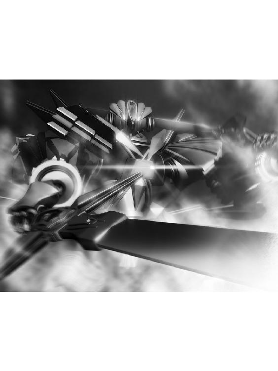

| リズベルルの魔３ メルディーノ篇～黒き災いの予言～ ほんとうの物語シリーズ | |
| ときてっと | |
| TOKITETO (2016) | |
リズベルルの魔３ メルディーノ篇～黒き災いの予言～
ほんとうの図書館１
数多の書物が封じ込められたその建物は、まるで本に綴じられた世界を守る為の堅牢な城であり、また夢を育む揺り籠でもある。
そこはほんとうの図書館。此処では無い何処か、今では無いいつかの物語が眠る場所。
時の流れすら止まる程の静寂がそこにはあって、ただ潜む様に眠り続ける建物と書物を目覚めさせるのは、いつも外からの来訪者と決まっている。
「ちょっとちょっとちょっとぉーっ！」
重々しい扉が突如として勢い良く開かれ、半ば転がるように図書館にやってきたのは一人の少女。
イユレールがわぁわぁとやって来た事で、図書館は開かれた扉から外の空気をいっぱいに吸って、今日と言う日、進む時間を思い出す。
そんな不思議にはさりとて気付かず、頬を膨らませるイユレール姫。
彼女もまた、この図書館に眠る物語の主役である事は、言うまでも無い。
「おやおや、どうしましたかな？」
「司書さん！ 私、怒ってるんだからね！」
暗がりからゆったりと現れた人影......彼曰く、図書館の司書......の様なもの、コルグストムが薄い微笑みを浮かべて尋ねれば、イユレールは細い腕を組み、ふんと上を向いて、目一杯の怒りを表現してみせる。
一体全体何事であろうか、と首を傾げるコルグストムは、何もかもを見透かした様な眼で、ただ黙ってイユレールの言葉に耳を傾けた。
「ランバート、あの剣の腕は立つけれど、肝心な所でどうにも失敗ばかりのへっぽこ騎士！」
「イユレール様お付きの騎士様だとか......ほう、さては彼と喧嘩でも？」
「ちょ～っと、からかっただけなのに、ランバートったら怒っちゃって！ で、仕返しとばかりに私の事を馬鹿にしたのよ！ 許せないっ！」
「それはいけませんな......イユレール様が」
「うぐっ......わ、私も確かに悪かったわ。最初にランバートを怒らせたのは私。それはそう。でも、ランバートってば......ランバートってば......私の愛しのノルアード様を馬鹿にしたのよ～っ!!」
ぎゅっと握った拳を戦慄かせ、目を吊り上げるイユレール。
なんと、それはいけない。コルグストムは大袈裟にそう驚いて見せたものの、胸中ではどう思っているのやら......ただただイユレールを愉快気な瞳で見つめ、頷くばかり。
「姫様がご執心の物語の中の騎士......ノルアードだって、こと恋愛となればへっぽこも良い所ではないですか......ですって～っ！ ノルアード様のへっぽこは愛すべきへっぽこ！ ランバートとは格が違うのよぉ～っ!!」
へっぽこの格とは果たしていかなるものか。怒り心頭のイユレールの瞳は、次にコルグストムをきっと睨む。
「そもそも、どうしてランバートがノルアード様を知っている訳!? さては司書さん、ランバートにあの本を貸したでしょ！ ついでに私の事も付け加えてっ！」
「言われてみると妙ですな。はて......何故ランバート様がほんとうの物語をご存じなのか......彼はこの図書館の場所さえ知らないと言うのに」
またまた、しらばっくれちゃって、と睨みを利かせるイユレールだが、どうもコルグストムが嘘を言っているのでは無いと気付くと、こちらもはて、と首を傾げる。
二人顔を見合わせて暫しの時が過ぎ、どうにもこの話はおかしいぞ、とイユレールが困惑顔で眉を顰めた時、不意に本棚の影から歯車の軋むような音がして。
「ミューメル、貴女の仕業だと言う事は判っていますよ」
初めからお見通しなのだ、との声色でコルグストムが言えば、本棚の影からふわりと現れたのはきらきらした光る何か。
イユレールが目を丸くして驚く前で、その光はくるりと宙を舞い、そして。
「うわーん、ごめんなさい～」
「まぁ、驚いた！」
声を発したそれは、機械仕掛けの翅を持った小さな女の子。
この図書館に収められた本の中から、物語の住人が飛び出してきたのでは、と驚くイユレール。
コルグストムはわざとらしく溜息を吐いて。
「こちらはミューメル、この図書館が所蔵する機械妖精でして、ご覧の通りあっちへふらふら、こっちへきらきら」
「はじめまして、お姫様。ミューメルは見ての通り機械仕掛けの妖精人形。よろしくね！」
「は～、貴女、とっても良く出来たお人形ね。まるで生きているみたいだわっ！」
「なにぶん妖精なので、生きているのでした」
「ますます驚き！」
イユレールが手を伸ばすと、ミューメルは機械仕掛けとは思えぬ軽やかさでそれを避け、きらきらと瞬きながら飛び回ったかと思えば、最後に握手の代わりとばかりに機械の翅でイユレールの指を擽って見せた。
感激の声を上げるイユレールに、ミューメルは一緒になって笑って見せ、それから一転しゅんとして。
「ランバートに赤い本を見せたのは、私なのでした」
「ふーん、なるほど。でもま、ランバートの事なんてどうでも良いわ。今は私、貴女に夢中よ」
「んふー」
イユレールの言葉を聞いたミューメルは、両手で頬を挟んで嬉しそうに目を細め、ふわりと舞いあがったかと思えばイユレールの頬に自分の頬をぴったりくっつけて喜ぶ。
普段は静寂に支配された図書館が、二人の笑顔で色づいた。
「すっかりご機嫌は直ったようですな」
「ええ、疑ってごめんなさい司書さん......と、思ったけど、やっぱり私、このままにしておけないわ！」
「と、」
「いーますと？」
「リズベルル達の物語、ランバートが私より先まで読んでるだなんて我慢できない！ と言う事で、ミューメルっ」
「りょーかいりょうかいっ！」
イユレールの声に敬礼して、矢の様に飛んで行く機械妖精。行く時とは打って変わって機械の翅を懸命に動かし戻って来たミューメルが抱えているのは勿論、イユレールが初めてこの図書館を訪れた時に手にした、あの赤い本。
御苦労さまと受け取って、イユレールはその表紙をそっと撫で......。
「はてさて、今日は物語の続きを読ませてくれるのかしら」
ページの間に指を入れ、期待に胸を膨らませながら、それを捲る......。
１．休暇のはじまり
霧中をかき分ける様に少年は走る。
急く思いで駆けながら、それでいて己の存在を隠す様に足音を潜め、ただただ霧の降りる道を進む。
昼間、猫を捕まえた。籠の中に閉じ込めておいて、後でこっそり取りに戻り、自室で隠れて飼うつもりだったのに、どうしてか母にはお見通しの様で、お説教ばかりかこんな時間まで部屋に閉じ込められる始末。
やっと家を抜け出して、ようやくあの猫を迎えに行く事が出来る。
猫には悪い事をした。なんたって昼間からずっと逆さまになった籠の中だ。さぞ窮屈で、機嫌を損ねている事だろう。
けれど仕方が無いじゃないか。何せ母に絞られていたのだ。また生き物を拾って来るつもりじゃないだろうね、だなんて。どうして知れてしまったのだろう。
きっと弟が告げ口したに違いない。あいつめ、後で懲らしめてやらなくっちゃ。けれど今は猫だ。
あいつ、首輪をつけていなかった。きっと野良だ。だから僕が飼い主になってやるんだ。部屋が駄目なら、秘密基地で飼えば良い。
そうだ、そうしよう。
想像すると愉快になって、少年はすっかり足音を隠すのを忘れていた。
そうして幾つ角を曲がった頃だろう。向こうから聞こえてくる別な足音に、少年はふっと足を止める。
思い出したのだ。昨今この街で囁かれているあの噂を。
〝予言者〟の噂を。
ごくり、と喉が鳴る。あんな噂、結局は出鱈目さ。だって本物を見た事ある奴なんて、僕の周りには一人も居ないんだ。
カツン、カツンと音がする。はじめは足音だと思っていたが、それにしては、何か奇妙じゃ無いか。
音の主が誰なのか、霧が深くて判らない。どんどん近付いてくる、音。ああ、どうして今日に限ってランプを忘れてしまったんだ。少年は後悔する。
その時、向こうから何か光る点が二つ、こちらへ向かって来るのが判った。
少年があっと悲鳴を上げそうになったその時、光が軽やかに跳ねて、足元にとんと着地する。
「なんだ、お前......一人で出られたんじゃないか」
ほっとして呟き、少年は腰を屈めるとやってきた光......それは街灯の明かりを反射した瞳の輝きだったのだ......昼間の猫を抱きかかえる。
「閉じ込めたりしてごめんよ。でも、母さんがさぁ」
喉を擽りながら語りかけると、猫はなぁと返事をした。ほったらかしにしていたから機嫌を損ねているかと思えば、なんだ、こいつは僕に懐いてるじゃないか。
ふふ、と笑みを溢して、少年は立ちあがる。
そうだ、もう一度母さんに聞いてみよう。こいつを飼っても良いかって。ちゃんと世話をするし、躾だってきちんとやる。だからこいつを家に住まわせてくれって頼むんだ。
そう決心し、引き返そうとした時、またあの音がした。
カツン。
少年は恐る恐る振り返る。猫が毛を逆立てて喉を鳴らす。
霧の中から、ぬっと黒い影が現れた時、少年は悲鳴を飲み込む事しか出来なかった。
暗い闇色の外套......いいや、それはただの襤褸切れの様な......を纏ったそいつは、人間なのだろうか。それとも得体の知れない怪物か。
ずるずると布を引きずり、こちらへ歩いてくるではないか。
カツン、カツン、と何かに引っ掛ける様な音を鳴らしながら。
がちがちと震えで歯が鳴るのを隠せず、少年はただ猫を守る様にぎゅっと抱きしめて、立ち竦む。
体が動かない。そいつがじわじわとにじり寄り、遂に少年の目の前まで迫る。
ああ、どうしてこんな夜に外に出たりしたんだろう。でも、だって仕方が無いじゃないか。猫を閉じ込めたままだったんだ。
そのまま一晩だなんて、可哀想だろう？
「......災いが、来る。黒き災いが......」
かすれた声で、そいつが言った。
余りにも微かで、男とも女ともつかない潰れた声。そいつは少年の耳元で囁き、そして、それだけだった。
カツン、カツン、と音が遠ざかる。程無くしてすっかり気配が無くなった所で、少年は安堵からぺたりと地面に腰を付いていた。
「お前、今の聞いたか？」
猫を持ち上げて、尋ねる。
今の言葉、謎めいた予言。
そう、あの黒外套を纏った人影は、噂の予言者に違いない。
「本当に、本当に居たんだ......噂は本当だったんだ！」
驚きと恐怖、そして好奇心の入り混じった声を上げ、少年は怖々と振り返る。
既に予言者の姿は無い。
あるのはただ、深い霧の景色のみ。
「今までありがとう、ジン、ノルアード......うちに置いてきちゃった猫ちゃん......アオゾラによろしくお伝えください......私は今日からマーネルの子になります！」
高らかに宣言したのは、リズベルル。
フェアルージュ駅のホームで、ネムリーにぎゅ～っと抱き付き動かなくなる。
そんなリズベルルをこちらもぎゅ～っと抱き返して、ネムリーもまたうんうんと大きく頷くものだから、ノルアードはそれを引っぺがそうと躍起になった。
「こら、リズベルル！ 我儘を言うものでは無いぞ......！」
「だって、ネムリーとお別れしたくないんだもん！」
「私もよ、リズ......！」
お互いにほっぺたをすりすりし合う二人を見て、ノルアードはぐぬっと言葉に詰まり、やがて根負けした様にジンの方に寄ってきて耳打ちする。
「......リズがこんな風に我儘を言うのは珍しいな」
「ああ」
「......こう言う時、どうしたら良い？」
困り果てた表情で囁くノルアードに、ジンは肩を竦める他無い。
かく言うジンも、実は相当に名残惜しい気持ちで居た。
黒海を断ち、儀式を終えた後、遂にフェアルージュを発つ今日という日。この一瞬一瞬ですら、後から振り返ればきっと良い想い出となるのだろう。
そう思えば、目の前のやり取りなど微笑ましく思えて仕方が無いでは無いか。
「昨日の今日だ......俺も何だかまだ気持ちが高ぶっていて、そうだな。やはりこの街とお別れするのは少し惜しい気持ちになる」
「ねー、ジンもそうだよね。特に昨日は凄かった！ ボルダナ一座の奇術ショー!!」
「うんうん！ 私ちょっぴり、お兄様の事浮ついただらしない夢追い人だって思う気持ちも残っていたけど、そんなの吹き飛んじゃった！」
「おい、お前今本音が出ただろ」
両手を握り合ってはしゃいでいるリズベルルとネムリーの頭をわしゃわしゃ乱暴に撫でながら割って入ったのは話題の一座の座長、ボルダナである。
ネムリーの兄であり、剣主の座をほっぽり出して奇術団を営むボルダナが、予てよりの約束であった奇術ショーにリズベルル達を招待してくれたのが正しく昨日の事だった。
最早芸術の域に達しているのでは無いかと言うショーの目眩く演目の数々には、リズベルル達のみならず、ジンもノルアードも感動し、ボルダナと言う男に対する認識を改めたものだった。
「違うの違うの、私、感動したんです。お兄様ってば本当にすごいって！ あのショー、今思い返しても目がうるうるしちゃうもの......」
と言ってネムリーが目元を拭うものだから、ボルダナも視線を泳がせ照れ臭そうに笑うのだった。
「そ、そうか？ そうかそうか......リズベルルとは約束していたし、この街を離れる前に一度は見せとかなくちゃと思ってよ。色々慌ただしい中での開催だったが......お嬢さん方が楽しんでくれたならそれで良いのよ。うん」
と言いながら、ボルダナは構内の時計をふと見やる。
そろそろか、と小さく呟き、辺りをぐるりと見渡すものだから、ネムリーははてと小首を傾げて兄の袖を引いた。
「お兄様、さっきからどなたかお待ちなの？ きょろきょろしちゃって。それに、シェラダン行きの列車にはまだ早いのに」
「ああ......そろそろ時間なんだが......三人のうち一人くらいは間に合うかとも思ったが、やはり無茶だったか......」
うーむと顎に手をやって唸るボルダナの顔に、次の瞬間にやりとした笑みが浮かぶ。
その視線が待ち人を捉えたのだ。ボルダナが手を振れば、相手は小さく頷くや小走りで駆け寄ってきた。
「よお、ギリギリだったな......と言いたい所だが、お前さんが一番乗りだ。他の二人は、どうやら間に合わなかったらしいな」
「お久しぶりです、ボルダナ様。そうでしたか、フルーナとパルナダはまだ......」
「ああ、多分連絡が行ったのが遅かったんだろう。あるいはまだ伝わっていない可能性もある。なにせ試練の間は......」
「ええ、外との連絡は断たれているもので。私の場合はたまたま試練を終えたその日に一報を聞いて、慌てて戻る準備を始めていた所でしたので」
「運が良かったって訳か」
はい、と頷いたのは暗い琥珀色の髪をした男で、眼鏡の奥に光る瞳はこちらも暗い青。
立ち振る舞いから、何よりその瞳の鋭さまで、ただ者では無い雰囲気を纏っている。
その気配に気圧され気味になりながら、おずおずとネムリーが兄と男に声をかけた。
「あ、あの......ダルカス様ですよね？ お久しぶりです、私......」
「これは失礼しました」
と、男......ダルカスは風を切るかの如くネムリーの方に振り向くや、今度は一転おもむろにその場へ膝を付く。
急な事にわたわたするネムリーの隣で、何事ですかとリズベルルも驚いた。
「ネムリー様、我らが剣主よ。この度は神聖なる儀式にも関わらず、駆け付ける事が出来ず申し訳ありません」
「へ、あ、ありがとう......？ と、そんな良いんです。ダルカス様ったら頭を上げて？」
「どうかダルカスとお呼びください、ネムリー様」
はぁ、と気の抜けた声を漏らすネムリーを前にして、こちらはただならぬ雰囲気を保って立ちあがるダルカス。
なんじゃこりゃ、と思いながらも、ジンは隣に立つノルアードを肘で突く。
「うちとはえらい違いだな......」
「......そうか？ ......そうだな」
「でも、フェアルージュ三騎士って格好良いよな」
「何を言っている。それで言えば、お前なんか丁度その立場だろう？」
「......そうか？ ......そうか......」
ノルアードの一言にふと気付かされ、ジンは何だか胃が痛くなる。
そう言えばジンもまた、シェラダンの騎士のうちで特別と言えば、そうなのだ。
と、一先ず自分の事は置いておく事にして、目の前の男......ダルカス・ファンデルに目を向ける。
そう、ファンデル。
フェアルージュでも特に力を持った騎士三家が一つ、ファンデルの名を継ぐ者がこのダルカスに他ならない。
「ダルカスとお会いするのは本当に久々ですね......確か、剣の試練を受けていらしたとか......」
「はい。我らフェアルージュ三騎士の名を継ぐ者、皆次代の剣主......ネムリー様のお力となる為に試練で己を磨いておりました。そう。全てはネムリー様の為」
「へ？」
きょとんとして、説明を求める様に兄を見やるネムリー。
何処から話せば良いのか、と腕を組み、ボルダナがそれに答える。
「つまりだな、グダードの爺さん達がお前を剣主として認めるのを渋っていた理由がこれな訳だ。お前は十分な資質を持っているが、余りにも若い。しかしどうやら親父も長くなさそうだ......と言う事で、ネムリー。せめてお前を支える三騎士は歴代でも屈指の兵に育てようと爺さん達は考えた。お前が剣主となる時までに、後継者たる新たな三騎士を育てようと......」
ボルダナの言葉に、ダルカスは頷く。
「そうして、我らは剣の試練に挑んだのです」
「剣の試練って聞いた事があるよ。人知れず何処かの街に隠された試練、それを終える事で挑戦者は真の騎士となる......１２の試練の事でしょう？」
目を輝かせながらリズベルルが尋ねれば、ボルダナはにやりと笑んで頷いて見せた。
「お伽噺じゃあ無い。その試練は今もまだ剣守達によって守られ伝えられているという話だ。このダルカスは、その試練を既に５つ終えているんだぜ。なあ？」
「ええ、本来であればせめて半分......６つは終えたかった所ですが......」
「そうそう、そうなる前にお前が剣主になって、しかも儀式を終えちゃったもんだから。急いで呼び戻したと言う訳。いやでも実際大したもんだぜ、５つ......そうか５つか......」
感心するボルダナを前に、ネムリーは口をぱくぱくさせて言葉も出無い様子だ。
深呼吸深呼吸、とリズベルルがその背をさすってあげれば、ネムリーは胸に手をやって深く息をつき、ようやく兄に尋ねるのだった。
「......お兄様、その話をいつから......？」
「いや、俺もちゃんと打ち明けられたのは儀式が終わってからよ。爺さん達もはじめからそう言ってくれてりゃ、もう少し話も単純だったものを......いや、俺相手ではやっぱり言い難かったのかねぇ......気を使われてたって訳だな」
「......なんだ、そうだったの......そう......」
彼女が剣主となった顛末はなかなか慌ただしいものだったので、思う所もあったのだろう。ふうっと安堵したように息をついて、ネムリーは微笑んだ。
ようやく閊えが取れたと言った風の妹に、ボルダナは一つの小箱を差し出す。
受け取り、ネムリーがその蓋を開くと、中に収められていたのはフェアルージュの騎士である事を示す徽章である。
「ダルカスはまだ正式な騎士の身分を受けていない。だが、いくつもの試練を終えた事からもその資格がある事は明白......ネムリー、お前からそれを授けてやるんだ。これは剣主としての仕事だぞ」
「はい......それではダルカス。心強い私の騎士......どうかこの街の為に、貴方の剣、貴方の力をお貸しください」
「......よろこんで」
ダルカスの胸元に、フェアルージュの徽章が授けられる。
新たなフェアルージュ三騎士の誕生だった。
「......よし！ じゃあ暫くお前達は仕事休み！」
と、ボルダナがリズベルルとネムリーの肩を景気良く叩くのと、駅のあちこちでクラッカーが弾けるのはほぼ同時だった。
「え！ え!?」
「私も～!?」
突然の事にネムリーとリズベルルが揃って目をまんまるにして驚いていると、それまで何処に隠れていたのか、マストロ・パストロの双子がトランクケースを転がして現れる。
「はい、ネムリー様。こちらに旅の準備は揃っていますから」「存分に楽しんできて下さいね」
「へ？ 旅？ 旅って言ったの？」
きょとんとしているネムリーに、ボルダナはうんうんと頷いて。
「良く聞けネムリー。お前は剣主となった。剣主っつーのは、こりゃ忙しい仕事よ」
「それは判ります、けど......」
「すると！ お休みなんかとても取れない。そんな暇ない。剣主が暇になる時と言えば......そう、儀式を終えた今、この時だけ！」
「だから、お休み......？ で、でもでも、だからってお仕事が全く無い訳じゃぁ......」
「じゃあ此処に居るこいつはどうなんだ！」
と、ボルダナが指さしたのは他でも無い、シェラダンの剣主、ノルアードその人だ。
何処か釈然としない表情をしながらもぐっと堪え、ノルアードは一つ咳払い。
優しげな表情になり、ネムリーに頷いて見せる。
「ネムリー殿、此処はボルダナの言葉に甘えておくべきだ。君はもっと皆に頼っても良いんだよ、でなければ......疲れてしまう」
「そう言う事だ。なぁに、お前が旅行に行っている間、今度はこの俺が剣主代理っつー事で留守番してやるからよ」
「う......」
と、ネムリーは目を見開いたまま固まったかと思えば、次の瞬間大粒の涙をぽろぽろ溢し、ボルダナにぎゅっと抱き付いた。
ボルダナはうろたえながらも、妹の頭を静かに撫でる。
「お、おいおい......ちょっと大げさじゃあ無いか？」
「お兄様......ネムリーは、ネムリーは幸せものです......ほんとうにほんとうにありがとう！ ああ、お兄様だいすきっ！ すきすきっ！」
ぎゅーっとしがみついて離れないネムリーにボルダナはたじたじになって、ジンとノルアード、それからリズベルルに助けを求める視線を投げる。
三人は兄妹を眺めながらうんうんと頷き。
「ボルダナは立派だな......」
「ああ、大層な阿房だと思った事もあったが、最早それも遠い日の事......」
「良いなぁ、お兄ちゃんって......私も欲しいです」
と口々にボルダナを褒め称えた。
やせ我慢して平気な風に振る舞って、更に昨日はショーまでこなしたものの、実は黒海を断った時の無茶が原因で体のあちこちを痛めているボルダナは、ネムリーに抱き付かれて痛みがぶり返すのを引き攣った笑みで誤魔化しつつ。
「あ～、と言う訳だから」
「うむ、ジンには予め話してあったのだが、リズベルルよ。これから君も休暇と言う事で良いな？」
「それって......」
ようやく離れてくれたネムリーとリズベルルを見やり、ボルダナはノルアードと一緒に一つ頷く。
小さな騎士と小さな剣主。二人の表情が見る見る笑顔になる。
「リズベルル、ネムリー。お別れはもう少し後回しと行こう」
「やった～！」
ぎゅ～っと抱き合って、リズベルルとネムリーは飛び上がって喜ぶ。
顛末を呆気にとられながら見守っていたダルカスを指で招き、ボルダナは囁いた。
「つー事で、帰ってきて早々悪いんだけど、うちのお姫様の護衛をよろしく頼むわ。お前程の騎士なら、俺も安心だ」
「は、はぁ......」
「くれぐれも頼むぞ、さぁそうと決まれば行って来い！ そろそろ列車が出ちまうぞ！」
「わ～、いそげいそげ!!」
フェアルージュの住人達に見守られながら、トランクケースを引っ張り駆け出す一行。
列車に飛び乗る寸前、リズベルルとネムリーは立ち止り、お互いに顔を見合わせ、それからぱっと笑顔になって、フェアルージュに向けて一声。
「いってきまーす!!」
楽しい旅行の幕開けだった。
「私、列車で旅行って初めて！」
コンパートメント席に飛び込んで、列車ががたごとと動き出すや、リズベルルは浮かれ気分ではしゃいだ声を上げる。
その様子を微笑ましく眺めながら、そう言う自分だって気付けばわくわくしているじゃないかと思って、ジンは少し照れ臭くなった。
「リズベルル、せっかくだから窓の近くに座ったらどうだ。交換しよう」
「うん、そうする！」
何となく流れで窓際に座っていたジンは立ちあがり、リズベルルと席を入れ替わる。
最初はリズベルルを挟む形で並んでいたのに、そうする事で隣を取られたのが残念だったのか、ノルアードが言外に余計な事しやがって！ と言った視線を向けてくるので、ジンは肩を竦めて。
「お前も一つずれろ」
「何だ、真ん中は嫌なのか」
「......通路側が好きでね」
そうかそうか、ならば仕方が無い、と取り繕う様に頷きながらリズベルルの隣へ行くノルアードを見て、ジンはやれやれと首を振った。
「ノルアードは、行きも鉄道だったんだよね。いいないいな～」
「行きは、それはもう大変だったんだ......あの忌々しいわたりうさぎ......」
「うさぎ!? 見たの!? すご～い！」
その時の事を思い出したのか、うんざりした顔になるノルアードに対し、リズベルルは羨ましそうに声を上げる。
向かいの席でごそごそ荷物を弄っていたネムリーも顔を上げ、ノルアードの方にぐっと体を寄せた。
「わたりうさぎって、すっごく珍しいんでしょう？ 私、写真でしか見た事無いけど、ふわふわで目が丸くって、可愛いの！ ノルアード様、近くで見られたなんて凄い事です！」
「近くで見たも何も、辺り一面わ～っと白い毛玉の群れ。可愛い所か恐ろしくもあった......俺は正直、二度と見たくない」
「やだやだ、私は見たいもん！」
「私も見たい！」
手を取り合って、リズベルルとネムリーは声にならない歓声を上げた。
「うさぎこないかな～」
その騒ぎを眺めながら、ジンはそのわたりうさぎとやらの事を思う。
兎と言えば、白くて耳が長くて目が赤く、学校の飼育小屋なんかに居るあの生き物だ。
だが、このエンダージェンにおいてはどうだろう。
と言うのも、この国にもすっかり慣れてきた頃、エコーデュオン......即ち地球に居た種類の生き物が、この国には存在しないのでは無いかと気付いたのだ。
つまり、この国にも猫が居れば、鳥も居るし、兎も居る。だが、それはこの国に生息する種類の猫であり、鳥であり、兎である......と言う訳だ。
取り分けそれは人と近しい生き物程当てはまり、無論の事だが、人の手の入った品種程、両世界での差異が大きいと言う事になるだろう。
ジンの黒髪黒眼がこの国で珍しいのだって、同じ理由かもしれない。
それは動物のみならず、例えば草や木にしてもそうで、気付いてみればこの国で目にする植物は、見知った様で何処かジンの知るものと少しだけ違っているのであった。
そう言えば、いつだったかジンの国にはどんな花があったのかとリズベルルに尋ねられた時、幾つか名前を上げても聞き覚えが無さそうにしていた事もあったっけ。
それで何か困った事があるかと言われれば無いのだが、少なくとも口にするものが馴染んだものとそっくりなのは、後から考えれば幸運だったなぁとジンは思ったものだった。
尤もそれは全て〝最適化〟なる辻褄合わせのお陰かもしれない。だとしたら何とも便利な事である。
「ね、ジンの国にも、うさぎっていた？」
「ああ、居たな。兎は大体、かわいいな」
「ね、かわいいよね～」
ふふ、と笑うリズベルルとネムリーに頷くジンの隣で、ノルアードはうぐぐ、と唸っている。どうもその大移動とやらは相当に衝撃的な光景だったようである。
どっちにしても、そんなに珍しいのなら一度くらいは遭遇してみたいものだな、と思いながらジンはうーんと伸びをして......。
「......なぁ」
ふと、個室の外で直立する背中に目を向ける。
一同の視線が、一斉に移った。
「彼はもしかして、ずっとああしているつもりか」
本人に聞こえない様声を絞りながら囁き、ジンが指さした先に居るのは、フェアルージュ三騎士の一人、ダルカスである。
こちらに背を向けて、まるで身動ぎもせず、ただ何者も寄せ付けぬ威圧感を放ち個室の前に立っていた。
ネムリーのボディーガードとしてはこれ以上無い程の逸材であるが......。
「仕事熱心なのは良い事だが」
......ちょっと堅苦しい気も、する。
どうにかしてくれ、と皆の視線がネムリーに集まれば、フェアルージュの新前剣主は手をわたわたさせて縮こまる。
「うんと、ダルカスはとっても真面目なのね......って、私実は、あんまりお話しした事無くて......と言うのも、そう、昔からああなんです」
胸元を抑えて、ふうっと息を吐くネムリーだった。
「あのグダード様の孫と言うと、頷けるものがあるなぁ」
腕を組み、ジンが苦笑すれば、リズベルルが身を乗り出して意見した。
「グダード様も、話すとそんなに怖い人じゃ無かったよ。優しいお爺ちゃんって感じ」
「......リズ、いつの間に仲良くなったんだ」
「うんと、庭弄りの事で話が弾んだの」
へぇ、と個室が沸けば、ますます扉の外のダルカスの存在が気になってしまう。
一頻り笑った後、皆の意見を代表して......と言う訳では無いが、ジンが切り出した。
「なぁ、ネムリー」
「は、はい......？」
「こっちの席は三人並んで良い感じだが、ネムリーの方は一人でその、寂しいなぁ」
「そ、そうかしら......？」
「うん......つまり。彼をだな、座らせてやったらどうだ？」
と、ダルカスの背中を扉越しに指させば、ネムリーはまたまた両手をわたわたさせて、ついでに首もふるふる振る。
「べ、別に私が立たせてる訳じゃ無いんだからっ......でも、えーと、そうね......ねぇ、ダルカス？」
扉を開けて、ネムリーがおずおずと件の騎士に声をかける。
体ごと振りかえるダルカスに、ネムリーは手招きして。
「貴方も、こっちに座ってください......その、立ってたら、疲れるでしょう？」
「お気遣い痛み入ります。しかしこのダルカス、ネムリー様の護衛を仰せつかった身、どうぞ私の事はお気になさらずお寛ぎ下さ......っ」
ダルカスが言い終わる前に、ネムリーがその手を引いて強引に個室へとダルカスを引き込む。
驚くダルカスに、ネムリーは頬を膨らませて怒った。
「もう、せっかくの旅行なんだから、そんなんじゃ皆疲れちゃうわ！ これは命令よダルカス、せめてこの旅の間は、私と貴方の関係は対等なものとなさい」
「わ、ネムリーってばすっかり剣主様！」
リズベルルが目を丸くすれば、ネムリーは急に恥ずかしくなったのか顔を赤らめる。
まだ何か言いたそうな顔で、しかしこう言われては頷かない訳にもいかず、一先ずネムリーの隣に......少し間を開けて......腰を下ろすダルカスだった。
「しかしダルカスよ。これは考え物だぞ。お前の様な者が終始彼女を見張っていれば、これは何かあると周りに宣伝している様なものだ」
「そうだな、普通にしているのが一番だ。下手に取り繕ったり物々しくすれば、それだけ余計に目立つ。何も知らぬ者が見れば、ネムリーはただ可愛い女の子にしか見えない訳だから」
ノルアードとジンがうんうんと頷き合うと、ネムリーは頬を手で挟んで更に赤くなる。
「か、かわいいだなんて、ジンってば......」
「ネムリーはかわいいよ～。かわいいかわいいしちゃう」
照れるネムリーをかわいいかわいいと撫でるリズベルル。
方やフェアルージュの剣主。方や球の魔の招き主。
そう言われても誰が信じられ様か。ダルカスは納得したようだった。
「ノルアード様、ジン様。貴方がたの仰られる事が正しい様です。私は少し軽率でした。しかし、ネムリー様と私が対等と言うのはいけない」
「真面目な奴だなぁ」
「じゃ、こうしたら？」
ぱちんと手を打って、リズベルル。
「ネムリーは、お金持ちのお嬢様で、ダルカスさんはそのお付きって役。ネムリー様じゃなくって、ネムリーお嬢様～」
「わぁ、良い考えね」
リズベルルの案にぱっと笑顔になるネムリーだったが、内心ジンは首を傾げる。
それって何か変わる？ と思ったが、剣主と騎士よりは堅苦しさは無くなるか......と思うと確かに良い案にも思え、何にせよリズベルルとネムリーが楽しければそれで良いのであった。
「じゃ、決定～！」
リズベルルが言って、わ～と皆が拍手する。
さて、一先ず皆席について落ち着いた、と言ったところで、ぱちぱち拍手していたリズベルルがこてんと首を傾げ。
「そう言えば、旅行って何処に行くの？」
と今更の様で尤もな事を口にした。
ああ、それそれ。と頷いて、ジンは荷物から手作りの冊子を取り出し皆に配る。
手渡された冊子をしげしげと眺めるリズベルルとネムリーである。何でしょう？ と表紙を見れば「旅行のしおり」裏表紙を見やれば「マストロ・パストロ編集」の文字。
「えーと、なになに......〝疲れた体に癒しを 波に揺られて和みましょう 湖の街・メルディーノ〟。メルディーノ！」
「わぁ、これってあの二人が作ったの？ 上手ね～」
「えとえと、お話が載ってるよ。〝メルディーノは湖を囲む街。かつてメルディーノの中心は地に穿たれた窪みであった。けれどそこに不老不死の人魚・メルディーナが大雨と共にやってきて住み着いたのだ。すると見る間に窪みは湖となって、草木は喜び、街は栄えた。やがてメルディーナは街の青年と恋に落ちる。けれど人と人魚は相容れぬもの。二人の仲は引き裂かれ、人魚は大いに悲しみ泣いた。やがてその涙が土地を削り、湖は深く大きく成長した。それでもメルディーナの悲しみは癒えず、やがて人魚は湖に溶けていなくなってしまいましたとさ〟......はぁ」
「何だか悲しいお話ね」
目をうるうるさせるリズベルルと、堪え切れず目元を拭うネムリー。
ジンとノルアードは揃って「へぇ～」と言う感じで、ジンなどはこう言う観光のネタってノルアードは意外と好きなんだよな......とか考えていた。
「別に人魚でも良いじゃないか、と思うがなぁ」
「......お伽噺の様ですが、実は何かの暗喩なのかもしれません。例えば、古くは身分の差で引き裂かれた男女も少なくなかったと聞きます。人と人魚は、異なる身分の人間を表しているのかもしれませんね」
とダルカスが静かに言えば、これに反応したのはリズベルルとノルアードである。
「みみみみ身分ってなんだろう？」
と恐る恐る尋ねるリズベルル。そうですね、と考え込んで、ダルカスはネムリーを見やり。
「例えば、剣主様。かつては今以上に一般人と身分に隔たりがあったと聞きます」
さーっと顔を青くするリズベルル。
と、その様子には気付かずに、ノルアードが膝に拳を打ち付けて声を上げた。
「愛、だろう」
存外に大きい声で言うものだから、個室はしんと静まりかえる。
「見た目の違いとか、身分とか、そう言うものじゃないだろう。大事なのは、お互いがお互いを愛する事、それだけだろう？」
「は、はぁ......」
ノルアードに詰め寄られて、ダルカスは困った様に頷きつつ、救いを求める様に手元のしおりに目を落とす。
「ええと......ああ、書いてある。他にもいくつか説がある様です。例えば、人魚は不老不死だと言う事」
「つまり？」
「不老不死の人魚は、当然時とともに老いていく人間と共に歩む事は出来ない。それ故に二人は結ばれなかった......と言う説ですね」
「それだな」
「それです」
リズベルルとノルアードは、二人揃ってその案が良いそれが正しいに違いないとうんうん頷く。
ネムリーはまだ可哀想な人魚に同情しているのか目元を拭っていたが、急にリズベルルの手をとってぎゅ～っとした。
「もし仮に身分違いの二人だったとしても、今この時代ではそんなの関係無いっ。だって私達お友達だもの。立場とか役目とか関係なくいつまでもお友達って約束したもの。恋だってきっと同じよ！」
「ネムリーっ！」
「リズ......っ！」
二人は身を乗り出して、ぎゅーっと抱き合うのだった。
「二人は本当に仲が良いな」
「だって友達だもんっ！」「ねー」
と笑い合う二人だったが、不意にリズベルルが思い付いた顔になり、ネムリーの手を取ってぶんぶんと振る。
「フェアルージュでネムリーと友達になれたんだもん、今度のメルディーノでも友達が作れるかも！」
「リズ、それって素敵な思い付きだわ！ これを今回の目標にしない？ 旅には目的が必要だって私思ってたの！」
「うんうん！ そうしたら三人組が作れるよ！」
「三人組！」
となんだか不思議な盛り上がり方をする二人を横目で見つつ、ダルカスに話しかけるジン。
「ダルカス、俺は剣の試練って奴の事を聞きたいんだが」
「試練、ですか。申し訳ありませんジン様。試練について詳しく話す事は禁じられているのです。何故なら、剣の試練とはそれを探す所からして、一つの試練であるからです」
「そうか、残念だな。儀式と言い試練と言い、この国は秘密にする事が多い」
申し訳なさそうにするダルカスに笑って返すジンの腹を突くノルアード。
少し意地悪そうな顔をして。
「何だジン、まさかお前も剣の試練を受けたいと言うのか」
「良いだろ、別に......それを受けたら、俺も力を付けられるかなと思ったんだ」
と言うのは半ば本当で半ば嘘である。
本当の本当はちょっと格好良いな、と思って興味があるジンであった。
「試練は相当な剣の腕で無ければ挑む事さえ許されないと聞く」
「......じゃあ俺は門前払いって事か」
がっくりと頭を垂れるジンを慰める様にノルアードが笑う。
「しかしジン、シェラダンにも剣の試練を終えた者が居るのだぞ」
と言うと、思い当たるのは一人しかいない。
「もしかして......アルベルさん......師匠が？」
「その通りだ。あのお方は試練を８つ終えた正しく騎士の中の騎士。その稽古を受けているお前もまた、まぁそのうち並くらいにはなれる筈だ」
肩を叩かれて複雑な心境になるジンと、こちらは驚いて感心するダルカス。
眼鏡の奥の瞳が尊敬と好奇心に細められ。
「８つですか、それは凄い......」
「ダルカスは５つよね。ごめんなさい、本当は６つ目の試練を受けたかったんでしょう？ 私達につき合わせてしまって申し訳ないわ」
「何を仰います。もとより我が剣はネムリー様......失礼、お嬢様の為に振るうと誓った身。この度は御一緒出来て光栄です」
「ふふ、頼りにしているわね。でも、言葉はもうちょっと柔らかくが良いわ」
「......善処します」
微笑むネムリーと、少し弱った顔になって頷くダルカス。
ジンはシェラダンに居る師の事を考えて、成程あの強さと厳しさにはそうした根拠があったのかと深く感心する。
と、不意に窓の外にちらちらと光るものが見えた。
ふとそちらを向けば、それは光では無い。白っぽい小さな花弁が、風に乗って舞い散る様だった。
「わぁ、あれってセリオラの花だ。きれー」
「いつの間にかフェアルージュを出ていたのね」
はしゃぐリズベルルとネムリーの言葉を脳裏に聞きながら、ジンはしかし、その光景と記憶の中とを重ねている。
舞い散る花。そして向こうに見える並木。
あれは見覚えがある......そう、まるでかつて故郷で見た桜の様な......。
「わ、わー」
気付くとジンは立ちあがり、窓を持ち上げていた。
柔らかな風が吹きこんできて、桜の花弁が車内に舞い込んでくる。
ジンは窓の外に手を伸ばし、それを一つすくう様に掴んだ。
手を開けば、やはり見知った形の桜の花。
「......これは」
桜がこの国にもあると言う事は、ジンの想像は全くの見当はずれだったのか。
いや、しかし自分がどれ程この花について精通していると言えようか。もしかしたら良く似た別の植物かもしれないのだ。
疑問と郷愁がぐるぐると頭の中を駆け巡り、ジンはしばし手の中の花弁を眺めて動けなくなる。
すると、誰かが袖をぎゅっと引いたので、ジンはようやくはっとした。
「ジン、しめてしめて！」
「車内が花弁だらけになっちゃう～！」
「あっ！」
慌ててジンが窓を下ろすと、リズベルルとネムリーは花弁をいっぱい髪に付けて擽ったそうにふるふる首を振り、それからお互い顔を見合わせて笑いだす。
「何だジン、そんなにセリオラが見たかったのか」
足元の花弁をかき集めながら、ノルアードも苦笑した。
ジンは照れ臭くなって頬をかき、言葉を濁す。
「いやぁ、そうか、セリオラ......これはセリオラと言うんだな」
「街の名前もセリオラだよ。お花が咲いてる時期に通れるなんて、運が良かったね～」
へぇ......とジンは再び景色に目を向けようと窓の外を見る。
と、妙な事に気がついた。
何だか流れる景色の速度が落ちているのだ。はて、まだ駅では無い様だし......と思っていると、列車は遂に止まってしまう。
「あらら、止まっちゃった？」
「......俺が窓を開けたから、じゃないよな？」
心細くなってぽつりと漏らすと、皆の視線が集中する。
いやいや、そんなまさか、と両手を上げるジンである。
「うさぎー。うさぎはー？」
列車が完全に停車してピクリともしなくなると、リズベルルとネムリーは窓を目一杯に開けて首を突き出し、この足止めの原因がわたりうさぎにあるのでは無いかと期待してきょろきょろする。
二人が首を挟んではいけないと、いきなり降りてくる事が無い様に窓を押えるダルカス。
一方、思い過ごしに違いないと考えつつも、今にも車掌が扉を開けて現れて、窓を開けた者は誰かと攻めに来るのではと考えてジンは若干落ち着かない。
そして、それにも増して落ち着かないのはノルアードである。
行きの列車でも長い事待たされたのが余程堪えたのか、組んだ腕に指をとんとんさせていたかと思うと、不意に立ち上がり声を上げる。
「ええい、この列車はどうなっているのだ！」
「わ、急に大きな声出さないでよ」
座席に戻って頬を膨らませるリズベルルである。と、ノルアードはその手を取って、それからついでにジンの腕も掴む。
「行くぞ、二人とも！」
「行くって何処へ」
顔を見合わせるジンとリズベルルに、ノルアードは決まっているだろう、と頷いて見せる。
「こんな場所で足止めとは妙だ。それに、あの忌々しいうさぎ共も見当たらない。すると原因は他にある」
「どうするんですか、ノルアード様」
きょとんとするネムリーに、ノルアードは言うのだった。
「先頭車両だ。運転手に原因を直接問い詰めてやる！」
「ええ、一人で行けよ......」
「わ、私運転してるとこ見たいかも......」
「あ、私も！」
「お嬢様が行かれるのでしたら、私も」
と、結局皆で列になって、ぞろぞろと先頭車両へと移動すれば、乗客が入れるのは客車の先頭までで、当たり前だが先頭車両へは立ち入りを禁止されている。
悔しがるノルアードを尻目に、途中通路にあった自動販売機で飴を買って、皆で分ける一行。
飴玉をころころ転がしながら、何と無しにリズベルルが窓の外を覗けば、向こうで何やら作業をしている人影があった。
「何かやってるよ」
「本当だ、よし！」
と、言うが早いか窓から身を乗り出し外に降りるノルアード。リズベルルとネムリーが仰天する。
「わ、勝手に降りて大丈夫？」
「......あいつはあれで、ちょっと浮かれてるんだ」
呟くジン。口の中だけで、リズベルルと一緒に旅行だから......と付け加える。
やれやれ、と思いながらも、結局は気になって列車を降りる事にするジン。リズベルルも後に続く。私も、とネムリーが窓枠に手をかけると、これにはダルカスが黙っていなかった。
「いけませんお嬢様。何があるか判らぬ以上、此処はあの三人に任せて様子を見ましょう」
「......貴方ちょっと、大げさね......」
ぼやきながらもネムリーは渋々頷き、窓の外に手を振った。
ノルアードを先頭に、ジンとリズベルルが何やら車体を覗きこんで話し合っている車掌達に近寄っていくと、足音に気付いた車掌が顔を上げた。
面倒な客が来たぞ、と言う表情で言う。
「ちょっとお客さん、困るよ勝手に降りてきちゃぁ」
「申し訳ない。私はシェラダンの剣主、ノルアード。訳あって先を急いでいる。何があったか教えて欲しい。出来る事があれば協力しよう」
ノルアードがそう名乗れば、車掌達はあっと言う顔になってノルアードの顔をまじまじと見つめ、俄かに姿勢を正した。
その後ろで、ジンとリズベルルは顔を見合わせて苦笑する。
訳あって先を急ぐって、ただの旅行だけどね。
「なんと、剣主様でしたか......これは失礼いたしました。当列車をご利用頂き誠にありがとうございます。ええ、光栄です......しかし困った事がありましてな」
「どうやら発力機の調子が悪い様で、こんな事はめったに無いんですがね。実はこの列車は随分古い型で、近々大規模な整備を行う予定だったんですが......それを待たずこの有様と言う訳です」
「お爺ちゃんの列車なんだ！」
言葉を濁す車掌達が、リズベルルの言葉にふっと表情を和らげる。
成程、どうやら列車そのもののトラブルの様だ。すると出来る事は無さそうだな、とジンはちらりとノルアードを見た。
ノルアードは何やら考える様に腕を組み、列車を見上げ、視線をジンに向け、それからリズベルルを見やる。
「......すると暫くは動けない、と？」
「ええ、お急ぎの所申し訳無いのですが、今からセリオラの駅に連絡を入れて、牽引車を呼び寄せますので......一先ず駅に着いてしまえば先頭車両を交換してすぐに出発出来る筈です」
「ふむ......牽引車......それはつまり、引っ張る？」
「ええ、引っ張る」
うんうん、と頷くノルアード。何か嫌な予感がするな、とジンは眉を寄せる。悪い予感と言うのは当たるもので、ノルアードは満面の笑みでジンの肩を叩いた。
「要は駅まで引っ張っていけば良いのだ。何も牽引車の到着を待たずとも良いでは無いか、なぁジン！」
「ええ、俺が引っ張るの......」
「わー、ジンってば凄い！ 力持ち！」
ぱちぱちと拍手するリズベルル。やっぱり待つのは嫌なのね......と思いながら、ジンは仕方なく頷く。
困惑する車掌達の前で、リズベルルが胸元に下がった封印の鍵を手に取れば、その唇から唱えられるのは良く聞き馴染んだ詩。
「海を断ち、天舞う音色......おいで、ヴィルフォーナ！」
不意に風が吹き荒び、解けた封印が煌めきを起こし白銀の巨人を呼び覚ます。
影が落ちた。巨大な質量が突如として眼前に現れる。弦奏鎧ヴィルフォーナ。雄々しきその姿が、列車の前へと降り立った。
「なんと、弦奏鎧......！ しかし、これで駅まで引っ張って行くと言うのはちょっと無茶では......」
「じゃあ、これならどうだ」
言うや、ジンはヴィルフォーナの腕を蹴り、その体を駆け上ると、呼応するように開かれた胸部へと滑り込む。
制御リングに手をかけると、すぐさまヴィルフォーナと感応した。
まさかこんな所で働く事になるとはな......まぁ仕方が無いさ、リズベルルとネムリーの楽しい旅行の為だと思えば、お前もちょっとはやる気になるだろう。
己が分身に語りかけ、ジンはヴィルフォーナの第二の形を呼び覚ます。
白銀の巨人が唸りを上げたかと思うと、体の構造が置き換わり、瞬時に竜の形態へと姿を変えた。
ジンは背中の翼を大きく羽ばたかせ飛び上がると、先頭車両の上へと取り付く。
「車掌さん、俺が引っ張って行くから、乗客に向けて発車するってアナウンスをやってくれ」
白銀の竜・ヴィルフォーナの出現と変化をぽかんと口を開けて眺めていた車掌達は、ジンに声をかけられてはっと我に帰り扉へ向けて駆けて行く。
その隣に並んで、リズベルルが何やら話しかけているのは、もしかしたらネムリーと一緒に運転席に乗せてくれとお願いしているのかもしれなかった。
ふふ、と笑みを漏らし、ジンは一転気を引き締める。
幸いセリオラの駅まで行けば交代の列車があると言うから、ジンが引っ張って行くのもそこまでだ。
とは言え、慎重に行かねばならない。あまり早すぎては危ないし、力加減を誤って脱線するなんて事になれば大事だ。
何せ列車は後ろにずーっと連なっているのだから、良く加減して行かなければ。
「よし、行くぞ、ヴィルフォーナ！」
ジンは気合いと共に翼に力を込める。緑色の燐光が灯り、翼の先から力の奔流が放たれた。
先頭車両に取り付いたヴィルフォーナの体が軋む。ずっしりと腕に重さが伝わる。
「重い......」
当然だ、ヴィルフォーナが取り付いている先頭車両には、客車がずーっと連なっているんだから......未だかつて、これ程の重労働を課せられた事があったろうか。いや、無い。
ジンは歯を食いしばり、ヴィルフォーナの出力を上げる。ごうっと熱が吹き荒れて、続いて車輪が軋む音。
更に力を込める。ごとんと感触があって、列車がとろとろと進み出す。
そうすると、次第に速度に乗って楽になってくる。
よし、行ける。ジンは心の中で呟いて、まだ口の中に転がっていた飴をがりっと噛んだ。
一面白亜に染まる世界を、ただ一点の影が行く。
闇よりも深い黒き弦奏鎧。その巨人の鎧は名をバルグターム。
このエンダージェンを統べるとされる〝王〟の僕たる弦奏鎧。その荘厳なる巨体は今、シェラダンの街の果て......天よりも高く聳え立つ水門の袂を歩いているのだった。
粒子状に宙を舞う霧の如き結界の中を、バルグタームは行く。このまま歩んで行けばその黒き体躯もまた、白い世界の向こうへ溶けて消えてしまうのでは無いかと思われた時、巨人はふと足を止めた。
弦奏鎧の名の通り、鎧を着込む様に、あるいは鎧と一体となっていた操り手......シズマが独り言つ。
「繋げ」
呟きの元、バルグタームの巨腕がその背に伸びたかと思うや、次の瞬間、巨人の手の内には金色に輝く宝剣が握られ振りぬかれている。
音も追いつかぬ程の速度で宝剣が地面へと突き立てられるや、瞬きの後にシズマは幾つかの気配に囲まれていた。
バルグタームとその宝剣によって繋がれたのは、シズマ達〝王の使者〟が集う場所。
現実と意識の狭間にある、不可侵の領域である。
「結論だけ言えば、議長の足取りは掴めなかった」
シズマの言葉に、周囲の気配達が僅かに身じろぐ。
気配。それらは正しく気配としか言いようのないものだ。
不明瞭で、判然とせず、ただそこに居る様に錯覚する、彼らは投影だった。
彼らが今何処に居て、現実にどんな姿をしているのかをシズマは知らない。
判る事は、彼らもまた王の使者と言う役割を受け継いだ者達であり、そして今この場においてはシズマもまた、彼らからすれば何処の誰とも知れぬ気配でしか無いと言う事。
「封印球と弦奏鎧の所在は確認できたのでしょう？」
「今はボルダナと言う男が所持している」
「......奪われた、と言う事？」
「正当な譲渡である事も確認済みだ」
「他の使者の持ち物かもしれない。議長の物だと何故判る？」
「対象の形質に依存しない、我々の封印球よりも一段階上の封印である事も確認した」
気配の言葉に、シズマは淡々と事実だけを述べて行く。その情報に、気配達は少なからず困惑したようだった。
「譲渡したですって......ちょっと待ってよ。封印球を所持してないって事は、議長の所在はもう特定しようが無い？」
「お互いに面識が無い以上、そうなる」
「呆れた話だわ......すると議長は役目を降りたって事？ 私達に何の相談も無く？」
「そうだとすれば、王は後任を選ばなかったという事か？ あるいはこれから招かれる？」
「少なくとも、我々が今後彼の支援を受けられなくなった事だけは事実だ」
シズマが言えば、気配達はふっと風に吹かれたように揺れた。
実体の方では、溜息を吐くか舌打ちでもしたか......そんな所だろう。
「これからどうするの？」
「この場に居ない他の使者を探しだして、そちらの集まりに加わるしかあるまい。このままでは役割に支障が出かねん」
「......ちょっと待って」
相談する気配達の言葉を遮り、一つの気配が驚いた様に声を上げた。
「今試して気付いたんだけど、前より深い階層に接続できるようになっている！」
先程までとは違った色の気配達のざわめき。
シズマもバルグタームに命じて、剣を通して王城への接続を試みる。
成程、先日までよりも深い階層領域までの侵入が可能となっていた。
すると、これは王が議長の後任を選ばなかった事に対する、シズマ達への措置なのだろうか。
何故、今になって既存の使者に上位の権限を与えたのか......あるいは、議長はこれが目的で身を隠したとは考えられないだろうか。
このエンダージェンに何かが起ころうとしている......そこまで考えるのは早計か。
柄にも無く不安に駆られるシズマだったが、気配の姿ではそれが周囲に伝わろう筈も無い。他の気配達は早くも安堵し、楽観的な声が上がる。
「何だ、前より便利になったって訳。生体素子の動きも全部参照出来るじゃない！ 成程、議長はこれを見て私達に情報を流してたって事ね」
「今度からは俺達全員が議長の段階に昇格したと言う訳だな。すると王が後任を招かないのも頷ける......か」
「まぁ良いわ、当面の問題は解決したし。議長もこれが判っていて隠居したのかもね。さて、そろそろ閉めましょう。他に何か伝える事がある人、いる？」
気配達がお互いを窺うように揺れる。
すると、それまで発言の無かった一つの気配が浮かびあがり、重々しく口を開いた。。
「......メルディーノで、気になる事があると言えばある」
「何よ、言いたい事があるならさっさとして」
「......いや、情報が不足している。もう少し調査をしてから話そう......」
それが最後だった。ふっと気配が消失し、領域から放り出されたシズマは、再びバルグタームの内部に復帰していた。
体に感覚が戻ってくるのを待ち、深く息を吐き出す。
「......湖の街、メルディーノか......」
シズマは目を細め、誰に聞かせるでも無く呟いた。
セリオラ駅に到着した列車は、無事に万全な先頭車両との連結を果たし、再び軽快に走り出していた。
つまり、此処までジンが引っ張ってきたのである。ヴィルフォーナで、力をどばどばと放出して、引っ張ってきたのである。
白銀の竜をくっ付けて駅に入った列車を見て、ホームで待っていた人々はさぞ驚いた事だろう。
それが燐光に包まれて瞬時に姿を消したものだから、ますます驚かせてしまった筈だ。
だが、そんな事ジンにとってはちっぽけであった。何せ、此処まで列車を、客車が連なった列車を引っ張ってきたのだから。
要するに、疲れたのであった。疲れてへとへとなのであった。
「......ノルアード、お前は......いや、俺自身もまた......ヴィルフォーナの力を過信していた様だ......」
「うん、すまん」
絶対なる力を持つ弦奏鎧ヴィルフォーナ。シェラダンの街の守護鎧。伝説に歌われる天舞う音色。
これがあれば、万事上手く行く。
そう自信を持つ一方で、ジンは密かに思っていたのだ。
何事も、あまりに上手く行き過ぎている。何れ足を掬われる時が来る。
それが、来たのだ。今日がその時だったのだ。ジンはどっと重たく感じられる体を恨めしく思う。
実際には、考えていた程細かい配慮は要らなかったと言っても良い。
ジンが少し速度を出しすぎたな、と思えば、列車の方でブレーキをかけて制御してくれたからである。
だからジンはただただ推進力を放出するだけで良かったのだが、それはつまりジンの体力にも等しい訳で、放出に放出を重ねた結果ジンは最早くたくたであった。
座席にどしっと体を落ち着かせ、深く息を吐く。
「リズベルル～、俺はもう、疲れた......」
と、ジンは体をこてっと寝かせて、横並びに座るノルアードの膝を乗り越えて、リズベルルの膝に頭を寝かせる。
リズベルルはふふっと笑みを溢して、ジンの頭をよしよしした。
「ジン、お疲れ様。私達、ちょっぴりはしゃいじゃいましたね。ごめんなさい」
「良いさ。遅れが出無くて、他の乗客も喜んでくれただろうし」
「ほんと、ジンってば凄いわ！ 遅れが出る所か、普通に走るより早かったかも！」
「うんうん！」
はしゃぐリズベルルとネムリーである。
今度は満足感から深く息を吐くジン。すると、横になっているのもあって何だか眠たくなって来た。
かと思えば、腹を叩かれてその眠気も吹き飛んでしまう。
ぐふっと唸りながら何事かと見やれば、ノルアードである。
リズベルルに膝枕されるのは良いのだが、そう言えば背中の下にはこいつの足があったか、とジンは首を振り。
「......ジン、俺の言いたい事が判るな？」
「リズベルル、ノルアードも膝枕して欲しいってさ」
「......」
お前、なんて事言うんだこいつ、と言った顔で口をパクパクさせるノルアードである。
リズベルルはへへっと照れ臭そうに頭をかいて。
「それは、ちょっと......」
ショックを受けるノルアードであった。
一方ネムリー不在のフェアルージュ、マーネルの屋敷、その書斎では、ボルダナが机に向かってうんうんと唸っていた。
手元の書類を精査して、ふむ、と一つ頷き判を押す。ぺったんぺったんと押しまくる。
「剣主ってーのは、大変な仕事だねぇ......」
溜息と共にぼやくのであった。
するとマストロ・パストロの双子が今まさにボルダナが判を押し終えた書類を取り上げて、二人で覗きこめば、うーむと唸り。
「ここにも要りますよ、アニキ」「ネムリー様から預かった仕事なんだから、ちゃんとしないと」
「判ってる判ってるって......ほらよっと」
判子をぎゅっと押しつけて、書類は完成。ちなみに黒海への対応の最中、壊れた道路の補修予算を求める書類であった。
許可許可、そんなもん。道路無かったら困るじゃんよ、とボルダナは書類を指で弾く。
誰とも無く溜息が洩れたかと思えば、三人そろって溜息を吐いているのであった。
「こう言うのはあれだな、ネムリーが向いてるな。こういう仕事は」
「ネムリー様、そろそろメルディーノに着いたかなぁ」「ああ、メルディーノ、行きたかったなぁ」
片方がぼやく事に片方が頷いて、つまりはネムリー達が旅行に発つその日、三騎士が誰一人として間に合わなかった時は、双子がネムリーの護衛として付いていく手筈だったのだ。
居残りで書類作りを手伝わされるよりは、それは勿論旅行にくっ付いていく方が得である。気持ちは判る、とボルダナは頷いた。頬杖をついて。
「何お前ら、そんなに行きたかったの。つっても俺達なんて巡業中は毎日が旅行みたいなもんじゃん」
「いやぁ」「それはそうなんですけど」
「それにさぁ、俺は思う訳よ。正式に剣主になった今のネムリーに足りないもの......それは腹心の部下って奴よ。この旅行を通して、ダルカスの奴と信頼が結ばれれば良いな、と兄貴としては思う訳」
「あー、アニキも考えてるんですね」「一応、考えていた訳だ」
一応って何だ一応って、と怒ってマストロ・パストロの頭を叩こうとするボルダナだが、腕を持ち上げた所で目の覚めるような痛みが背中に走ったので、呻き声を上げるに止まった。
フェアルージュ上空の黒海を断った時の痛手である。医者は五月蠅く色々と言っていたが、まぁあと一週間くらいすりゃ治るだろ、とお気楽なボルダナであった。
「でも良いんですかアニキ、旅行の間はともかく、帰りは二人っきりな訳で、信頼を超えたものが結ばれちゃったりして」
「あのダルカスだぞ、そんな事が出来る男かよ......」
「いやぁ、でもネムリー様くらいの年頃は、年上の男性に憧れるもんじゃ無いんですかね」
「......ネムリーが......」
ふっと遠くを見る様な眼になって、ボルダナは暫し黙り込む。
かと思えば、その瞳にじわりと涙が浮かぶものだから、マストロ・パストロ兄弟は大いに慌てた。
「......なんか、ちょっと、あいつの結婚式を思い浮かべてぐっと来ちまったぜ......相手が誰かはともかく......」
「はぁ......」
何言ってんだこの人、と思いながらも、ネムリーの花嫁衣装を思い浮かべてやっぱりちょっとじんわり来てしまう双子達であった。
セリオラを出た後は大きなトラブルも無く、メルディーノ行きの列車は滞り無く進み、目的地へと到着した。
一行が列車を降りて最初に抱いた感想は、等しく同じものである。と言うのも、ともかくメルディーノと言うのは。
「あつい～」
暑いのだった。
リズベルルもネムリーも、照りつける日差しに顔を赤くして、服をぱたぱたして空気を送る。
セリオラでは桜が咲いてなかったっけ？ と首を傾げるのはジンである。
結界を超えてメルディーノに入った途端、気温はみるみる上昇し、日差しは強く照りつける様になった。
そもそも、このエンダージェンにおいては太陽と言うものが存在しない。だと言うのにこの日差しは何だと言うのか。
早くものぼせる三人とは対照的に、涼しい顔をしているノルアードとダルカス。
やはり彼らは鍛え方が違う、とジンが感心すれば、二人の額から汗が流れ落ちるのを目敏く見つけ、ただの痩せ我慢か、と可笑しくなった。
「まずはともかく、荷物を宿に置きに行こう。しおりにはなんて書いてある？」
「うんとうんと」
リズベルルが旅行のしおりを取り出してネムリーと一緒に覗きこむ。程無くして宿の紹介を見つけ、早速一行はそこへと向かった。
ボルダナが手配してくれたのはメルディーノでも最も人気のあるホテルの一つで、建物の目の前はすぐにメルディーノ湖であると言うのだから嬉しい。
チェックインを済ませてキーを貰い、部屋へ辿り着いてみれば、もうこれだけで今回の旅行は満足だ、と溜息が出る様な贅沢な部屋だった。
「わー凄い。湖がすぐそば！」
「ほんと！ きれ～」
「わ、両隣の部屋と中扉で繋がる様になってる......ね、せっかく旅行なんだからここ、開けておいても良いよね、皆で一緒にお泊りしたいもん！」
言われて見やれば確かに部屋の両隣には中扉があって、隣室と通り抜けが出来る様になっていた。
ボルダナが手配してくれたホテルの部屋は三室。つまり三部屋のコネクティングルームと言う事だ。
ね、ね？ とリズベルルがせがむ様に言うので、荷物を置いて一息していたジン達は揃って頷く。
リズベルルとネムリーはぱっと笑顔になって中扉を開けにかかり、あっという間に三部屋は一つの大部屋へと姿を変えた。
「部屋割に関して提案があります」
とは意外にもダルカスの一声だった。
何だろうと思えば、リズベルルとネムリーは真ん中の部屋で寝るべきだと言うのだ。
「端の部屋では、何かあった時に対応が遅れる可能性がある......旅行の間、お嬢様方に万が一の事があってはいけない」
と真面目な顔で言うダルカスの警護対象は、いつの間にかネムリーからネムリーとリズベルルの二人に拡大している様子である。何とも頼もしいものだった。
まさか、この最高級ホテルで部屋に押し入りなんて無いだろうが、と思いながらも、ジンとノルアードは賛同する。
「良いじゃないか、真ん中の部屋は一番眺めも良いし」
「どうせならネムリーとダルカスが組みになったらどうだ」
ジンが冗談めかして言うと、ダルカスはにこりともせず首を振り。
「いえ、私も男ですので、それは問題かと」
「や、冗談だけどね」
「ダルカスは真面目ね～」
「でも、安心です！」
くすくす笑うネムリーと、尊敬の眼差しを送るリズベルルである。
まぁ寝る時の事は日が落ちてから決めれば良いじゃないか、と一行は部屋を出て、ホテル一階の店へと向かった。
これがかなり充実していて、歩いているうちにホテルの中である事を忘れ、どこかのモール街を歩いているのではと錯覚する様な規模なものだから驚かされる。
それに、解放されたゲートの向こうはすぐに湖と言う事もあって、行きかう人々の多くは水着のままで、それも旅行気分に拍車をかけた。
そう、広大なメルディーノ湖は湖水浴場としても有名で、つまり此処に来たからは泳がねばならないのだ。
しおりにそう書いてある。
「どうする、街の方の店に行ってみようか」
「ううん、此処のお店で十分だよ！ 十分っていうか、全部見て回るだけで目がまわりそう～」
両手で頬を挟んで楽しげな声を上げるリズベルル。お目当ては可愛い水着であって、ホテルの売店がイマイチそうだったら街まで出ようと言う手筈だった。
ところがやって来てみれば売店どころか一大ショッピングモールと言った充実っぷりなので、お嬢様二人は大満足。
二人がそう言うのであれば男性陣から文句など出ようはずも無く、早速水着選びが始まった。
「お嬢様達はどうやら二人には内緒で選びたいとの事。護衛は私に任せて、ノルアード様とジン様はどうぞご自由に見て回ってください」
「ダルカスは水着買わなくて良いの？」
「私は用意がありますので」
事も無げに言うダルカスであったが、そもそも彼はこの旅行の事は出発の直前まで知らされていなかった筈で、だとしたら水着を持っているのは何故なのだろうかとジンは不思議に思う。
もしや試練に必要なのでは、と思い当たると気になって仕方が無く、けれど聞いたところでダルカスはその詳細を教えてくれなさそうだし、と考えているうちに当人はリズベルルとネムリーの後ろについて行ってしまう。
少し気がかりを残しつつ、ともかく水着を選ばねば、と頷くジン。
「......と言っても、男はこう言う時、選ぶ楽しみというものが殆ど無いな......」
「ああ......どれでも同じな気がするな......よっぽど奇抜なのでも無ければ」
二人でぼやきつつ、適当な水着を手にとっては広げてみるジンとノルアード。
「なぁ、ジン」
「ん」
「......水着の下は、裸なんだよな」
「殆ど、そうだな」
「それって凄く、大変な事じゃないか？」
「ああ、大変だな」
「下着だと駄目なのに、水着だと許される感じがあるのは、変じゃないか？」
「お前の言いたい事は、判る。判るが......世の中とはそう言うものだ」
「そうか......」
と、二人はうんうん頷きながら無難そうな一着を広げて。
「これなんか良いじゃないか」
「いかにも無難だな。これにしよう」
と決めかける。が、ふと顔を見合わせて。
「......お揃いはやめよう」
「......そうだな」
何だかんだで熟考する二人であった。
水着に着替えて、砂浜に立つ。見渡す限りの広い湖畔。翠玉色の水面に白い波は、見ているだけで心を奪われそうになり、ジンは照りつける日差しの元、深く息をついた。
こんなに美しい所に何日も居たら、元の生活に戻れなくなりそうだな、と考えていると、か細い声が耳に届く。
「ジン～」
振り向けば、心細げに身を縮めるリズベルルである。
その水着姿が少し意外で、ジンは微笑ましく目を細めた。
「これ、どうかなぁ？」
と不安げに言うリズベルルは、花模様にフリルが可愛らしいトップスとボトムに別れたタイプの水色の水着姿で、普段のリズベルルからすれば少し意外にも思えるが、健康的な肌と相まってかえって新鮮で似合っていた。
頭をぽんぽんと叩いてやって、ジンが頷くと、リズベルルは少し安心した様に見上げ、胸元に下がった封印の鍵を両手で挟む。
「似合う似合う、可愛いじゃないか」
「う～、私は、おなか出てるのとか、どうかなって思ったんだけど、でもでも、ネムリーが絶対こっちが良いって言うの。それで、色々悩んだんだけど......」
とリズベルルはわたわたし、ふとジンの恰好をまじまじ眺める。
ぽつりと言った。
「良いなぁ、男の人はパンツ一丁で......悩まなくてすむもん」
「心細くなるからやめて」
大体、パンツ一丁って。
「それにそれに、皆浮かれて気付いてないかもしれないけど、こんなの殆ど裸だよ？ たいへんだよ！」
「うん......それな......」
同じ事言ってるし、とジンが笑っていると、ダルカスとネムリーが一緒にやってくる。
小脇にパラソルを抱えているかと思えば、ダルカスはそれを砂浜に突刺し、タオルを広げ、あっという間に陣地を作った。
何においても優秀な男である。
「わ～、リズってば可愛い！ やっぱりこっちにして良かったじゃないっ」
「そう言うネムリーはこんなの付けてるし～っ」
う～と頬を膨らませてネムリーの巻いているパレオを引っ張るリズベルル。
きゃーきゃーはしゃぐ二人。
「ふふ、リズってば恥ずかしがり屋さんね。そうだ、髪も後ろで結んだらどう？」
とネムリーはリズベルルの髪を弄り出す。
しかしこれにはリズベルルが飛び上がって抵抗を見せた。
「だめだめ！ 背中見えちゃうからっ！ 背中は駄目～っ！」
「あら、お腹は良いのに？」
「おなかもほんとはだめ......」
と長い髪を抱き寄せてすっぽり体を隠すリズベルルである。
そうこうしていると、ようやくノルアードが現れた。手に持ったボトルを振りながら歩いてくる。
「ほら、日焼け止めを買ってきた。しっかり塗らないと、皆あとが酷い......ぞ、」
と、立ち止まり、惚けた様になったノルアードの視線の先には、言うまでも無くリズベルルの姿があった。
またまた身を縮ませるリズベルルに、ノルアードははっとして咳払い。日焼け止めのボトルをリズベルルに手渡し、うーむと唸る。
「あの、ノルアード......」
「うむ」
「ネムリーとジンはね、似合うって言ってくれたんだけど、ノルアードは、こういうの、好き？」
「うむ......」
ノルアードは腕を組み、深く考え込む様に頭を垂れる。
そこで悩む必要が何処にある、とジンがはらはらしていると、ノルアードは難しい顔をしたまま、静かに答えた。
「大変、魅力的だと思う」
その素っ気ない言葉にリズベルルはたちまち笑顔になって、先程までの緊張は何処へやら、飛び跳ねる勢いでネムリーの手を取り、はしゃいだ声を上げた。
「ネムリー、いこういこうっ！ 私こんな広い場所で泳ぐの初めてなのっ！」
「ちょっと、リズったら、そんなに張り切ると転んじゃうわっ」
「二人とも、その前に日焼け止め、日焼け止めっ！」
「そうだった～」
ジンの注意に気付いて、ころころ笑い声を上げるリズベルルとネムリー。
その様子を砂浜に立ち尽くして眺めながら、ノルアードは溜息を吐く。
「......ダルカス......」
「何でしょう」
「......帰ったらボルダナに伝えておいてくれ。感謝する、と」
「はぁ」
ぎゅっと拳を握るノルアードに、困惑するしかないダルカスであった。
「しかしこうしていると本当に海に来たみたいだ」
波打際に屈んで、水を掬ってジンがぽつりと呟けば、両隣に居たリズベルルとネムリーがぎょっとした様にジンの顔を覗き込む。
ああ、そうかと気がついて、ジンは苦笑しつつも説明した。
「俺の元居た世界は、殆どが海で覆われていたんだ。海と言っても、黒海とはまるで違う。そこには生き物も棲んでいるし、こんな風に泳いだりも出来る。太古の昔、生き物は皆そこから生まれたんだそうだ。母なる海、と言って青く広大な景色だった」
と言っても、ジンにしてみれば海に行って、ましてや泳いだ記憶など遠い過去のものである。だからこれは殆どイメージによるもので、少し大げさだったかな、とも思ったが、少なくとも黒海とはまるで違う性質であると言う事は伝わったようだ。
リズベルルとネムリーは感心して、不思議そうな表情で頷いていた。
「エコーデュオンって、まるで物語の中の様な世界なのね」
「うん、私もいつか行ってみたい」
にっこり笑顔になって、リズベルルはぱしゃぱしゃと水を弾いた。
何気ない一言ではあったが、リズベルルの母親がジンと同郷であったかもしれない事を知った今では、その言葉に別の意味合いを感じずには居られない。
ジンは頷き、よしっと気合を込めて立ち上がれば、二人の少女に笑顔を向ける。
「いつか青い海で泳ぐ時の為に、練習をしとかなくっちゃな」
「はーい！」
元気良く返事をする二人と共に、ジンはざぶざぶと湖に入って行く。
冷たい水が日差しで熱を持った体に丁度良く、それだけで楽しい気分になってくると言うものだ。
リズベルルとネムリーはころころ笑みを溢しながら、早速水を掛け合って遊び始めた。
「結構深いかも」
「ずっと行ったら足なんてつかなくなるぞ」
「わー、しずむー」
とリズベルルが呑気に沈み始めるので、ジンは慌ててその腕を掴む。
ばしゃばしゃ犬かきでやってきたネムリーも反対の腕に掴まって、暫くジンは二人を引っ張って泳ぐ羽目になった。
「みてみて！ こんなの拾っちゃった！」
すっかり水にも慣れた頃、素潜りを繰り返していたリズベルルが嬉しそうに戦利品を掲げて見せる。
それは乳白色の巻貝で、見る角度によって様々な色が浮かんで見えて綺麗である。
「わぁ、リズってば凄い。私は潜るのなんて怖くてむりっ！ ジンに掴まって無いと！」
「ヘンな生き物とかいるよ」
「ひぇ～」
「巻貝を耳に当てると、海の音がすると言うな」
と言ってから、この世界においては海と言うのは正しい言い回しで無いかもしれないと気付くジン。
じゃあ波の音だ、と言い直そうとするが、辺りを見渡せば波だらけである。音くらいする。
なんか音がするらしいよ、と肩を竦めるジンである。
「へー、海の音か～」
と巻貝を耳元に当てると、急に声を上げて笑いだすリズベルル。
「ひゃっ！ ふふ、なに～？」
とリズベルルが巻貝を覗き込むと、するすると何やらひも状のものが何本も貝の中から出てくるではないか。
それはくらげに似た生き物で、どうやら巻貝は彼の住処だったらしい。
「ヤドカリが住んでたみたい。ほらほら、見てー」
「やめて～リズっ！ こわいこわいっ！」
ジンにぎゅーっと抱き付いていやいや首を振るネムリーに、リズベルルはころころ笑いながら巻貝を近づける。
あんまりネムリーが怖がるものだから、可愛いのに、とちょっぴり残念そうにしながら、慰める様に巻貝を撫でるリズベルルである。
「ジンの国にも、こう言うの、いた？」
「う～ん、俺の知ってるヤドカリはもうちょっと......」
と、でろでろゼリー状の中身を眺め、ジンは首を傾げて。
「硬かった」
「へ～」
頷き、リズベルルは暫く興味深げにヤドカリ？ を観察していたが、やがて気が済んだのか水の中に放してやった。
ようやく人心地がついたとばかりに胸元を押えて大きく息をするネムリー。余程苦手の様である。
「リズってば怖くないの？ 私びっくりして気絶するかと思った」
「怖くないけど」
とリズベルルは笑顔になって。
「良いダシが出るかな～って思った」
「食べるの!? 食べられないでしょ!? 食べられないわよね!?」
錯乱するネムリーを落ちつける為に、ジンは一先ず頷いて見せて、何と言って良いのか判らずぽつりと一言。
「毒があるかもしれない」
毒があるんじゃ食べられないわね......と急に冷静になるネムリーと、何故だか神妙な顔になってこくこく頷くリズベルル。
それで安心したのか、ネムリーは気の抜けた様に静かになった。リズベルルはそんな彼女におまけよろしくくっ付いている。
はしゃぎすぎて疲れたのかな、と苦笑しつつ、二人を引っ張りながら浅瀬に引き返し、ジンが砂浜の方を見やると、向こうではノルアードとダルカスが二人で砂の城を作っていた。
「あの二人、何やってるのかしら」
特に砂浜に正座して砂弄りに勤しむノルアードを、ネムリーは不思議そうに眺める。
ジンはリズベルルを見て再び苦笑。
「心を落ち着けている所だ」
「あ、ダルカスさんこっち来る」
「丁度良い、ダルカスと交代だ」
流石に二人を引っ張って泳いでくたびれてしまったジンは、こちらにやって来るダルカスとバトンタッチして砂浜に戻る。
何だか俺はこの旅行の間引っ張ってばっかりだな、と思いながら、ぺたぺた砂を弄っているノルアードの前に腰を下ろした。
「お前も泳いできたらどうだ」
「ああ、うん......」
「せっかくの旅行なんだから」
「ああ、うん......」
「リズベルルと一緒なんだから」
「......！」
俄かに立ち上がるノルアード。
その瞳には、いつに無くやる気が漲っている。
「行って来る」
一体今のやり取りの何処が彼に火を付けたのか、あるいはただ背中を押してもらいたかっただけなのか、ノルアードは凛々しい一言と共に、湖への一歩一歩を踏みしめて行く。
やれやれ、とその背中を見送って、ジンは砂の城を怪獣ばりに崩すのであった。
そうして泳ぎ始めて１時間も過ぎた頃、男性陣は砂浜の上に転がってのんびりと時間が過ぎるのを楽しんでいた。
と言っても厳密にはそんな風にしているのはジンだけで、ノルアードはと言えば何を考えているのか膝を抱えてぼんやり湖を眺めていたし、ダルカスは一時もネムリーから視線を逸らさず、万が一溺れでもしないよう監視しているし、という具合。
リズベルルとネムリーはと言えばまだ全然遊び足りないと言った風で、きゃーきゃーはしゃぎながら水をかけっこしていたから元気なものである。
ジンが微笑ましくその様子を眺めていると、俄かにダルカスが立ちあがり、二人に声をかけた。
「お二人とも、そろそろ上がって休憩されてはどうでしょう。大分お身体も冷えている様子、風邪でもひいてはいけません」
「わーほんと、リズったら唇が真っ青だわ！」
「わわわわ、そう言われてみれば寒いかも。ふるえてきました」
顔を真っ青にしてがたがた震え始めるリズベルルの背中を、たいへんたいへんと押しながら駆け出すネムリー。
良く気がつくなぁ、とジンが呟くと、ダルカスは無言で眼鏡を持ち上げかちゃりと鳴らした。
「ほらほら、リズ此処に座って」
「わわわわ」
「大変大変！ がたがた震えてるじゃない......と、そうだ！」
閃いた、とぱちんと手を鳴らしたかと思うと、ネムリーは出し抜けにノルアードの手を引っ張り立ち上がらせ、あれよと言う間にリズベルルの所まで連れてくる。
「ノルアード様、リズが体を冷やしちゃって大変なの」
「なんと、それはいけない。リズ、何か温かい飲み物でも買ってこよう。少し待っているんだ」
「じゃなくって！ こうっ！」
と、ネムリーはノルアードをリズベルルの後ろに座らせる。
「そしてこうっ！」
一体全体何事かと困惑するノルアードの事等お構いなしに、その腕を持ち上げ、リズベルルの肩に回させて、仕上げにリズベルルを正面からえいっと押した。
こてっと背中に倒れたリズベルルは、そのままノルアードに包まれる様な恰好になる。
くっついた二人は目を白黒させて、硬直。
「リズ、ノルアード様に温めて貰いなさい。ダルカスの言う通り、風邪をひいたらいけないわ」
「え、え、え」
あわ、あわ、と口をぱくぱくさせ、リズベルルは助けを求める様にネムリーを見上げ、ジンを見やり、それから真っ赤になってノルアードの腕を抱き寄せてぎゅーっと縮こまる。
ノルアードはと言えば一言も言えず、暫しの間黙り込んで固まっていたが、やがてぽつりと呟いた。
「寒くは無いか、リズ」
「平気です......ノルアード、あったかい......」
二人の様子に、ネムリーは満足げに頷いて、少し悪戯っぽく笑うとジンの方にやって来る。
「私はジンにくっついちゃお！ ......ねぇ、ジン。リズの事、判ってる？」
判ってる、と聞かれたらば、それが指すのはリズベルルの気持ちの他にはあり得ない。
見てれば判る、とジンは頷く。
「もしかしてノルアード様の方も......そうなの？」
ジンは再び頷いて返した。こちらも見てれば判る。まるわかり。
するとネムリーは目を輝かせ、きゃーっと叫びたいのを我慢するかのように身を縮めた。
「それって、二人は両想いって事!? あら、あらあらっ！ そうなの？ そうなんだっ！」
まぁ、そう言う事になるだろう、とジンは三度頷いた。
ただ......。
「ただ、二人とも今一つ進展が無い」
「良いじゃない、ゆっくりと育めばっ！ そっか～、じゃぁ人魚の話にノルアード様がこだわっていたのは、リズとの関係の事だったんだ。愛さえあれば、なんてもう上手くいったも同然じゃない」
「横槍が入らなければ、そうなるだろう」
「ふふ、リズ可愛いもんね......これはノルアード様も油断できないわね」
「そう言うネムリーはどうなんだ。気になる異性はいないのか」
やっぱりこの年頃の女の子は、そう言う話となると盛り上がるのかな、と思いながら、ジンはからかう様な気持ちで尋ねている。
するとネムリーは考える様に小首を傾げた後、思い当たらなかったのかふるふる首を振った。
「じゃあ、理想の男性像とか」
「理想の男性像......う～ん、難しいわ、でも......」
と一頻り悩んだ後、唇に指を当てて、照れ臭そうに微笑みながら打ち明ける。
「やっぱり、欲を言えば......お兄様みたいな方かしらっ」
あ、そう。
欲を言ってそれ。
少し前まではボルダナの事をだらしないだの何だの言っていた記憶があるのだが、どうやらネムリーの中のボルダナ像はすっかり見直された様である。
ジンが笑顔のまま固まっていると、ネムリーはつんつん脇腹を突いてくる。
またまた好奇心旺盛な年頃の少女の表情になって、尋ねるのだ。
「ジンは？ ジンはお付き合いしてる女性とかいないのかしら。ヴィルフォーナの騎士様ともなれば、モテモテ、なんでしょ？」
「ところがそう言う話とは縁が無いんだな、俺は」
「え～、そうなの？ じゃあジンの理想の女性像はどんな方なのかしら」
理想の女性像、か......。
これにはジンも大いに悩む。
やはり真っ先に思い浮かぶのはどうしても幼馴染のコトネであった。
だが、ジンがコトネを好きだったのは何よりもまず関係性があってこそ。長い時間一緒に過ごして、お互い理解しあえばこそ強く惹かれたのである。
ジンの理想の女性像とコトネとが完璧に合致するかと言えば、また別な話になるだろう。
ジンはたっぷり考えて、あっちでノルアードと一緒に固まっているリズベルルと、こっちでジンを突いているネムリーを見て、それから付き合いのある女性の顔を思い浮かべる。
マール、ユフィーユ......いや、人間性と言う事だけで何も異性だけでは無い。同性であっても気持ちの良い奴は沢山いる。
そう言う人間性の良い所を合わせて行って、最も理想とする女性像を作り上げたとしたら......これが考え込むと難しい。
「とりあえず、料理は上手い方が良い」
「それからそれから？」
「優しく、穏やかで、頭の回転が速くて、と言いだしたら限が無いけど......やっぱり」
とジンは笑って。
「ネムリーみたいに可愛い人だと嬉しい」
「もう、ジンってばからかってるのね！」
ぽかぽかとジンを叩くネムリーである。
はっはっは、とジンが笑っていると、先程から姿が見えなかったダルカスがやってきた。
「お嬢様、新しいタオルをお持ちしました。どうぞお使いになってください」
「わー、ありがとうダルカス」
とふかふかのタオルにくるまって、ネムリーはダルカスに礼を言う一方、釘をさす事も忘れない。
「でも、リズ達には持って行っちゃだめよ。せっかく良い感じなんだから」
「心得ております」
あ、心得てましたか......と頷く二人。
ダルカス、何においても優秀な男である。
泳ぎを堪能した後、さてどうしようかと来れば、街の方へ観光に行こうと言うのは自然な流れで、一行は着替えを済ませると早速街へと繰り出した。
そこかしこが観光客で賑わっており、華やかな活気が感じられる。
それはシェラダンやフェアルージュとはまた違った熱量を持って、例えば毎日がトゥールウ祭だったらこんな風かもな、とジンは連想した。
「一番の名所であり、街の中心でもある湖は勿論、メルディーノは芸術も盛んな街と知られ、多くの旅行者が訪れます、だって」
しおりを読み上げるリズベルルは、露店で買ったアイスをご機嫌な様子でぱくついており、幸せいっぱいと言った表情だ。
一緒になってアイスを舐めながら、ネムリーはからかう様に声をかける。
「リズ、さっきまで震えてたのにアイスなんか食べて平気なの？」
「そう言うネムリーだって」
「だって相変わらず暑いんだもんっ」
「ね～」
そんな調子で賑やかな街の様子を眺めながら歩いていると、不意に辺りを歩く人が向こうを見つめている事に気付く。
何だろう、とそちらを向けば、視線の先にあるビルの屋上に大きな看板が設置されている所だった。
どうやら一度取り付けに失敗した様子で、作業員が留め具を外しにかかっている。ジン達の行く先の道がだんだんと渋滞して来たのは、ビルの付近で安全の為の交通整理を行っているからだ。
何と無しに看板の取り付けを眺めていると、もごもごアイスを食べ終えたリズベルルがそれを読み上げた。
「えっと、儚い一瞬を永遠に......人魚箱展？」
「何か芸術系の展覧会みたい。ちょっと素敵な雰囲気ね」
看板には黒い背景に今にも散りそうな花が一輪浮かび、その周囲に細かい泡が散らばった絵が添えられている。
リズベルルが読み上げた文句と相まって、何やら神秘的な雰囲気が感じられ、成程少し気になる宣伝だ。
「せっかくだから見て行くのも良いかもしれないな、何せ芸術の街だ。一つくらい見て行こうじゃないか。人魚と言うのもこの街に来た記念に丁度良い」
ノルアードが提案すれば、皆揃って頷くのだった。
「わー楽しみ。ちょっとドキドキしちゃう」
「そうだねっ......あれ？」
と、リズベルルがビルの辺りを見て首を傾げた。
見やれば、ビルの壁に手をつく様にして一人の少女が歩いて行く。
そこが通行禁止になっている事にも気付かぬ様子で、気分でも悪いのだろうか、何だか足取りは心許無い。良く見れば、少女は杖をついていた。
周囲の人々も、看板を見上げるのに熱心で誰も少女に気を留めている者はいなかった。通行整理の人間は観光客と揉めていてそちらを見ていない。
あ、と声を上げる間もなかった。
まず、リズベルルが駆け出している。
ビルの屋上でばぁんと金属の弾む音がした。
作業員が驚いた表情をしたかと思えば、次の瞬間看板は落下を初めている。
真下には、今にも倒れそうな少女が居た。
危ない、と誰かが叫ぶ。
「リズ！ ええい、相変わらず無茶な事を......止むを得ん、ジン！」
リズベルルとは距離が離れていたが、迷っている暇は無い。
ジンは頷く。
リズベルルもまた、駆け出した時から考えている事は同じだったようで、封印の鍵を手にして叫んでいた。
「海を断ち、天舞う音色！ ......メイルレヴァンの剣っ！」
「心得たっ！」
光が集い、リズベルルの頭上に閃光が迸る。
否、それは光では無い。質量を伴った実体である。メイルレヴァンの剣が空を切る様に伸びたのだ。
ジンはイメージする。その巨大な剣を握っている様を。近頃、ジンとヴィルフォーナの感応はますます強くなり、またヴィルフォーナ自身の意志もまたリズベルルを守る様に働いているかのごとく感じられる。
だとすれば、例え触れていなくとも動かせる。
いや、やらねばならない。
ジンが気合いと共に想像の剣を振り抜けば、リズベルルの頭上に出現した剣もまた同様に振り下ろされていた。
もう少しで少女を押しつぶす所だった看板が、その一閃で見事に断ち切られている。
ずん、と重い音がして両断された看板が道路に激突する。誰もが放心してその様子を見ていた。奇跡的に怪我人がいない事が理解されると、安堵の声が方々から漏れる。
「リズ、平気か！」
ノルアードの後に続いて皆が駆け付ければ、リズベルルは汗をびっしょり浮かべて荒く息をしながら、倒れた少女の上に覆いかぶさっていた。
二人とも、怪我は無い様だ。ジンもネムリーも、そしてダルカスもまたほっと息をつく。
リズベルルははっとすると、倒れた少女を抱き起し揺さぶり出した。
「ねぇ、大丈夫!? 具合悪いの？」
少女はぼんやりと宙を見つめたまま揺さぶられていたが、やがてはっと我に返った様になって、まずリズベルルを見て、それから覗きこむ一行を眺め、やがて混乱した表情で呟いた。
「あれ......ボク、どうして......今の、君がやったの？ 何が起こったの？」
「看板が落ちてきて、この子は君を助けたんだ。どうもその前から具合が悪い様子だった。念の為病院へ行った方が良いかも知れないな」
リズベルルと少女を立ち上がらせて、ジンが言えば、少女ははっとして首を振る。
少し慌てた様子で、握っていた杖を持ち直した。
「あ、違うの......ボク、最近そうなんだ。なんだかぼうっとして......だから病院なんて、ほら、何処も怪我してなんか無い。っと」
転びそうになるのをジンが慌てて支えると、少女はおかしいなと呟いて、罰が悪そうに微笑んで見せた。
「ごめんなさい、何だか腰が抜けちゃったみたい......」
「あんな事があったんだから当然だわ。はい、これ貴女のでしょう？」
ネムリーはダルカスと一緒になって辺りに散らばっていた紙を拾い集めて少女に渡す。
受け取ってから、転んだ拍子にそれを落としていた事に気付いて、少女は安堵した表情を見せ、ぺこりとお辞儀した。
「ありがとう、これ大事なものなんだ」
「君はこの街の人か。その様子だと一人で帰すのは心配だ。お節介かもしれないが、家まで送ろう。勿論病院と言う選択肢もある」
ノルアードが言うと、少女は手にした杖をぎゅっと握り、少し迷ったそぶりを見せ、それからリズベルルとネムリーを見て、照れ臭そうに笑った。
「じゃあ、その......家の方で。皆さんにお礼もしたいし」
「その前に」
と肩を竦めるダルカスの視線の先を皆が見やれば、慌てた様子の作業員達がこちらにやって来る所だった。
少女の名前はプランシューネと言って、湖の畔にある屋敷で暮らしているのだと言う。
それなら然程遠くも無い。とは言えプランシューネは杖をついており、体調も万全で無いと言う事でジンが抱いて歩く事になった。
一緒に暮らしているリズベルルや、そろそろ気心が知れてきたネムリーならばともかく、とジンは初め気を使ったが、プランシューネは然程気にせぬ様子でありがとうと微笑んだ。
プランシューネの案内で湖の方へ歩いている最中、腕の中にあるその赤い瞳がこちらを見上げている事に気付き、ジンが僅かに視線を落とすと、プランシューネは少し遠慮する様に瞼を伏せる。
おずおずと声を上げて。
「......ボク、貴方みたいな黒髪の人、はじめて会った......」
「珍しいか」
「うん......とっても綺麗」
「よしてくれ、照れる」
ジンがむず痒い顔で答えると、プランシューネはくすりと笑む。結局二人して噴出した。
そうして話しながら歩いていると、初めは何だか血の気が引いた様だった顔色もだんだんと良くなって、日に焼けた健康的な肌に朱が差してくる。
本人の言う通り、具合が悪そうだったのはぼんやりしていたかただの貧血程度のもので、特別大騒ぎする程の事でも無かったのかもしれない。
屋敷が近くなる頃には、プランシューネは杖をついて一人で歩き、一行を道案内してくれた。
「此処が今ボクが住んでる家なんだ。せっかくだからお茶でも飲んで行ってよ。あ、そうだ！ こないだ貰ったお菓子があるんだ、ボクとパパじゃ全然食べきれなくってさ、片付けるの手伝ってほしいな」
プランシューネが言うと、リズベルルとネムリーがピンと背筋を伸ばす。
「お菓子......」
「お菓子............」
目をきらきらさせて、誘われる様に屋敷へお邪魔する。
無論、ジン達にも断る理由は無い。
「はい、お礼だって言うのに頂きもので悪いけど」
とプランシューネが持ってきたお菓子とお茶を楽しみながら、ジンは窓の外を眺める。
ほんのすぐ傍に湖が見えて、やけに開放的だと思えばその大きな窓にはカーテンがかかっていなかった。
これでは外から丸見えで居心地が悪いのではと不思議に思うが、向こう一面は湖な訳で、この付近は遊泳禁止の区画な様なのでそう心配する事も無いのかもしれない。
こんな場所に住めるなんて、プランシューネは良い所のお嬢様なのかもしれないな、とジンが勝手に想像していると、不意に玄関をノックする音がした。
「うちは玄関にベルとか付けてないんだ。パパがそう言うの五月蠅いって嫌がるの、電話も無いんだよ！ だから訪ねてくる人はこんな風にノックする。皆さんも次からはそうしてね」
と言っても、旅行でこの街に来たんなら次があるかなんて判らないよね、とおかしそうに笑いながら、プランシューネは扉の方に駆けていく。
やって来たのは壮年の男性で、ジン達を見ると少し驚いた様子で気持ちの良い笑みを浮かべた。
「何だい、今日は賑やかだね」
「ディラン様！ あのね、この人達はね」
「おや」
とディランと呼ばれた男はノルアードの顔を見て何か気付いた様子になり驚いて、それからネムリーを見るとますます驚きを深めた。
「失礼ですが......もしやシェラダンの剣主、ノルアード・フィレントア殿ではありませんか？ それに、そちらは先日フェアルージュの剣主を継承されたばかりのネムリー・マーネル様......」
「そう言う貴方はメルディーノの剣主であるディラン・バラウェン殿。こんな所でお会い出来るとは」
「まぁ驚いた。お会いできて光栄ですわ、ディラン様」
剣主達が握手を交わす一方で、ジン達はと言えば驚くほか無い。
取り分けプランシューネは目を丸くして、それからすぐ傍のラックに立ててあった新聞を手に取り声を上げる。
「ネムリー様って、本当の本当に？ 此処に記事になってる人？ ボクこの記事見た時本当に驚いたんだ。ボクより一つ年下なのに剣主様だなんて、立派だなぁって。あ、ごめんなさい、ボクはしゃいじゃって。失礼ですよね」
「わー、ほんとに記事になってる。すごーい」
とリズベルルがプランシューネに新聞を見せて貰って一緒になってはしゃぎ出すので、当のネムリーは照れ臭そうに笑みを溢す。
「じゃあ、こっちに書いてある黒海を断つのに協力した騎士様って......」
「ジンの事だよ」
「じゃぁじゃぁ、ボクを助けてくれたあの剣......」
「あれはヴィルフォーナのしっぽ」
リズベルルが言うと、プランシューネは半ば卒倒しそうな反応を見せ、ぼんやりと呟くのだった。
「凄いや、シェラダンとフェアルージュの剣主様にヴィルフォーナの騎士様が、命の恩人だなんて......」
「命の恩人？」
ディランが尋ねると、プランシューネはとつとつと出会った経緯を話し出す。
これにはディランが驚いて、一行に深く頭を下げた。
「プランシューネを助けて頂いてありがとうございます。なんとお礼を申し上げたら良いか......」
「礼ならばこのリズベルルに。最初に気付いたのは彼女なのです」
ノルアードがリズベルルの事を紹介すると、ディランとプランシューネはますます驚きを浮かべる。
何せこの少女がヴィルフォーナの封印を担う騎士であると言うのだから、驚くのも当然の事だ。
今度はリズベルルが照れる番で、封印の鍵を握りしめて困った様に微笑んだ。
そこから改めて自己紹介が始まる。
リズベルル、ジン、ノルアード、ネムリー、ダルカス。皆肩書だけは錚々たる顔ぶれだ。最も、さっきまで湖ではしゃいでいた事を思うと、ジンは何だかむず痒くもなるのだった。
「実はあの展覧会の主催は私なのです。もう少しで大事故を引き起こしていたかと思えば、皆さん......特にリズベルルさんにはいくら感謝しても足りない程だ。ああ、何かお礼をしなくては」
「本当だよ！ ああそうか。ボク、助けてもらわなかったらもう少しでパパの看板で死んじゃう所だったんだ。は～、良かった～」
胸を押えて大げさにほっと息をつくプランシューネ。パパ？ と皆が不思議に思っていると、奥の扉が不意に開かれる。
次に現れたのは、彼こそがプランシューネの父親だろう。いかにも人嫌いと言った頑固そうな顔を一行に向けて、低い声で呟く。
「何だ、お前達は」
「パパ！ この人達はボクの命の恩人なんだから、もうちょっと愛想良くしてよねっ」
恥ずかしそうに顔を赤らめて、プランシューネはパパをぽかぽか叩く。
そんな事等気にも留めない様子で、父親の方は静かにディランを見やった。
「ジルハワードさん、この方達は......」
ディランの説明を聞くや、プランシューネの父......ジルハワードは目を閉じて、深く息を吐いて頭を下げた。
「娘が世話になった......感謝する」
「あの、もしかしてジルハワードさんって、あの看板の......？」
リズベルルが何か気付いた様子を見せ、ジルハワードと言えばあの看板にあった名前と一緒ではないかと言うではないか。
人魚箱、と言う名称こそ覚えていたが、そこに作者の名前があったかどうか等ジンはさっぱり覚えていなくて、他の皆もはてと首を傾げるばかり。
「相変わらずリズってば記憶力抜群ね」
「その通り。このジルハワード先生こそ、人魚箱の作者であり今度の展覧会の主役なのです」
ディランが紹介して、一行はわーっとぱちぱち拍手した。当のジルハワードは、ふんっと鼻を鳴らす。
「ちょっとパパ、だからもうちょっと愛想良くしてってば......っと、そうだ！ 皆さん、お礼の代わりと言っては何だけど、パパの作品を見に来てよ！」
「それは良い、是非人魚箱展にご招待させてください」
プランシューネとディランがこれは名案だとばかりに盛り上がる。一行もまた、おおっと声を上げて喜んだ。
「もともと皆で見に行こうって話してたのよ」
「そうそうっ！ あの看板、何だか幻想的な雰囲気で興味が湧きましたっ！」
「じゃあ、ボクが案内するよ！ ねぇパパ、ディラン様、それが良いよね」
少女達三人がはしゃいだ声を上げる。
一先ず明日の予定が埋まったな、と微笑むジンであった。
２．霧中の予言者
「リズにゃぁ」
「なんにゃ？ ネムにゃー」
「ねむいにゃー」
「ねむいにゃね～」
ベッドの上に転がって、手を猫みたいに握って手招く様にお互いを撫でているのはリズベルルとネムリー。
日はすっかり落ち、ホテルに帰ってきて、風呂に入るまでは元気だったものの、出てくる頃には目をとろんとさせてこんな調子だ。
尤も、到着してからずっとはしゃぎ通しで、挙句あんな事があったから疲れるのも無理は無い。
ちなみに、語尾に「にゃ」及び「にゃぁ」がついているのはきっと二人がお揃いで着ている猫さんパジャマの影響であろう。
それは猫の顔を模したフードと尻尾がついた代物で、水着を買う途中に見つけて一緒に購入したものらしい。
勿論フードには猫の耳がついていて、それが購入の決め手だったのだと二人は主張した。
先のやり取りを人語に翻訳すればこうなる。
〝リズベルルさん〟
〝なんでしょう？ ネムリーさん〟
〝ねむいですね〟
〝はい、とってもねむいです〟
そのまんまであった。
ちなみにジンは猫が語尾に「にゃぁ」なんて付けない事を良く知っており、むしろ本場の猫はぺらぺらと良く喋ってやかましい程なので、リズベルルとネムリー流の猫語を支持したいと密かに思うのであった。
「お二人とも、今日はもう休まれてはいかがですか。明日はプランシューネ様と約束もある事ですし」
いつものお堅い調子で猫と化した二人に話しかけるダルカス。
こう言う時、全く動じないのはやはり厳しい訓練の賜物であろう。ジンは感心する。
ところが、そのダルカスが俄かに動じ、後ずさった。
何だろうと思って見やれば、ネムリーがぽろぽろ涙を溢しているでは無いか。
何だ。何事だ、とこちらで見ていたノルアードもびっくりして立ち上がりかける。
「ネムリー様、どうされました。何か私に至らぬ所があったでしょうか......？」
「ううん、違うのよ。ダルカスはとっても良くしてくれている......にゃ」
「ネムリー......」
まだ「にゃ」がついてるぞ。
「でも、私今日が終わっちゃうと思ったら何だか急に寂しくなって......だってこの旅行が終わったらリズとはお別れなんだもん。そうしたら悲しくてたまらないの」
その言葉を聞いて、リズベルルは感激に顔を赤らめて、ネムリーをぎゅーっと抱き締める。
よしよし、と頭を撫でて慰めた。
「出会いがあれば別れもあるにゃ......でもそれは本当の別れじゃ無い。何故なら、私達お友達だからっ！ いつだって心は一緒だよ！」
「リズ......！」
「ネムリー......！」
ぎゅー。
今度ばかりはダルカスも呆れたろうと思ったら、やっぱりいつもの冷静さを崩さず静かに二人の傍に控えているので、いよいよジンは感動してしまった。
「まだ一日目じゃ無いか。ダルカスの言う通り、明日に備えて今日は休む事だ」
「うん、そうね。じゃあ今日はおやすみしましょうか」
「じゃ、歯を磨こう～」
「はーい」
元気良く返事をして、リズベルルとネムリーが歯磨きセットを持ってバスルームへ向かう。
ここからが長いんだ、女の子って奴は......と何だか年頃の娘を持った父親の様な気分で微笑むジンである。
さて、二人が聞いていない隙に......と今度はノルアードの方を見やり。
「てっきりリズベルルの無茶を咎めると思ったが」
「......ああ」
眉を寄せて頷くノルアードと、肩を竦めるジン。
リズベルルの無茶にももう慣れっこだが、それにしたって今日の事はまたしても驚かされた。
あのままヴィルフォーナが反応しなかったら、今頃リズベルルはプランシューネもろともぺしゃんこだったかも知れないのだ。
以前のノルアードなら、二言三言はあっただろうに、今日は何だか難しい顔をして黙っている。
「少し、考え中だ」
「考え中？」
「......うーむ、この旅行の間には、整理を付けたい......」
こっちはこっちで何だか考え込んでいる訳だ、とジンはまた肩を竦めて、それでこの話は一旦おしまいになる。
そのうちリズベルルとネムリーが戻ってきてベッドに飛び込んだので、小さな灯りを残して照明を消し、ジンは自分のベッドの上から暫く窓の向こうの湖を眺める事にする。
やがてだんだんと眠くなってきて、そう言えば昼間あれだけ泳いだのだから、疲れているのは自分も一緒かとその睡魔に身を委ねる事にした。
意識が深く、沈んで行く。
「せーの、おきろーっ！」
意識が深く、沈んで行く。
と思ったのも束の間、突如として飛来した二つの何者かによってジンは呻き、否応無く覚醒したかと思えば息ができず、別な意味で意識が深く沈んで行きそうになる。
はっとすれば、外は明るく日が昇っており、つまりはいつの間にか朝になっていた。快眠である。
「......おはよう。リズベルル、ネムリー」
腹の上に乗っかっている二人を見上げ、ジンは呻くように声を上げた。
「おはよう、ジン！」
「ジンったら、ぴくりとも動かないから死んでるのかと思ったわ」
にっこり微笑む二人に、死ぬかと思ったけどね、とジンはぼんやり生返事。
飛びついて来た二人に文字通り叩き起こされた形で体を持ち上げれば、リズベルルとネムリーは次なる獲物目掛けてそろそろと歩みを進めている。
「いい、リズ。今度もせーの、で一緒に行くわよ」
「う～ん。ノルアード、怒らないかなぁ？」
やる気満々のネムリーに対し、リズベルルはちょっぴり及び腰。
あ、俺は良いのね......と頭をかくジンである。
せーの、と二人が合図して。
「おきろーって、ネムリーっ......！」
助走を付けた所までは一緒だったものの、ノルアードのベッドに着地したのはリズベルル一人。
ええ、なんで!? とリズベルルがネムリーに丸い目を向けて口をぱくぱくさせるが、当人はにっこり清々しい笑顔で首を傾げるばかり。
「ちょっと～、ネムリ～」
ノルアードに乗っかったまま、小声で抗議するリズベルルである。
下敷きになっているノルアードはまだ目を覚まさぬ様子で、かと思えば身動ぎして唸る。
寝返りを打つ拍子に、その腕がリズベルルを巻き込み、半ば抱きしめられる恰好となったリズベルルが、今度は声にならない悲鳴を上げた。
「うーん......リズ～......」
ノルアードが吐息を漏らし、リズベルルの事を呼んだ。ひゃ～とかすれた悲鳴を上げて真っ赤になるリズベルルである。
「まぁ、ノルアード様ったらどんな夢を見てるのかしら」
「どうせ夢の中でも奥手なんだろ......」
ふふふ、と悪戯っぽい笑みを浮かべるネムリーは何だかボルダナにそっくりで、ジンは欠伸をしながらやっぱり似るもんだなと呑気な事を思った。
リズベルルはと言えば、ノルアードの腕から逃れようともがいているが、拘束はますます強くなるばかり。
向き合う形からなんとか体勢を入れ替えてノルアードに背中を向け、よしもう一歩と言う所で、ノルアードはリズベルルの髪に顔を埋める。
擽ったそうに声を上げるリズベルル。と、ノルアードの目がぱちりと開き。
「わぁぁぁぁぁっ!?」
大声を上げて飛び起きたかと思えば、そのままベッドからずり落ち壁際まで一気に後退り、背中と頭を打ち付けた。
これにはリズベルルもきょとんとして、窺うように小首を傾げ。
「......ノルアード、大丈夫？ たんこぶできた？」
「リズベルル......!? 何を!? 何をしている!? いや、俺は何をしてしまった!?」
頭を抱え顔面蒼白のノルアードであった。
昨日はそんなに酒も飲んでいない筈。記憶が無いなんて事。責任。なんて馬鹿な事を。まさかそんな。
ぶつぶつと言い訳めいた事を呟くが、何も覚えていないのは当たり前であって、何故ならノルアードはただ寝ていただけである。
あわわわ、と何だか判らない事になっているノルアードを、リズベルルはつんつん突き。
「おはよう、ノルアード。変なおこし方しちゃって、ごめんね」
「......へ？」
こいつのこんなに情けない顔と声、初めてだ。とジンは可笑しくなる。
ようやく事態を飲み込めたのか、ノルアードは大げさな程に胸を撫で下ろし、それから取り繕う様にこほんと咳払い。
「......おはよう」
余程慌てたのか、汗びっしょりである。
そこへダルカスがやってきて、こちらは朝からしっかり身支度を整えているのだから流石と言えよう。
「おはよう、ダルカスは早起きだな」
「体が鈍ってはいけないので少し景色を見ながら走ってきたのです。ついでなので朝食の時間と会場も調べてきました」
「......俺達は多分、ダルカスがいなかったらこの旅行の間心底だらしない生活を送る羽目になっていただろうな」
ジンがぼやくと、皆うんうんと頷く。
朝食はホテルの３階のレストランで、ビュッフェ形式の食べ放題。時間は今から３０分後から受け付けとの事なので少しゆっくり出来るだろう。
その際食事チケットを持参と言うから、そんなものあったっけと思えば、旅行のしおりにばっちり挟まっていた。
「わー、楽しみ。でも朝から食べ放題って言われても、そんなには無理だよね」
「ちらっと様子を窺いましたが」
「ほんと、私朝はパン一枚でお腹いっぱいになっちゃうもん」
「ケーキやデザートも多様に揃っていて、お嬢様方はお気に召すかと」
笑顔のまま固まって、顔を見合わせるリズベルルとネムリー。
不意にその表情が戦場に向かう戦士の様な凛々しさを帯びて。
「食べます」
と二人揃って宣言。
「さてはダルカス、朝の運動はお腹を空かせる為だったのね!?」
「いえ、日課で」
「あ、太ると!? 運動しないと太るって言いたいの!?」
「いえ、ネムリー様は普段から小食ですし、むしろもう少し......」
ネムリーにぽかぽか殴られながら困った様にダルカスが呟けば、皆一瞬しんとして。
ふーんと顔を見合わせ。
「ダルカス的にはそうなのか」
とうんうん頷いた。ネムリーも自分の体をぺたぺた触りながら、へーと言う感じになり。
「そう、参考にするね」
今度はダルカスがこほんと咳払いをする番である。
朝から面白い物を見た、と思いながらジンはうーんとまた伸びて、窓の外の湖に目をやった。
天気も良いし、観光にはぴったりの一日だ。
「今日はプランシューネに案内して貰うんだったか。そうだ、あの娘なんか良いじゃないか」
「あー、だっこしてる時も思ったけど、さてはジンってばああ言う子が好みなのね!?」
食いついてくるネムリーに苦笑するジン。
昨日と言い、ネムリーは案外こう言う話が好きなのだな、と思いながら首を振って。
「いや、この街で友達を作ると言う話をしていただろ」
と言えば、リズベルルとネムリーはきょとんと顔を見合わせ。ぱーっと笑顔になって。
「うんうん！ ジンってばそれ凄く良い考え！」
「わー、そうだよそうそう！ 絶対仲良くなりたい!!」
ぴょんぴょん跳ねながら盛り上がる。
じゃぁ早く準備しなくちゃ、と二人してバスルームの方に駆けて行った。
ここからが長いんだ、女の子って奴は。
その背中に、あ～と名残惜しそうに手を伸ばすノルアード。ぽつりと呟く。
「......リズの髪......なんと心地良い手触り......」
「触らせてって頼めば良いじゃん」
「そんな破廉恥な真似が出来る訳なかろう！」
ぼす、と飛んできた枕を顔面で受け止めて、ジンはやれやれと心の中で溜息を吐くのだった。
「俺様は～、この森の王者！ 灰色の毛並みに～、空色の瞳～」
シェラダンにある街外れの森に、歌声が響き渡る。
合わせてがさがさがさ、と草の擦れる音。最後にぼすっと言う音を立てて、背の高い草の中から現れた歌声の主は、人語を解す灰色毛並みの猫、アオゾラである。
気持ちいい～と伸びをして、ご満悦。気分はまるでミュージカル。
「何か俺、近頃伸び伸びしてる？ しちゃってる？？」
誰に言うでも無く呟いて、尻尾をぱたぱたさせる。毛並みが土で汚れるのも気にしない。
初めの頃......と言うのは、リズベルル達がフェアルージュへと旅だった頃......アオゾラは今みたいに体を外で汚すのに躊躇いがあった。
アオゾラは猫として自分が一つ上のランクに位置していると自負しており、それはつまり猫を超えた猫、人類に匹敵する知能を得た、言わば新猫類的なものであると考えていた。
だから、野蛮な行動は慎むべきと己を律していたのである。
ところが、アオゾラもまた猫である以上、たまにこうしてお外で羽を伸ばして遊びたいのも事実であって、つまり一度汚れてしまうと何か別にもう良いか、と言った気持ちになっちゃった。
普段であれば汚れたらお風呂で丸洗いして貰うのが日課であったが、リズベルルもジンも不在の今、アオゾラはもっぱら水浴びと毛繕いで身なりを整えており、それは普通の猫の作法であって。
つまり、アオゾラは今、半ば野生に戻りつつあったのだ。
「うぉぉ～っ！ たのしい～っ！」
けらけら笑いながらててててっと森を駆けていくアオゾラ。
何でも無い事が楽しくて仕方が無い。こんな時傍から見れば馬鹿の様に見えるものだが、本人もとい本猫はもう無性に楽しくて仕方が無く、アオゾラは草に突っ込み林を抜け、やりたい放題であった。
ところがふとその目に何だか黒くてでっかい物が留まる。はて、こんな所にあんなものあったっけと見上げれば、それはシズマの操る弦奏鎧、バルグタームであった。
「なんでこんなとこに剣を突き立ててるんだ？」
てくてく近づいていって、その巨大な足に触れれば、一瞬の後に感覚が引き延ばされ、次の瞬間アオゾラは白亜の世界に居た。
「ええ、なんじゃこりゃー!?」
「何だ、お前は。アオゾラか？」
驚愕に声を上げるアオゾラに、頭上から声がかかる。
誰だ、と思う間もなく、ぽん、と頭の中で音が響いて、アオゾラはその声の主の前にいつの間にやら移動しているのでますます驚く。
目の前に立っている気配......としか思えないぼんやりとした人影が、次第に形を持っていき、輪郭が明瞭となって......。
「あれ、シズマじゃん。って、当たり前か」
そもそもバルグタームに触ったらこうなったのだから、シズマが出てくるのは普通の流れだ。
いやいや、それ以外の部分が普通じゃないだろう。俺は確か森で遊んでいたはずなのに、いつの間にやら霧の中。何これ、と首を傾げるアオゾラである。
「王のシステムだ」
「王の、しすてむぅ？」
「......と、俺は呼んでいる。何せ本当の名前が判らない」
「何じゃそりゃ」
言いながら、アオゾラは王のシステムとやらに触れてみた。こう言うのは、習うより実際に弄繰り回す方が理解できるってもんよ。
と言っても今アオゾラがいるこの空間。何が何やら判らない。
そもそも空間、と言うのも実際には正しくない。何故なら、アオゾラは今シェラダン郊外の森に居て、バルグタームに手を触れている所であって、この空間として認識できる霧の中は実際には存在せず、むしろアオゾラの認識に割り込んでいる、アオゾラの理解の及ばない技術が見せる幻影......と言った方が正しいだろう......と言う事が、不思議な事にアオゾラのちっぽけな脳味噌の中に流れ込むようにして理解できた。
「ある程度ガイダンスがある様だ」
とシズマは言う。
「どうも俺達の......つまりはエコーデュオン、地球の現代レベルを遥かに超越した装置の様に思える」
「はぁ？ これがコンピューターだって訳？ 実体の無い......システム......って言えば良いの？」
シズマは頷く。
「そしてこのシステムはどうもエンダージェン全域を覆っているらしい」
とシズマが言うと、アオゾラの目の前に三角錐状のエンダージェンの全体像が浮かんだ。
勿論、実際に目の前に浮かんだ訳で無く、むしろ頭の中に浮かんだと言った方が正しい。
へー、こんな風になってたんだ、とその像を見て感心するアオゾラ。
「王の使者ってこういう裏技が使えたんだ。ふーん、便利じゃん」
「いや、急に使える様になった」
「何それ」
「ボルダナに封印球を与えた老人の事を覚えているか」
アオゾラはこくりと頷く。
「その人物......俺は直接会った事は無いが、俺を含める数人の使者に情報を流す役割を持った〝議長〟と呼ばれる人物だった」
「議長？」
「本当の名前は知らん。そう名乗ったからそう呼んでいただけだ」
「素性不明って事？」
「そうだ。そしてボルダナと接触した後は消息不明......情報を得られなくなった俺達は普段接触しない他の使者達と共に議長の探索を始めた。結果は依然議長の行方は掴めず......新たな使者が招かれる気配も無い。ただ、俺達全員がこのシステムを使える権限をいつの間にか与えられていた。以前からある程度の領域には接続可能だったが、それよりも数段深い階層まで侵入可能になっている」
「ふ～ん、それってお前が王の使者として一個上のランクに昇進したって事じゃねーの？」
「......あるいはそうなのかもしれん」
「やったじゃん。へ～、こりゃ面白い。このちまちま動いてる奴は何な訳？」
とアオゾラはエンダージェン全域を点滅する様に動いているマーカーを指して尋ねる。
広大な地図なのに、不思議と細かい部分まで見通す事が出来るのが不思議だ。
「恐らく俺達が生体素子と呼んでいるものだと思われる」
「何それ」
「詳しくは知らん」
「そればっかじゃん。王の使者って何も知らされてないのね」
「......そこが解せない所だ......」
「誰が管理してる訳でも無い、形骸化した仕組み......だっけ？ お前は薄々王の使者なんていなくても世の中は回ると思っていたのに、こんな大層なシステムが隠されていたから驚いちゃったわけか」
「......猫なのに鋭い事を言う」
何せ新猫類ですからね、と胸を張るアオゾラである。
シズマはむぅ......と唸り。
「お前はどう思う、エンダージェン全土に張り巡らされたシステム、いささか度を超えた様に俺は思うのだが......」
「う～ん、でもこれって要するに、元の世界の言葉で言えばネットみたいなものでしょ？ 俺達の常識と大分違うけど......あーわかった。わかっちゃった。こりゃ古代文明の遺産だね。SFだね」
「......古代文明の遺産......」
呟いて、シズマがシステムを操作する。するとエンダージェン全域を示す表示はカメラを一歩引いた様な遠景のイメージとなって、今度はその外周がアオゾラの意識に浮かんだ。
ここが今俺達のいるシェラダンだ、と三角錐の一点を指さすシズマ。
「そして此処が水門だとする。すると見ろ、外側に何か構造物がある」
と言えば、成程エンダージェンの外側にも何かの構造が見て取れた。それはつまり、結界の外側に何かある......と言う事だ。
そして、門とほぼ隣接した空間に、何かの物体が......勿論それは実物としてはかなり巨大な建造物と言う事になるが......へばりついているのが見えた。
シルエットからすると人工物に見える。
「あるある。でも......目を凝らそうとしても良く判んない。此処にはアクセス禁止って感じで、ぼんやりしちゃう」
「やはりそうか......」
暫くの間、一人と一匹は何かその正体を暴く方法があるのでは無いか、とシステムを弄くりまわしていたが、やがて方法が無いと知れて諦める。
まぁでも、とアオゾラが呑気に声を上げ。
「地球で言えば、大気圏があって宇宙がある様に、エンダージェンにも結界があってその外側があるってだけじゃ無い？」
「だとしたら、この人工物は何だ？ かつては外界と行き来出来たと言う事か」
「って言うか、もともとは水門ってその為の門なんじゃない？ 更に言うと、ヴィルフォーナは外界に飛んでける訳だし......あ、でもこの人工物のとこには行けなかった訳か」
「......お前、鋭いな」
何せ新猫類ですから、とアオゾラはまたまた胸を張るのだった。
と、次の瞬間白亜の空間は消え失せて、いつの間にかアオゾラはバルグタームの足元に戻っている。
ありゃ、と目をぱちくりさせていると、シズマがバルグタームから降りてきて、弦奏鎧は封印球の中に姿を消した。
「古代文明の遺産調査はおしまいな訳？」
「考えても答えが出ないのだから仕方が無い、システムへの理解は追々深めていくつもりだ......しかしその前に」
とシズマはアオゾラを抱き上げて。
「お前、なんか薄汚れてないか......？ 触り心地も、前より埃っぽいし......」
「あ、判っちゃう？」
へへへ、とアオゾラが笑うと、シズマはやれやれと首を振り。
「俺の宿に来い、風呂に入れてやる」
小脇に抱えられ連行されながら、アオゾラはにゃーんと声を上げるのだった。
何だか頭がぼうっとして重く、熱を持った様に感覚が鈍い。
何処からか水音がして、それは不思議な事に自分の心臓の音と重なって内側から聞こえた。
ボク、どうしたんだっけ......。
プランシューネが体を縛る倦怠感を振り解こうと首を振ると、不意に視界の隅で何かが動く。
あれは......ボク......？
もう一人の自分がそこに居た。こちらが首を傾げれば向こうも首を傾げ、腕を上げれば向こうも腕を上げる。
何だ、鏡じゃないか、とぼんやり思えば、鏡の中のプランシューネはにこりと笑む。
え......思わず息を飲むと、鏡の中の自分はこちらへ向かって何かささやいて......。
「......あたっ」
ごつん、と鈍い音。続いて痛みがじわりと額に広がる。杖を支えに転びそうになるのを堪えて、呻きながら身を起こせば、目の前には鏡がある。
勿論鏡像が自分の意に反して動くなんて事は無くて、だからつまり......。
「ウソでしょ、立ったまま夢見てたなんて～」
情けなくて、うわーんと声を上げるプランシューネであった。
と、こうしてる場合じゃない。今日はあの剣主様や騎士様達を案内するんだから。案内役の自分が遅刻なんて出来ないんだ。
「急げ急げ」
慌てて身支度を整えて二階の部屋を出ると、プランシューネは上手に杖を使って一歩一歩階段を降りる。
そのまま出かけようか少し迷って、やっぱり地下室への階段を半分くらい降り、声を張り上げた。
「ねー、パパ！ ボク出かけるからね～っ」
地下のアトリエから、返事は無い。
ジルハワードは暇さえあれば地下のアトリエに籠って作品づくりに勤しむのが常で、没頭していると外からの呼びかけなんて無視するのが当たり前。
パパってば、ボクの言う事なんて全然聞いてないんだから、とプランシューネは膨れて。その拍子に体勢を崩して危うく階段から落っこちそうになる。
「わっと、危ない危ない......やっぱり引越す時、階段に手摺付けて貰えば良かったんだ」
ふう、と息を吐いてプランシューネは言う事を聞かない足を撫でた。
でもま、別に大怪我って訳でも無いんだから、手摺なんて大袈裟か。後から邪魔になるかもしれないし、と考え直し、約束の事を思い出すと慌てて階段を登りはじめる。
それからふと振りかえって、もう一度地下に声をかけた。
「ねーパパ、冷蔵庫に材料はいくらでもあるんだから、お昼ちゃんと食べるんだよ！ パパったら、聞いてる～？」
勿論、返事は無い。
「って、聞いてる訳無いよね。パパだもん」
肩を竦めるプランシューネである。
ま、別に良いか。一食ご飯抜いたくらいで死んだりしないし、そもそもパパは横着してるだけで料理だってやればすっごく上手いんだ。
そうだ、今晩は久々にボクが怠けちゃお。我儘言って駄々こねて、パパに料理させちゃうんだから。
ふふふ、と笑みを溢すプランシューネ。そう言えば、夢で見た鏡の中の自分は何と言っていたんだろう。
ふとそんな事が思い浮かぶが、すぐに今日一日への期待が勝り、深く考えずに忘れてしまう。
鼻歌なんて歌いながら、プランシューネは屋敷を出るのだった。
「わー、凄い人」
「ほんと、ジルハワード先生って人気作家なのね」
人魚箱展の会場は街で最も大きな美術館だと言う事もあって、流石に混み合っていた。
リズベルルとネムリーが感心するのも当然で、行きかう人々は皆人魚箱展の案内を手にしている。これは期待できそうだ、とジンも頷く。
それにしても、この人混みからプランシューネを探すのは大変だぞ、とジンが考えていると、程無くして聞き覚えのある声が耳に届いた。
振り向けば、あちらでプランシューネが手を振っているではないか。
良く気付いたな、と思うが何と言う事は無い。こう言う時、ジンの黒髪は目立つのだ。
「やぁプランシューネ。今日はよろしく頼む」
「付き合わせてしまってすまないね」
「そんな！ こちらこそ、皆さんをご案内できて光栄です。なんたってシェラダンとフェアルージュの剣主様と騎士様だもん、ボク感激だよ～」
頬を両手で挟んで嬉しそうに身を捩るプランシューネの言葉に、周りの視線が一瞬こちらに集まった。
身を屈めて、ダルカスが囁く。
「どうか我々の事は内密に願います......こう言う場所では目立っていけない」
「あ、ごめんなさい。お忍びでしたね......」
口元に手をやって、申し訳無さそうに小声で返すプランシューネに、ジンとノルアードは顔を見合わせて肩を竦めた。
お忍びだなんて、また偉くなったもんだ。
「ま、しかしダルカスの言う事も一理あるな。ボルダナの様な不届き者が居ないとも限らん」
「あー、ノルアードったらまだ根に持ってる。私ぜんぜん気にしてないのに～」
「......リズはもうちょっと気にした方が良いかも......」
そうかなーと能天気なリズベルルに、ネムリーは額を押えて困った笑みを浮かべた。
何の事？ と首を傾げているプランシューネが、そう言えばと思い出したように笑顔になって。
「これ、昨日の間にディラン様が皆さんにってボクに預けてくれたの」
そう言ってプランシューネはチケットを一行に配り出す。
それはこの街の美術館や展覧会のフリーパスで、これがあれば何処でも見学し放題と言うから太っ腹だ。
「この街はほんとに素敵な所だから、旅行の間目一杯楽しんで行ってくださいね！ それじゃ、いきましょうか！」
張り切って先導に立つプランシューネに、ぞろぞろついて歩く一行。
まずは常設展から見学だ。外は人で溢れて賑わっていたが、美術館の中に入ると流石に空気が違う。
何だかとっても厳かで、こう言う所とはさっぱり縁の無いジンは少し緊張。
芸術なんて全然興味が無かったものの、プランシューネに連れられて見学しているとこれがなかなか面白く、時間が経つのを忘れる程だ。
それにしても、こう言う時ノルアードやネムリーは流石に名家の出だけあって様になる。
やっぱりそれなりに造詣が深いのだろうか、と思い近づいてこっそり尋ねてみると。
「いや、判らん」
と言うのでジンは声も上げず瞬いた。
「あるがままを見て、どう感じるかどうか。芸術とはそう言うものだ」
取り繕う様に言うノルアードに、ジンは深く頷く。勿論呆れて、だ。
何だか上手い事言いやがって。
そのやり取りを見ていたのか、プランシューネがこちらを見てくすくす笑っているので、なぁ、と同意を求める様にジンは肩を竦める。
「一通り回ったし、次は特別展ですね」
とプランシューネは嬉しそうに笑って。
「お待ちかね、って娘のボクが言うのもなんだけど、人魚箱展です！」
待ってました、とばかりにリズベルルとネムリーがジンの後ろから顔を出して、わーっと他の人の邪魔にならない様に小さく拍手する。

広々とした部屋は、光が遮られ薄暗い。ぽつぽつと等間隔に照明が灯り、暗がりに浮かび上がる様な演出で展示されているのは大小様々な硝子作りの正方形。
近寄って見ればそれは側面の２辺を鏡張りにした水槽で、中には黒い液体が満たされ、こちらの水槽には花が一輪、あちらの水槽には木の実が一つ、と言う風に色々なものが封じられ浮かんでいる。
これが人魚箱。
確かにあの看板の絵とそっくりだが、人魚箱と言う名前から連想されるものとは程遠い。
しかし、奇妙な魅力があるのは事実で、眺めていると不思議な事にその水槽の中に吸い込まれそうな錯覚を覚える。
何だか酔ってきそうだ、と思いながら、ジンはその不思議な感覚から逃れるために首を振った。
「何だか不思議な箱ね......」
「綺麗だけど、ちょっと怖い......かも」
ネムリーは水槽を食い入るように見つめ、リズベルルはと言えばそんな友人の腕に手を絡めてほうっと息をつく。
ダルカスが僅かに声を強張らせ尋ねた。
「これは、黒水ですか......」
ジンを初め、リズベルルもネムリーも驚いて目を瞬かせる。
その反応を見て、プランシューネがふふ、と笑みを浮かべた。
「そう、水槽の中の液体はみんな黒水なんだ。不思議でしょ」
「黒水の流動保存性を利用している訳か」
と言うノルアードが説明する所によれば、黒水がこのエンダージェンで存在を保つ拠り所は亀裂の他にもう一つ、それそのものの流動性にもあるのだと言う。
つまりは、亀裂から黒水が流れ出る液体としての性質が重要なのだ。
亀裂を断った後の黒水は存在を保てず直ちに蒸発するが、それでも一定の間が存在する。より速やかに黒水を滅する為、ニトクリス玄鏡石の刃を持った剣を用いるのはジンも良く知った所だ。
その間を作っているのが流動性なのであり、黒水は流れ動く間は、亀裂がある時程では無いにせよ、エンダージェンに存在する事が出来ると言う訳だ。
「ニトクリス玄鏡石の鏡面に黒水を流しこめる様に、ただの鏡面でも同様の現象は起きるが、効果は極めて低いとされる。ただ、逆にそれを利用して普通の鏡を向かい合わせに設置する事で、流れ動く黒水を合わせ鏡の間に永久に閉じ込めておく事が出来る......理屈はともかく、実際に現象を目にするのは初めてだ」
ノルアードは感心して頷き、興味深げに人魚箱を覗き込む。
「合わせ鏡で出来た入れ子状の鏡像の向こうへ、黒水が流れ続けるって訳か......不思議なものだなぁ」
「弦奏鎧の剣だと、あっという間に吸い込んでしまうからこんな事は起こらないわね」
「するとこの黒水が入って来た亀裂は......」
「勿論ディラン様が断った後だよ。そうでなきゃ危なくて展示なんか出来ないもん。だからね、怖い事なんて全然無いの。鏡をちょっとずらすだけであっという間に蒸発しちゃうんだから」
黒水が無くなんない様に入れ物を移すの、大変なんだよ、とプランシューネは言う。
「じゃあ、この黒水に浮かんでる植物とかって、ずーっとこのままなの？」
「うん。生体は黒水に抵抗力があるでしょ。でもずっと黒水に漬けておくとだんだん中の水分と黒水とが入れ替わるんだ。そうすると黒水に浸かっている間は腐らなくなる。使う植物は活きたものじゃ無いと駄目なんだよ。乾燥花とかを使うと滅んじゃうから。つまり鏡を外さない限り水槽の中の花は永遠のもの......不老不死って訳」
「成程、それで人魚メルディーナに肖って人魚箱......と言う訳か」
納得が行ったと深く頷き、ジンはまた人魚箱を覗き込む。
ジンの幼馴染、王の使者であるシズマが言う所によれば、黒水と言うのは何処か別の世界で消費された時の流れそのものだと言う。
するとこの水槽の中に閉じ込められているのは、亀裂を断たれて行き場を失った時そのもの......。
先に進む事も後に戻る事も出来ぬまま、合わせ鏡の中を永久に流れ続け、慰めの様に浮かんだ花を生かすのみ......。
普段は黒海を厄介な相手としか思わぬジンだったが、目の前の人魚箱は儚く美しい存在に思え、成程これは面白い物を考えたなと感心した。
「何だか少し悲しい感じもするわね......それも人魚のお話とそっくり」
「私は綺麗だなって思うかも」
人魚の言い伝えを重ねて感じ入るネムリーと、正体が判ってしまえば怖い物は無いとばかりに目を輝かせるリズベルル。
ノルアードが面白い、と呟きながらしげしげと水槽を観察しているのは、もしかしたらこうした観光の目玉がうちにもあればなぁ、等と考えているのかもしれない。
概ね好評な様子を見て、プランシューネはほっとした様に微笑む。
「良かった、結構外から来る人の中には黒水ってだけで怖がる人も多くて、ボクいつもハラハラするんだ～」
「黒水にはつくづく悩まされてばかりだが、こうして捕らえてしまえば何と言う事は無い......むしろ美しくすらある。それに一見単純な仕組みだが見れば繊細な作り。一つ一つ真心が籠っていると見える。ジルハワード殿は素晴らしい作家なのだね」
「う～、剣主様にそう言われると、何だかボクまで照れちゃうよ」
ノルアードの言葉にプランシューネが頬を赤らめ、それから、でも......と杖を突き直し照れ臭そうに笑む。
「ほんと言うと此処まで人気が出たのってディラン様のお陰なの。パパってば作品を作るのに夢中で人に見せるって事に全然興味が無くってさ～。ディラン様がパパの作品を見つけたのだって殆ど偶然で、でもすっごく気にいってくれてね。ディラン様がパパのパトロンについてくれるって聞いた時はボク本当に驚いたんだから」
如何にも偏屈な頑固ものって感じだったものな、とジンは昨日会ったジルハワード氏の顔を思い出し納得する。
いや、あんまり決めつけるのも失礼か、と思い、でもああ言う人は案外娘には甘いんだよな、と胸中で付け加える。
密かに、かつ勝手に親近感を覚えるジンである。
「芸術家らしくって素敵じゃない、作品に真摯に打ち込んでいる証拠だわ」
「付き合わされる方は大変だけどね。それに、あ、これ秘密なんだけど......人魚箱に熱心なのは勿論だけど、パパってば本当は絵が描きたくってさ。でもそっちは全然人気でないの！」
プランシューネが可笑しそうに笑うので、皆つられて笑顔になる。
しかし、その中で一人くすりともしない者が居て、誰かと言えば勿論ダルカスだ。
じっと人魚箱を見つめ、何だかいつもより深刻めいている。
ジンが不思議に思っていると、ネムリーも気付いた様で首を傾げ、ダルカスの背中をとんとんと叩き。
「あなた、ダルカスってば、そんなに怖い顔をしてどうしたのかしら」
「いえ......確かに見た目は美しい......しかし黒水と思うとやはりどうにも」
「そうね、私達にとっては立ち向かう相手ですもの。でも、こうして人魚箱を楽しめるのは、偏にディラン様が剣主として黒海からこの街を守っているからこそ。そう思えば、この人魚箱は平和の象徴そのものの様に、私には思えるわ」
ダルカスはネムリーの言葉に眉を寄せ、それから一度人魚箱の方を見つめる。
皆が冷や冷やと様子を見守る中、ふっとその表情が穏やかになり、小さく息をついてネムリーに頷いた。
「......ネムリー様の仰る通りです。少し頑なになっていた様だ」
「あら、それだけダルカスが責任感のある立派な騎士だと言う事だわ」
ネムリーがにっこり笑って言えば、ダルカスは恭しく頭を下げ、それを見るジンとリズベルル、そしてノルアードはふふっと笑みを溢し、プランシューネは感激する。
「ネムリーってばすっかり立派な剣主様ですね」
「板について来たって感じだな」
「うむ、私も見習わなくてはな」
「ボク、なんだか感動しちゃったよ～」
「ちょっと、やめてっ、恥ずかしいわ！」
ネムリーは途端に顔を真っ赤にしてふるふる首を振り、もう、貴方のせいなんだからとダルカスをぽかぽか叩きはじめる。
その様子がまたまた可笑しく、皆して笑えば、今度は誰一人硬い表情の者は居なかった。
「おや、何だか楽しそうだね」
と、声がかかって一行が振り向くと、そこにはディランの姿がある。
一つ頷いて、こちらに歩いてくるではないか。
「ディラン様！」
「やぁプランシューネ、しっかり皆さんの案内が出来ている様だね。どうです、人魚箱と言うのはなかなかに魅力的でしょう......ところで皆さん。そろそろお腹が空きませんか。もしご予定が無いようでしたら、昨日のお礼も兼ねて御一緒にと思ったのですが」
一行の顔を見回すディラン。聞かれてみれば確かにそろそろ腹が減った。
と、示し合わせた様にぐぅ......と誰かのお腹の虫が鳴り、見やればプランシューネが照れ臭そうに笑っている。
そんなプランシューネの頭を撫でながら、ディランも笑み。
「今日は働いて貰ったからね、プランシューネも勿論一緒だ。どうでしょう皆さん、それとも湖の幸はお嫌いかな」
ディランの冗談に、頷く者等居るはずも無い。
ディランが案内してくれたのは街でも評判のレストランで、メルディーノ湖で獲れた食材を使った料理は絶品の一言。
特にジンはマリル海老を殻ごと使ったと言う濃厚なスープが気にいってしまい、この街に滞在している間にもう一度くらいは食べたいものだと思う程で、リズベルルが「おいし～、これ帰ったらうちでもやってみようかな～」と言うのを聞き、今から密かに期待していた。
更に言えば、店の雰囲気もあまり気取っていない所が良い。観光旅行だと聞いたディランが気を使ってくれたのかもしれないと思えば、ジンはすっかり好感を持った。
他の皆もきっと似たような事を考えているのだろう。あのダルカスですら満足気な表情なのだから間違いない。
リズベルルとネムリーはデザートにきたアイスクリームを幸せそうにスプーンで掬うのに夢中で、その感想は最早聞くまでも無いだろう。
「リズ、どう？ 昨日食べたのとどっちが美味しいかしら」
「むずかしいとこっ！ 要するにどっちもおいしい！」
「二人はアイス好きなの？」
とプランシューネもアイスをつつきながら、今にも氷と一緒に溶けてしまいそうな笑顔のリズベルルとネムリーに尋ねれば、二人はうんうんと頷いて。
「最近凝ってるんだ～、アイス」
凝るって言っても食べる方ばっかりだけどね、とリズベルルとネムリーはころころ笑う。
するとプランシューネは身を乗り出して、それならね、と目を輝かせる。
「湖の方にすっごく美味しいアイスクリーム屋さんがあってさ、ボクそこのアイス大好きなんだ！ この街に来たら、絶対食べて行かなくちゃだよ！」
そう言ってプランシューネはオススメのアイスクリーム屋までの道順を説明しだす。
聞きながらジンがおや、と思っていると、リズベルルとネムリーは顔を見合わせ、それからこちらも目をきらきらさせ声を上げた。
「きっとそこ、昨日行ったお店だ！ 湖のとこに出てる露店だよね」
「うんうん、絶対そう！ とっても美味しかったもの、私もう気にいっちゃって、また行こうって思ってたの！」
本当に!? と飛び上がる勢いでプランシューネは驚いて、三人は凄い凄いとはしゃぎだす。
すっかり場の主役を少女達に取られてしまった男性陣は、微笑ましくその様子を眺めていたが、さて......とディランが切り出した事で空気が変わる。
「一息ついた所で......実はノルアード殿に相談したい事があるのです」
「それが本題、といったところですかな」
「ええ......ああ、けれどそんなに大袈裟な話では無いから、三人ともそんなに畏まらなくても良いよ」
何だか大事な事かしら、とお喋りをやめて硬くなっていた少女達にディランは優しく笑いかける。
リズベルルとプランシューネは僅かに緊張を解いて、すっかり女の子組に属していたネムリーは、そう言えば私って剣主だし......と自分の立場を思い出したのか、表情を和らげつつディランの言葉に耳を傾けた。
「相談、と言うよりは......世間話に近いかもしれないな。何せこの話は怪談と言った方が良いのかな、ともかく話半分に聞いて貰いたいのですが......つまりその話と言うのは......正体不明の〝予言者〟の事なのですよ」
と前置きしてディランが語り出したのは、正しく街の噂、都市伝説めいた怪談の類に他ならなかった。
「湖の街として知られるメルディーノで、昨今妙な噂が流れている。なんでもそれは決まって霧夜に目撃されると言う。夜の闇に紛れて、外套で姿を隠した〝予言者〟が現れると言うのだ。夜、霧の中を歩いていると何処からともなくその〝予言者〟がやってきて、〝予言〟を囁く。囁かれたものは驚いて辺りを窺うのだが、その時にはもう彼の姿は無い。驚くべきは、その予言は専ら黒海に関するものであると言う事と、それらが的中していると言う事である。つまり、この〝予言者〟は如何にしてか、黒海の出現を予言できるのだ......ですって」
新聞を読み上げながら、ユフィーユは隣でむしゃむしゃとパンを立ち食いしているマールを見やる。
ムストル砦の広場で、たまには日の当たる所でお弁当......と言うには余りにも豪快な食べっぷり。何故か腰に手を当てたその姿からは、戦に挑む様な気迫さえ感じられる。
うぐぐ、と最後の一口を飲み込んで、マールは一息付き。
「ちょー便利じゃん、その人」
「やー、そう言う話じゃ無い様な......」
「だって黒海が来る事を予め教えてくれるんでしょ。その予言がどう言う仕組みかしらないけど、私だったらお金取るね。有料にするね」
「マールさんって、逞しいですよね」
まーね、と得意気な顔になり、マールは頷く。
マールの凄い所は、仕事は出来て時間に厳しく大概の事はそつなくこなし、後に残る成果だけ見れば完璧な半ば超人的才能を持ち得ながら、さっぱり外見と言動からその片鱗が見受けられない事で、ユフィーユは密かに目標としているのだけれど、自分の場合目の前の事に精一杯でなかなか彼女の真似をする事なんて出来ないなぁと常々思うものであり、要するに外で人目も気にせず豪快にパンを食べる事なんて出来ないのである。
くてっとなった新聞を引っ張って皺を伸ばし、やっぱりただ者じゃ無いわ......と呟くユフィーユであった。
「メルディーノにしては、妙な噂ですねって事です」
「ま、そうかもね。でも美しい湖に人魚伝説、霧夜の清めの儀式と来れば、案外それっぽいんじゃない？」
「あー、確かにそう言う印象もあるか。神秘的って言うか。私はどっちかって言うと泳いだりお買いものしたり、羽を伸ばしに行く所かなって印象が強くて。今頃リズちゃん達楽しんでますかね」
「なんて言って、実はジン君の事が気になるんでしょうが～」
にやにやしながら突いてくるマールを、身を捩りながら畳んだ新聞で牽制しつつ、ユフィーユは慌てる。
近頃どう言う訳かこうしてからかわれる事が多く、ユフィーユとしては心外であったが、殆ど完全に事実であるので強く否定する事も出来ず、何と言い返して良いものか判らない。
私ってそんなに判りやすい？ とユフィーユは意味の無い事を叫びながら、混迷。
「私は別にその、ジンさんの事は？ 尊敬してますけど？ じゃなくって、メルディーノですよメルディーノ！ 変な風に巻き込まれないと良いなって事！」
「あ～」
とマールはようやく手を休め、やっと解放されたユフィーユはほっとしてこほんと咳払い。
半ば照れ隠しの意味も込めて〝予言者〟の記事をぽんぽんと叩いてマールに示す。
しげしげと記事を眺めて、マールは唸り。
「うーん。ま、そんなのただの噂でしょ。〝予言者〟なんてちょっと大げさに書いてるけど、酔っ払いじゃないの？」
お気楽に笑うマールに、ユフィーユも頷く。
ですよね、考え過ぎですよね。そう返しながら、何となくそわそわ落ち着かない。
また前みたいに......と水門の儀の後、ジンが行方不明になっていた時の事を思い出し不安になるが、それこそ考え過ぎだと首を振る。
早く帰ってこないかな、ジンさん。
マールに聞こえない様、ユフィーユはその言葉を口の中で転がした。
「〝予言者〟、ですか......成程興味深い話だ」
話を聞き終えたノルアードは愉快気に頷く。
ディランが初めに大袈裟な話では無い、と前置きしたのはその通りで、聞く限りでは正しく怪談と言うのが相応しい噂話だ。
しかし、わざわざノルアードに意見を求めるくらいだからそれなりに信憑性のある話なのだろうと言う事もまた想像がつく。
「面白いのはここからで、つまりはその予言と言うのがいつも当たるのですよ。私は予言者に出会った事は無いから、いつも又聞きと言う事になるのだけどね」
「当たる、と言うと......」
「ええ、予言のあった場所に翌朝出向いてみると、亀裂が見つかるのです。と言ってもごく小規模のもので、取るに足らない程度だけれど......ただ、私が不思議なのはそれが理由でもある。霧夜に浮かぶ霧には浄化の作用があるのです。小さな亀裂なら霧によって退けられても良さそうなものだ」
ふむ、とノルアードは頷いて。
「予言者は如何にして黒海の出現を予測しているのか。決まって霧夜に現れるのは何故なのか。そもそも予言者とは何者なのか......と言う事ですか」
「ええ、そして予言と言えば、シェラダンの街にある観測塔が連想される。ノルアード殿ならば、その予言者について何か心当たりが浮かぶのでは無いか、とそう言う訳です。ネムリー様も気になるのでは無いかな」
「そうね、もし黒海の出現を予測できるなら、剣主としてはやっぱり気になるわ」
ディラン、ネムリー、そして他の皆の視線もまた、ノルアードに集中する。
シェラダンが剣主、ノルアード・フィレントアはたっぷりと考えて、うーむと唸った後、お手上げだと言う風に肩を竦めた。
「申し訳無いが、予言の正体については見当もつかない。何せ観測塔の予言にはそれなりの設備と条件が要ります。人々を驚かせる為に、戯れに出来る事とは思えない」
「そうですか......例えば、それが球の魔に纏わるものなのでは、と考えていたのですが......」
「確かに球の魔は時空をも超えうる力......けれど、少なくとも私の知る魔〝そのもの〟について言えば、予言なんて力は持っていない筈......そうだよな、ジン」
と話を振られ、ジンは頷く。
不思議そうなディランに、ノルアードがこれは他言無用ですがと勿体をつけて、ジンの正体、そしてリズベルルとの関係を説明した。
「なんと、ジン殿が球の魔......それに、ヴィルフォーナの封印を担うばかりかリズベルルさんが招き主とは！」
「すご～い!!」
ディランもプランシューネも目を丸くして、ジンとリズベルルを交互に見る。
何だか照れ臭く、顔を見合わせて笑う二人。
深く感心した様に頷いた後、ディランは口元を押えて思案する。
「となると手がかりは無しか......」
「超能力、だったりしてっ」
はい、と元気よく挙手をして、リズベルルがそんな事を言う。
超能力？ と皆が首を傾げれば、つまり球の魔とは別口の、未来を予言する力を持つ人物が居るのでは無いかと言うのである。
それは流石に荒唐無稽だとそこまで言葉が出かかるが、そもそもすっかり慣れて忘れがちだが、ジンの持ち合わせた常識からすれば現状がかなり荒唐無稽なので、超能力くらいなんて事は無い様な気もしないでも無い。
超能力、可能性はある。あるな、超能力......と言う雰囲気に場がなりかけた時、ネムリーが冷静な口調で割って入った。
「もうちょっと現実的に考えない？」
「え～、稀代の超能力者、ブランダーみたいな人かもしれないよ」
「それは詐欺師では無かったでしょうか」
ブランダーなる超能力者の話などジンは聞いた事も無かったが、ダルカスが言うからにはその正体は詐欺師なのだろう。
リズベルルはちょっぴり不貞腐れ気味に頬を膨らませて、私はそう言う不思議な力ってあると思うなと囁くが、超能力者の線はこの際置いといて、とネムリーにばっさり切り捨てられるとけちょんとしょげた。
「そもそも予言では無い、と言う可能性だってある訳でしょう？ 予言は霧夜の間にある。それを受けて亀裂は翌日に見つかるけど、いつ発生したか正確な時期は不明だわ。亀裂が予言の前に生じていた場合、その予言者さんはただ皆が気付く前に亀裂を見つけただけって事になる。その場合、予言って言うのはそれこそ街を騒がせる為の演出でしょうね」
「ネムリーの考え、合ってるかも......」
と、もう機嫌は直ったのかリズベルルは感心して頷いた。
確かに、難しく考えずともそれならば話は簡単で、ネムリーの言う事が正しければ不思議なんて一つも無い事になってしまう。いや、不思議な事はまだあるか、とジンが考えなおせば、ディランが首を傾けて言った。
「ただその場合......予言者は毎回どうやって亀裂を探り当てているのか、と言う疑問が浮かぶ。何せ霧夜の間は探しものには向きません。勿論、これは亀裂が生じるのが霧夜だったらの話だけれど......何か方法があるのか、それとも......超能力かな」
ふふ、とディランが微笑みを浮かべると、リズベルルも嬉しそうに笑んで返す。指摘されて、ネムリーはそれもそうねと頷いた。
「霧の出ている間は、亀裂は見つからない......それは単純に視界が悪いから......でも、予言者はどうにかしてその亀裂を探り当てる事が出来る......あるいは本当に予言している？」
「夜、すっごい頑張って散歩する人なのかも。街中隈なく歩き回るから、偶然亀裂を見つけちゃう」
「ふふ、足で探すって言うのはそれこそ現実的だね。ボクはちょっと、遠慮したいけど。あ、でも予言者は一人とは限らない訳で、皆で担当区画を分ければそう言う事も出来るのかな？」
唇を指で押さえてうーんと考え出すプランシューネ。確かに組織で......例えば自警団の様な活動があれば、迅速に亀裂を発見する事も可能だろう。
だが、それならば予言者として街を騒がせる意図が判らない。それに、そんな組織があれば如何に霧の夜と言えど目立つ筈だ。
そもそも、どうして予言と亀裂は霧夜にのみ集中するのかと言う事に説明がつかない。
つまりこの話はどうにも現実的に理由を付ける事が出来ないのだ。何らかの作為が働かなければ起こり得ないと言える。
「例えば、自由に黒海を操れる、とか......」
ジンが呟くと、その場はしんと静まり返った。皆思いの他真剣に考え込むので、ジンは慌てる。しかしそれにしたって、理屈がつかないけれどねと付け加えた。
それから皆で一頻り考えて、結局の所結論は出無い。そもそもこの場でぱっと考え付く事なんてディランは散々検討した後だろう。だからこそ、別の可能性を求めてノルアードに相談したのだ。
「せっかく楽しい旅行なのに、妙な話をしてしまいましたね。申し訳無い。でも、少し不思議な話でしょう？ そうだ、丁度今夜がその霧夜なのですよ。霧に包まれたメルディーノと言うのも、昼間とはまた違った魅力があるものです。是非楽しんで行って欲しいな」
ディランがそう締め括り、それで答えの出無い推理はお終いになった。
誘拐事件の時には抜群の閃きを見せた名探偵リズベルルも、今回は記憶から推理する部分が無い為か出番は無さそうだ。
それにしても気になるのは予言者の噂である。何だか如何にもな雰囲気に満ちており、これはもしや旅行者向けに用意されたちょっとした悪戯めいたそれこそ演出のお話なのでは無いか......と思ってジンはディランを窺うが、どうもそんな雰囲気も無い。
噂の霧が出るのは今夜だと言う。まさか予言者に出くわしたりはしないよな、と微かな不安と共に、ちょっぴり期待してしまうジンであった。
予言者の話を聞いてすっかり気分は夜に向けて進んでいたが、時刻はまだ昼を過ぎた頃。レストランの外に出ればかっと照りつける様な日差しがあって、ダルカスを除く一行は、うわ～と脱力する。
リズベルルとネムリーは服をぱたぱたやって仰ぎ出し、その隙間からちらちら肌が見えるものだからノルアードはこほんと咳払い。
まぁ水着になってあれだけ遊んだのだから今更ちょっとくらいで羞恥心も無かろうとジンが思っていると、不意に隣にいたプランシューネの体がぐらついた。
あっと思う間も無く倒れかけるプランシューネを、ディランが素早く支える。それでようやく自分がふらついていた事に気付いた様に、はっと顔を上げるプランシューネ。
「あ、あれ？ ボク、なんだかまたぼんやりしてたみたい......」
「急に日のある所に出たから、立ち眩みかな。それとも何処か具合が悪い？」
優しく微笑むディランに、プランシューネは少し赤くなって首を振る。倒れかけた拍子に手放してしまった杖をディランから受け取って、誤魔化す様な笑みを浮かべた。
「ううん、そう言うんじゃ無いんだ。ありがとう、ディラン様......」
「プランシューネ、君が足を悪くした責任は私にもある。それが負担になっているんじゃ無いかと、いつも心配しているんだ。もし悪い所があったら、すぐに言うんだよ」
「わ、わ、ちょっとディラン様ってば、そんな大袈裟だよ。こんなのなんて事無いんだから、杖だってパパがうるさいから持ち歩いてるだけで、無くったって......」
とプランシューネは杖を持ち上げて歩こうとするが、やはりふらついて転びかける。再びディランに支えて貰い、今度は真っ赤になって頭をかいた。
「......って、やっぱりまだ杖はいるかもね。でも、ディラン様が悪いとかじゃ無いんだ。皆さんが誤解しちゃうよ！」
と言って、尋ねもしないのに言い訳の様にプランシューネは話し出す。
「ボクとパパは、ちょっと前までは今よりも街の外側の方に住んでたの。その家は地下にアトリエがあってね、ボクも結構パパの手伝いとかで入り浸る事が多くって。それで、あの日は珍しく大きな亀裂が家の近くに生じたんだよ。この街って、ディラン様が湖を清めて下さるお陰で、そう言うの本当に珍しいんだけど。で、その時ボクは地下に居て、黒水が流れ込んでくるのに慌てちゃって、足を捻っちゃったって訳。それで今こんな杖を突いてるの。でも、ボクそれがディラン様のせいだなんて思った事無いし、だってディラン様はいつも街を守ってくださっているんだから。それに今は湖の近くの立派なお家に住まわせて貰って、ディラン様にはボク、とっても感謝してるんだから！」
捲し立てる様に言うプランシューネに、成程と頷く一行。ジンはプランシューネの足がそれ程大怪我では無さそうだと知って、ほんの少しほっとしてしまった。
それから、黒水が地下室に流れ込んで来たと言う件ではリズベルルが心配そうな顔になって、ほっと胸を撫で下ろしている。
「大事にならなくて良かったね。私も同じ様な事があって、あの時はとっても怖かったから、慌てちゃう気持ち良く判る」
と言うのは、ジンがリズベルルと初めて出会ったあの日の事だろう。確かにあれは驚いた、とその時の事を思い出し、ジンも頷く。
「突然だと、びっくりしてどうして良いのか判らなくなっちゃうよね。ボクもあの時は死んじゃうかと思った......って言うのは半分嘘で、ほんと言うとあの時の事って覚えてないんだ。それくらいボク、慌ててたって事だよね」
プランシューネは不自由な足を触りながら言い、それから大袈裟に肩を竦め、呆れ声になる。
「それなのにさ～、パパったらまた地下室をアトリエにしてるんだ！ 危ないからやめようって何回言っても、ボクの言う事なんか聞かないんだから」
「......それは私も言ったのだけれどね、ジルハワードさんは特に環境には拘る人だから。尤も、湖の傍は極めて強固な結界のお陰で安全だ。地下室には嫌な思い出があるかもしれないが、少なくともあの家で同じ事は起こらない。プランシューネも安心して欲しい」
「うん。それにパパの我儘には慣れっこだしね！」
プランシューネが明るく言うので、その場の雰囲気もぱっと晴れた。
ここはチャンスなんじゃ無いか、と気付いて、ジンはリズベルルとネムリーの肩をそっと叩く。
なぁに？ と首を傾げた二人は、すぐにジンの考えに気付いたのか、急にもじもじし出した。
普段仲間内ではそんな素振りちっとも見せないが、特に同年代に対しては、実は二人ともちょっぴり人見知りなのである。
もごもごしているリズベルルとネムリーを見て、ディランも優しげに眼を細める。それからプランシューネに囁いた。
「昨日、私に話してくれただろう。今が良い機会では無いかな」
「う、うん......あの、あのね」
とプランシューネが畏まった。あちらへこちらへと視線を彷徨わせた後、少し緊張した面持ちでリズベルルとネムリーの前に立つ。
「ボク、ネムリー様の事すっごく尊敬してるし、リズベルル様の話を聞いて......えっと、球の魔の話ね......びっくりして、凄いって思った！ それでね、ボク、その......二人ともっと仲良くなりたいって思うんだ。絶対友達になりたいって！ あ、でもボクなんかがそんな事言うの、失礼かな......」
怖々と反応を窺う様にプランシューネが目を伏せると、リズベルルとネムリーはきょとんと顔を見合わせて、それから堰を切った様に話し出す。
半ば身を乗り出す様な勢いで、プランシューネに迫った。
「わ、私達も同じで、貴方と絶対絶対仲良くなれるって思って、それにこの街に来る前から、メルディーノでお友達を作れたら良いねって話をしていたの！」
「だから失礼だなんて事絶対無いっ！ それどころかとっても嬉しいって思うし、だって今から私達、貴女にお友達になろうって言おうとしていたのよっ」
口々に話す二人を前に、今度はプランシューネがきょとんとする。
散々言い寄って気が済んだのか、リズベルルとネムリーも次第に尻すぼみになり、頬を上気させたまま言葉を無くして。
示し合わせる訳でも無く、三人はころころと笑いだした。
「ふふ、あーおかしい！ なんだ、ボク緊張して損しちゃった」
「本当っ、じゃあ私達、これでお友達だね！」
「うん、よろしくね......えっと」
プランシューネが言い淀むと、ネムリーはにっこりと笑み。
「あら、お友達に〝様〟は無しよ」
うんうんと頷くリズベルルを見てプランシューネはぱっと笑顔になる。
それから二人の手を取って、ぶんぶん振りながら言った。
「うん！ よろしくね、リズベルル、ネムリー！」
満面の笑みで大きく頷く二人であった。
今日はなんて充実した一日だったんだろう。
杖を支えに天井を見上げ、シャワーから溢れるお湯を浴びながらプランシューネは昼間の事を振りかえってくすくすと笑った。
結局あの後、リズベルルやネムリー達を連れてオススメの店やお気に入りの場所を案内するので街中を回ってしまった。
お仕事のあるディラン様が途中で帰ってしまったのはちょっぴり残念だったけど、皆には喜んで貰えたみたいだし、何より二人と沢山お喋り出来たのが一番嬉しい。
「昨日のお礼をしに行った筈なのに、何だかボクまで楽しんじゃったな」
それに、お昼は御馳走で夜はパパのご飯。お腹まで大満足の一日だったし。
ふふっと笑って、プランシューネはシャワーを止め風呂場を出る。タオルで髪を拭いた後、そのまま体に巻き付けてぺたぺた、かつかつと足音と杖の音を立てながら地下室へと向かう。
よっこらせ、と階段を降り、アトリエに顔を出せば、父はキャンバスに座って目を閉じていた。
寝てるのかな、と思いながらプランシューネは声をかける。
「パパ、今日も続き、する？」
「......ああ」
低い声で頷いたジルハワードは、プランシューネの髪が濡れている事に気付くと顔をしかめる。
キャンバスの位置を直しながら呟いた。
「湯冷めするぞ」
「そしたらもう一回お風呂入るから良いの。大体、ボク今日は街中歩き回って汗かいたんだ。そのままって訳にはいかないでしょ」
パパってばそう言うとこ無神経なんだから、と頬を膨らませながら、プランシューネは体に巻いていたタオルを緩める。
布音を立てて落ちるタオルの代わりに、余ったイーゼルにかけてあった黒布を外して、すっぽりかぶった。
それからジルハワードの前に椅子を持って行って腰掛ける。特に合図も無く、ジルハワードはキャンバスに向き合い、ナイフを取った。
「今日の晩御飯美味しかったな～。パパが毎日作ってくれたら、ボク嬉しいのに」
「......気が向いたらな」
そう呟き、ジルハワードは手を動かし始める。ふふっと笑みを漏らし、プランシューネは小さく息をつく。
「ほら、これを持って歩くんだよ」
そう言ってノルアードがリズベルルにランプを手渡す。ネムリーはダルカスから受け取って、しげしげとそれを眺めた。
「霧の中で、これを目印に歩くのね」
ランプはホテルの受付で霧夜の街を見に行くのだと言うと貸し出してくれたものだった。
メルディーノでは霧夜の間、ランプを持って歩くのだと言う。霧で視界が悪くてもランプの光が目印となって人が居るのに気付けるし、見通しの悪い場所を照らすのにも便利であると言うのがその理由だ。
ただ、この街に住んでる人は慣れちゃって、ランプを持たないで出歩く人も多いけどね、とは昼間のプランシューネ談。
確かに出歩く度にこれを用意していたら面倒だし、懐中電灯で事足りると言えばそうだが、仮にも芸術の街。それでは風情が無いものな、とジンは自分のランプを指で弾いた。
「じゃあ、出発！」
とリズベルルが楽しそうに言って、皆が答える。
ホテルを一歩出て見れば、すっかり日の落ちた夜の街......視界も特に悪く無い。
「まだ霧、出てないね」
「せっかくだから、この街の砦の方まで行ってみよう。清めの儀式が見られるはずだ」
ノルアードの提案に異存のある者は無く、一行はぞろぞろと連なって、湖に沿って歩き出した。
プランシューネの家がある方角とは逆の方へと暫く歩いて行けば、見えてきたのはこの街の砦だ。
メルディーノは湖を中心とした街。砦もまた湖に隣接しており、それは街の中心にある事だけが理由では無い。
最大の理由は、砦から張り出し湖の上に設けられた舞台状の足場だろう。ジン達がその傍に歩いて行けば、周りにはちらほらとランプを持った見物人の姿が見え始める。
そして、砦の奥から現れる巨大な影。この街の守護鎧、弦奏鎧ドミナオンだ。勿論、傍らで操っているのはディランである。
「始まるぞ」
ノルアードが呟き、皆が静かに見守る中、ディランの操るドミナオンがゆっくりと巨剣を抜き、刃を隠した短剣のまま厳かに構えた。メルディーノの宝剣たる、聖鍵バルバリオンだ。
そしてもう一振り、黒海を断つ為に授けられたこちらも王の宝剣、ブランマラキアの剣を空いた手で握り、聖鍵バルバリオンに重ねる。
風を切る音。瞬きの後、振り降ろされたふた振りの剣が長大な刀身を露わにする。

再び静寂。しかしそれは、ディランの招く魔によって長くは続かない。
舞台の上で弦奏鎧ドミナオンが動く。ふた振りの剣を構えるや、まずは聖鍵バルバリオンを湖に浸した。
ジンは見た。吹き荒れるかの如き力強き魔を。それはバルバリオンを伝い湖の水を振るわせ、波紋を描く。
ぱあんと硝子の弾ける様な音と共に、バルバリオンの触れた水面が俄かに持ち上がり水壁となる。ごう、と風の切る音。
再び楽器を打ち鳴らす様な音がして、ブランマラキアの剣がその壁を切った。ごう、ごう、ごう、と三度音がする。その度に湖のあちこちで水柱が立ち昇り、弾けた。
皆が息を飲んでその光景に目を奪われていると、ふと目の前が霞む。
いや、そうでは無い、湖から霧が立ち上がり、辺りを白いヴェールで覆っているのだ。
一見ただの霧の様にも思えるこの細かな白い粒子は、ジンにも見覚えがあった。これは水門を包んでいる白霧と同じものだ。つまり結界そのものとも言える。
これが霧夜。そしてこれが、メルディーノが鉄壁の守りを誇る理由、清めの儀式なのである。
「こうして魔を込めた宝剣で湖の水を清める事で、結界の力をより強め、黒海からこの街を守っているのね......」
ネムリーが目の前の光景にほうっと息をつけば、ノルアードは頷き。
「メルディーノはこのエンダージェンでも特に重要な水源の一つだ。それを守る剣主ともなれば、相当な力量を要されるだろう......弦奏鎧の奏舵一つとっても隙が無い」
「流石は堅牢なるメルディーノの剣主様。未だかつて水門の儀を必要とした事が無い街と言うだけある」
ドミナオンを満たす魔を前に、ダルカスまでもが唸った。
清めの儀式はいよいよ迫力を増し、湖はまるで一つの楽器の様に鳴り響く。
立ち昇る霧はその音色に合わせて色濃くなっていき、程無くして街は白亜のヴェールに包まれる。
「ね、パパ。今何の絵描いてるの」
プランシューネの呟きに、返事は無い。ジルハワードは一度夢中になったら周りの事等一切目に入らず、ただ黙々と手を動かす質だ。
そして制作中の作品について......それが特に絵の場合は......プランシューネにさえ語る事は無いのだった。
ちぇ、モデルになってあげてるんだから、ちょっとくらい教えてくれても良いのにな。黒布の下で頬を膨らませるプランシューネである。
モデルと言ってもジルハワードの場合単純では無い。今度の場合、父が見ているのはプランシューネの瞳の色だ。そこに映るもの。そこから呼び起される印象を、キャンバスに乗せて行くのである。
その印象をより強く抽出する為に、プランシューネは黒布一枚を被って余計な色彩を隠しているのだった。
モデルとなっている時、プランシューネはじっと父と、アトリエの景色とを眺め続ける。
部屋には画材道具の他に金槌や鋸なんかは一式揃っており雑然としていたが、一際異彩を放っているのは部屋の隅にある２辺を鏡で覆われた水槽だろう。
浴槽程もあるその水槽には、ディランが集めてくれた黒水がまだたっぷりあって、隅の方に金槌がぶら下げてあるのはもし何かあった時に鏡を割る為のものだ。
ディラン様、昨日来ていたのはきっと新しい人魚箱の催促だったんじゃ無いかな、とプランシューネは思い出す。それなのにパパったら絵の方に夢中になっちゃって。
でも、ボクはこう言う時間、割と好きなんだけど......ディランに申し訳無くなる一方、プランシューネはもう少しでくすくす笑みを溢しそうになる。
「ね、パパ。お喋りして良い？」
尋ねる声に、ジルハワードは頷きもしない。
けど、駄目って言わないって事は喋っても良いって事だよね。プランシューネは没頭する父の邪魔にならぬ様唇を黒布で隠し喋り出す。
「さっきも話したけど、ボク友達が出来たんだ。二人もだよ。リズベルルはヴィルフォーナの封印を自在に操るシェラダンの騎士様。驚いたのが、球の魔の招き主って事！ それから、ネムリーはあのフェアルージュの剣主様なんだ！ パパも新聞読んだでしょ？歳は二人ともボクより一個下なんだけど、それで騎士様に剣主様だなんて、なんて立派なんだろうって、ボク尊敬しちゃった！ でもね、二人ともとっても可愛いの。女の子～って感じで、ボクこんなだから、ちょっと羨ましいって言うか、色んなところ見習わなくちゃって思っちゃった。それでね、二人はジンとダルカスって言う騎士様達と、それからシェラダンのノルアード様と一緒でね。皆でこの街に遊びに来たんだって。今日一日、ボクが案内をしたんだ～」
昼間の事を思い出し、胸の高鳴りが戻って来る。
プランシューネはいつの間にかお喋りに夢中になって、身振り手振りで話すものだから頭から被っていた黒布が肩の辺りまで落ちかけていた。
もう直ぐですっかり肌蹴てしまいそうになってから、プランシューネは慌てて胸元を押え、黒布を被り直そうとするが、不意にジルハワードが呟く。
「いや、そのままで良い」
「え、でも......」
「こちらを向きなさい、プランシューネ」
「はい、パパ」
いつもは集中出来ないとか言うくせに、今日はどうしたんだろう。不思議に思いながらプランシューネが姿勢を正すと、驚いた事にジルハワードが口を開いた。
「......剣主達は、旅行でこの街に来たと言ったな。それは本当か」
今日は本当に驚く事ばっかりだ。パパが絵を描いている途中でボクに話しかけてくるなんて。
ちょっぴり嬉しくなって、プランシューネはうんうんと頷いて返す。
「そうだよ、シェラダンもフェアルージュも水門の儀を終えたばかりで平和だから、その間の休暇を使って羽を伸ばしに来たんだって。それを聞いて、他の街には水門の儀があるけど、ディラン様は湖を清め続けなくちゃならないから大変だなってボク思っちゃった。でも、ノルアード様とネムリーがどうかした？」
「いや......プランシューネ」
と、ジルハワードは手を止めて、キャンバスからもプランシューネからも視線を外し、少し俯きがちに呟いた。
「友達は、大事にしなさい」
勿論だよ、と頷こうとした時。不意に遠くから鐘を打ち鳴らす様な音が聞こえた。
ああ、ディラン様が湖を清める時の音だ。
そう思うのと同時、自分の体がぐらついている事に気付き、いつ転んだのかも判らぬまま、プランシューネは床に倒れ込んでいた。
「プランシューネ！」
いつに無く慌てた様子で、ジルハワードが叫ぶ。
わぁ、こんなに慌ててるパパ、見た事無いよ。プランシューネは呑気に思って、笑いながら立ち上がろうとした。もう、大袈裟なんだから。ちょっと貧血気味なだけだよ。そう言葉にしたつもりが、声が出無い。
それどころか、意識が現実を俯瞰する様に遠く感じられるでは無いか。まるで夢の中に居るみたい。もしかしたら、昼間の楽しい時間も全部夢だったりして。そう思うと急に怖くなる。
ふと、部屋の隅にある黒水の水槽から何かの気配を感じた。なんだろう、全然怖くなんて無い。むしろその気配にとても親近感を覚え、遠くなる意識の中そちらを見つめれば、黒水に、永遠に続いた鏡の中に、自分の姿が映っている。
透き通った色の髪に、赤い瞳。普段は健康的な浅黒い褐色の肌は、黒水に映ると何だか色彩を欠いて奇妙に見える。
ジルハワードがうろたえた様に何か呟いた。どうして。早くなっている。足りないのか。そんな言葉が断片的に聞こえた。
かちゃかちゃと金属や硝子のぶつかる音。ジルハワードは画材道具の後ろから何か小さな箱を取り出した。その手が箱の中に伸び、取り出されたのは注射器だろうか。
ジルハワードは一度箱と中身を床に置くと、プランシューネを抱き上げて近くの台に寝かせる。その拍子にするりと体から黒布が滑り落ち、だからそう言う所が無神経なんだってば、とプランシューネは思う。
父の気配が遠くなり、暫くの間遠くで器具を扱う音が聞こえて、また気配が戻って来た頃にはプランシューネの視界はすっかり闇に染まっていた。
何だろう、別に眠い訳じゃ無い。でも、この感じ......今にも大事な何かが体から零れ落ちてしまいそうな、とても心細い感覚。
ジルハワードの声がする。
「プランシューネ。何も心配する事は無い......安心しろ......そう、何も心配はいらない」
ぐっと熱い痛みと共に、体に異物が差しこまれたのが判った。
プランシューネはか細く、けれど長く息を吐き出す。
何かが体の奥に注がれている。怖くて悲鳴を上げそうになり、でも声が出無い。その時、ジルハワードの優しげな言葉が耳元で聞こえた。
「プランシューネ」
名を呼ばれると、心が温かくなり、ふと体の緊張が解け安心して......でも、こんなに切迫した声でどうしてボクの名前を呼ぶんだろう。
パパ、ボクは平気だから、ちょっと横になっていればすぐに良くなる。いつもの貧血なんだ、だから......。
その考えが言葉になる事は無く、プランシューネの意識は、そこでぷつりと途切れたのだった。
「すごーい、辺り一面本当に真っ白！」
はしゃいだ声を上げ、リズベルルはランプを片手に霧の中をぐんぐん進む。
昼間見て回った街が、この霧夜にはすっかり様変わりした顔を見せていた。とにかく白い。例えばそこにある消火栓なんて、地面の近くに沈殿する濃い白霧に殆ど包まれて、まるで宙にぽかんと浮いている様に見えるでは無いか。それが面白くて一人ころころと笑っていると、ノルアードが危うく躓きそうになるのでいよいよ面白い。
凄い凄いと辺りを駆けていると、すっかり霧で姿の見えなくなったノルアードがランプの光を揺らしながら声を上げる。
「おーい、リズ！ あんまり遠くへ行くとはぐれてしまうぞ」
まるで子供相手の言葉に、ちょっぴりむくれるリズベルルである。
けれどそうしている間に風が吹き、押されて流れてきた霧が辺りに渦巻いて、視界がどんどん悪くなるのでこれはノルアードの言う通りかも、と思い直し慌てて皆の元に駆け寄った。
「わーすごい。少し離れるだけで本当に姿が見えなくなってしまうのね。リズってば一瞬すっかり霧の中に隠れて、何処に居るのか全然判らなかったわ」
「う～ん、油断してました......」
「これはランプが要ると言うのも頷けますね。余程詳しく無ければすぐに自分が何処に居るのかも判らなくなってしまう」
ダルカスの言葉にはうんうんと皆で頷く。ホテルの受付でランプを借りた時は、これは観光者向けのお楽しみサービスだろうと思っていたジンも、今やランプの光に頼りっぱなしだ。
俄然一行の間で評判を上げたランプの灯りで足元を照らしながらゆっくりと歩く。ノルアードみたいに転びそうになったら格好悪いから、慎重に、だ。
「ネムリー、迷子にならない様に手、繋ご！」
「うん、もし迷ってもリズの記憶力があれば少なくともホテルには帰れそうだし、安心だわ」
う～ん、でもこの霧だとどうだろう、と苦笑しながらリズベルルはランプの持ち手を入れ替えて、ネムリーの手をぎゅっと握る。
ふふっと二人で顔を見合わせて、それからちょっぴり残念そうに言うのだった。
「あ～、プランシューネも一緒なら良かったのに～」
「仕方が無いわ、足の怪我のせいで霧夜の間は外出を禁止されているんだもの。それにこの街に住んでる人にとっては、私達の様に霧夜は珍しいものでは無いでしょうし」
「それもそうだね。でも、もし私がこの街に住んでたら、霧夜の日はわくわくしちゃうと思うけど。きっと外に遊びに行っちゃう」
「まぁ、リズったら。夜に遊び歩くなんて不良さんね」
白霧の中を、二つのランプが楽しそうに揺れる。
その後ろからお伴する三つのランプ。持ち主の男性陣は何だか二人を邪魔してはならない気になり黙っていたが、不意にノルアードが囁いた。
「......俺達も、手、繋ぐ？」
「......よしてくれ」
ジンが半眼で呟き、ダルカスは肩を竦める。三人が遅れている事に気付いたのか、立ち止まったリズベルルとネムリーがランプを振った。
「みんな、いますか～？」
いますよー、と声を揃えてランプを振る三人である。
駆け足で追い付いて、道の真ん中で輪になった。さて、これからどうしようかと言うのである。
「昼間行った場所を歩いてみて、最後にプランシューネの家の方からホテルまで湖の傍を歩いてみる？」
「それが良いかもしれないな。あまり知らない道を行くと本当に迷子になりそうだ」
「その辺りは記憶力抜群のリズと、しっかり者のダルカスに任せるわ」
ネムリーが言えば、ジンとノルアードは同意して頷き、ダルカスは了解してリズベルルは張り切った。
暫く散策すると、ライトを煌々と付けて明るい通りも幾つかあって、そう言う所では決まって露店が出ていて見ているだけでも楽しい気持ちになってくる。
やはり旅行客は皆霧夜の街に興味を惹かれるのか、賑やかな場所ではそこかしこでランプが揺れていて、霧の中にぼんやりと浮かぶ光は幻想的な美しさがあった。
「流石芸術の街ね」
ネムリーが言うので、リズベルルは霧の街に半ば心を奪われながらこくりと頷いた。
その時ふと、向こうで影が揺れる。何だろう、今の。ランプを持った手で不自由に目を擦れば、やはりそこに何かが居る。
まるで霧の中に浮かび上がる様にぽつりと立つ、それは人影だった。
奇妙な出で立ちの人影は、黒い外套に身を包み、何より仮面で顔を隠しているのが不気味である。こちらをじっと見ているのだろうか、リズベルルが目を瞬かせていると、霧の奥に滑って行くようにふっと姿を消す。
あ、と声が出そうになって、リズベルルはその人影を追いかけようと一歩踏み出しかけ、ネムリーの声にはっと我に返った。
「リズ？ どうしたの？」
リズベルルの手を取って、不思議そうに首を傾げるネムリー。
うんと、えっと、と口ごもりながら、リズベルルは今見たものを説明した。
「なんか仮面を付けた人がそこに立ってて、すーって消えちゃった」
「......リズ、それって......」
「お化け、ですね」
ダルカスの呟きに、ひゃーっと悲鳴を上げるネムリー。むしろそちらに驚いたリズベルルは目を見開き、お化け？ と首を傾げた。
「ダルカスってば、脅かさないでよ！ 貴方って意外と意地悪ねっ！」
「これは失礼しました」
「なんだ、リズ。お化けを見たのか」
「お化けかな～？」
どれどれ、と辺りをランプで照らしきょろきょろするノルアードと一緒になって、リズベルルも首を傾げながら周りを窺う。
少し離れた所では不動のダルカスをネムリーがぽかぽか叩いており、そんな二組をジンは愉快そうに眺めた。
確かにこの霧だ。お化けくらいそりゃあ居るさ、とジンが声を上げようとした時、今度は本物の悲鳴が聞こえ、誰かが霧の向こうから走って来るのが見えた。
霧の中から転がる様に走り出てきたその男は、ジン達の姿を見つけるや縋り付く勢いで迫り、今しがた来た道を慌てた様子で指差す。
「で、で、出たんだ！ 出た、出たんだよ！」
「出たって、お化け、ですか？」
「ちょっとリズ～、怖い事言わないで！」
ぎゅっと抱きついてくるネムリーに、ごめんごめんと舌を出すリズベルル。男はぶるぶると首を振り、何だか色んな事を喚くが、ダルカスの冷静な声に諭されて肩で息をしながら頷いた。
「落ちついて、何があったか話してください」
「あ、ああ......俺ぁ、見たんだ。黒外套の変な奴を......そして聞いた！」
「何を？」
「予言だよ！ 予言者が出たんだ!!」
「予言者......」
男の言葉に、顔を見合わせる一行である。
予言者と言えば、昼間にディランから聞いたあの予言者だろうか。確かに今宵は霧夜、予言者が出ると噂されるその日ではあったが、まさか本当に現れるとは思いもよらない事態である。
ノルアードは男の言葉に頷き、ジンの事を見る。ジンは少し複雑な表情でこちらも頷いた。
此処はよその土地だから勝手は出来ないが、こうして目撃者が居る以上、見過ごす訳にもいくまい。、
無論ディランに報告するのが一番なのだが、男の言う事にどれだけ信憑性があるのか確かめなければそれも出来ない。
「その予言者は何と？」
「あ、ああ......何だか災いが来るとか何だとか、ぶつぶつ言って居たんだ......そう、黒き災いとか」
「つまり黒海、と言う事ですか......場所はどちらで？」
「こ、こっちだ......ああ、あんたらと話して居たらなんだか冷静になって来たぜ。何も怖がる事は無かったんだよな、正体を確かめてやれば良かった......」
男は取り繕う様にそう言いながら、予言者を見たと言う通りへと一行を案内する。
ランプの灯りを頼りに周辺を探してみるが、不審な影は見当たらない。既に予言者は去った後なのだろう。あるいは酔っぱらった男の見た幻覚か......。
「ん～!?」
と、辺りをきょろきょろしていたリズベルルが何かに気付いて声を上げ、駆け出したかと思うと何も無い所をじっと見つめ、それからわっと仰け反った。
驚いた表情で手招くので皆が近寄って見れば、何とその視線の先に奇妙なひび割れが浮かび、ちょろちょろと黒水を吐き出している。
間違い無く黒海の亀裂である。
「これって、やっぱりネムリーの説が正しかったって事だ！ 予言者さんは、亀裂を見つける達人だったんだよ！」
「いつも翌日に見つかっていた亀裂が、霧夜のうちにあるって事はそうなのかも......予言は未来予知じゃ無かったって事だわ。勿論予言のあった直後に亀裂が生じた可能性もあるけど、そんなの殆ど意味無いものね」
「亀裂が翌日に見つかる理由も単純ですね」
とダルカスは言って、まず腰を屈めて亀裂の位置を確かめてから、次に立ち上がりやはりと頷く。
「私達の目の高さだと、霧で隠れて亀裂は殆ど見えない。お嬢様達の背丈でようやく微かに見えると言った所でしょう。夜、それも霧のある日に街を出歩く子供は少なく、そして大人ではこの亀裂に気付き難い。つまりこれまではただ見つける人が居なかっただけだ」
「......しかし昼間にこんな場所に亀裂があったら誰かが気付きそうなものだ......するとこの亀裂が生じたのは夜、それも霧が出てから......この際予言者の事は置いておくにしても、どうしてこの清めの霧の中で亀裂が生じるのか、やはり奇妙だ......」
ノルアードが目を細めてそう呟き、皆黙り込む。
確かにこの結界と同質の白い霧の中で、何故亀裂が走るのだろう。あるいは霧のお陰でこの程度で済んでいる、と言う事だろうか。それに、予言者は毎回どうやってこれを見つけ出していると言うのか。
一行が考え込んでいると、ダルカスが懐から何か取り出してノルアードに差し出す。見やればそれは短刀だ。半ば呆れ顔のネムリーが尋ねる。
「貴方、ダルカス。いつもそんなもの持ち歩いているの？」
「ニトクリス玄鏡石のナイフです。亀裂を埋める事は出来ないでしょうが、多少の気休めにはなる。無論普段から携帯しています......お嬢様をお守りするのに必要な装備です」
あ、そう。ありがとう？ と頷きつつも首を傾げるネムリーである。短刀を受け取ったノルアードは刃を抜き、亀裂目掛けてそれを差し込んだ。
魔を帯びた刃が亀裂を振るわせ、もともと弱かった黒水の勢いが更に弱まる。
「とりあえずこうして塞いでいる間に、ディラン殿を呼んでこよう。しかし皆で此処を離れる訳にもいかないな......」
「俺が行こう」
とジンが言えば、ノルアードは頷き、リズベルルは封印の鍵を握ってここぞとばかりにぴょんぴょん跳ねる。
「ジン、ヴィルフォーナに乗って行く？」
「少々目立ちそうだが......そうしよう。正直この霧の中を歩いて行くのは迷いそうだ」
ジンが笑うと、ノルアードも止むを得んかと了承した。
先程から置き去りにされていた男が何だ何だと尋ねるのに、驚くなよとジンは肩を竦め、リズベルルが唱えれば、白い霧をより白く照らす光の巨人が現れる。
「海を断ち、天舞う音色......ヴィルフォーナ！」
「お、おお......！」
男が驚くのも無理は無い。リズベルルの詩と共に、何も無い空間に突如として弦奏鎧の巨大な質量が現れたのだ。
それだけでぎゅっと圧縮された空気が押し出され、周囲の霧が渦巻いて晴れる。それを見て、これは良いとジンは閃き、ヴィルフォーナの腕から胸部へ駆けあがるや、その内部へと体を滑り込ませた。
ヴィルフォーナが動く。メイルレヴァンの剣を抜き放つと、その鏡面の如き刃が辺りを眩く照らした。
「皆、少し離れていてくれ」
そう言って、ジンはヴィルフォーナの脚部に広がりのイメージを伝える。するとその意志に答えて鎧の腰から下が回転したかと思えば、更に脚部、つまりは竜の形態を取った時に翼となる部分が展開され、ごうっと風が渦巻いた。
周囲に柔らかな竜巻が起きたかと思えば、霧が吹き飛んでぽっかり穴が開いた様になる。だんだんと周りから霧が流れ込んでくるだろうが、暫くの目印になるだろう。
「すぐに戻る。それまで亀裂を見張っていてくれ！」
ジンは叫び、ヴィルフォーナの巨体で飛び上がるや、中空で竜の姿へと変じ砦の方角へと飛び立った。
ジンがディランを伴って戻って来ると、男は興奮した様子で予言者との遭遇を再び語った。
「俺ぁ、一目見てあれが噂の予言者だってすぐにピンと来ましてね。捕まえてやろうと思ったんですが、惜しい所で逃げられたと言う訳で」
等と都合良く改変されているのはともかくとして、ディランは予言者の出現と霧夜のうちに生じた亀裂とに興味を示し、亀裂の前で何やら考え込む様に押し黙る。
男の話を聞き終えると程無くして立ち上がり、申し訳無さそうな顔でジンに尋ねた。
「この霧だと飛行船を飛ばすのも大変でね、弦奏鎧を運んで来るのには時間がかかる。ジン、良ければお願いできますか？」
「御安い御用さ。どの道そのつもりだった」
快く頷き、ジンはヴィルフォーナの足に手を触れる。
この位ならば乗り込まなくてもいける筈だ、と念じれば、ヴィルフォーナはメイルレヴァンの剣をゆっくりと亀裂に近づけ、僅かに刃が触れたと思った時には亀裂も黒水も跡形も無くなっている。
からんと音を立てて落ちたナイフをダルカスが拾い上げ、ほっと一息付く一行であった。
「皆さんにはまた迷惑をかけてしまいましたね」
「おっと、堅苦しい事は無しにしよう。それに、我々はもう友人の間柄だと思ったが......ディラン」
少しおどけてノルアードが言えば、ディランはふふっと笑みを溢して頷く。
それからゆっくりと剣を収めたヴィルフォーナが輝いて、リズベルルの封印の鍵に吸い込まれていくのを見て、ディランは子供みたいな笑みを浮かべた。
「これが天舞う音色、ヴィルフォーナ！ 弦奏鎧が自在に空を飛ぶだけでも驚きましたが、その封印術も素晴らしい。リズベルルさんは封印にも精通しているのかな？」
「そんな！ えっと、今のは私にもよく判って無くて、どちらかと言うとヴィルフォーナが自分で......みたいな感じで......」
ディランに褒められてわたわたと慌てるリズベルル。ジンとノルアードは顔を見合わせて苦笑する。
「しかしヴィルフォーナの優先順位で一番上に居るのがリズベルルなのは間違いない」
「ああ、どう言う訳か俺の言う事は全く聞かないし、困った守護鎧だ」
「ヴィルフォーナって、フィレントア家に伝わる弦奏鎧なのよね。そうすると本当の操り手はノルアード様なのに、リズの言う事を聞いて、その上ジンが乗り込んで初めて力を発揮するって、良く考えたら不思議よね」
リズベルルの首に下がった封印の鍵を見つめて、ネムリーが小首を傾げる。
そう言われると不思議なんだけど、とこちらも首を折るリズベルル。そして何よりも目下の所の不思議は今しがた塞いだ亀裂と、予言者であった。
「でも、今日は夜のうちに亀裂を塞ぐ事が出来て良かったね。明日まで黒水が流れっ放しだと、綺麗な街が少し傷んじゃっていたかも」
「ええ、これも皆さんとヴィルフォーナのお陰です。ただ、霧夜に亀裂が生じた事実がある以上、念を入れて結界を強める必要がある......少し湖を休めた後、数日の間にもう一度清めの儀式を行う事になるでしょう。実は近頃は連日こんな具合でしてね」
そう言って肩を竦めるディランの顔には、若干の疲労が見て取れた。
こればかりはジン達が肩代りする訳も行かず、少し同情してしまう。先程まで亀裂があった辺りを見て、せめて予言者が亀裂を探り当てている方法でも判れば気休めにもなるのだが、と思うのだった。
「何だか今日は、最後の最後で大変な事に関わっちゃったね～」
「ほんとほんと、それにしてもあのおじさん、随分興奮していたけどちゃんとお家に帰れたのかしら」
ホテルに帰り、長風呂からようやく出てきたかと思うと、リズベルルとネムリーは口々にそう話しながらベッドの上に体を投げ出す。
ジン達は随分前に皆入浴を済ませて寛いでいた所で、ホテルの三室にそれぞれ風呂が付いている事に大いに感謝した。尤も、お風呂大好きネムリーは大浴場が無い事が不満な様子ではあったが。
「それにしても、予言者さんって結局何なんだろう。あ、そう言えば私が見たお化け。もしかしてあれが予言者さんだったりして」
「きゃ～、リズってばその話を出さないでよっ！ せっかく忘れていた所だったのにっ！」
頭の横に指を当ててうーんと考えているリズベルルに、悲鳴を上げながらネムリーがくっ付く。
再びベッドに体を埋め、ごろごろ転がる二人。リズベルルはにっこりと笑って。
「ネムリーは案外怖がりさんですね～」
「だってだって、全身真っ黒で仮面を付けてる人なんて普通じゃないわ！ もうそれだけで怖いじゃない!?」
「でも、もし本当にお化けだったら何のお化けなんだろう」
「そんなの決まってるわよ！ 人魚よ、悲恋の人魚のお化けよ！ あるいはその恋人のお化けかも......」
あれ、ネムリーってその話うるうるしながら聞いて無かったっけ？ と首を傾げたのはリズベルルばかりでは無い。
それとこれとは別らしかった。
「怖い物は怖い。悲しい物は悲しい。でしょ!? あわわわわ、もう今日は一人で寝られないわっ」
「じゃ、今日はぎゅってして一緒に寝ようか」
「わーん、リズ～っ」
おーよしよし、とネムリーを撫でるリズベルル。そんな二人を眺めながら、ジンはふと気付いた事があった。
仮面を付けた人物に心当たりは無い物の、年がら年中真っ黒な人物なら心当たりがある。
しかしあいつは今シェラダンにいるだろうし......と思っていると、部屋の電話が鳴った。ノルアードが受話器を取り上げ、意外そうな声を上げる。
「おお、シズマか！ 良く番号が判ったな......何、マールに聞いた？ するとシズマはまだシェラダンに居るのか。いやいや、違う。何だかお前はふらーっとどっかに居なくなってしまう気がしてなぁ。そうだ、シズマ。お前土産は何が良い？ そうか、やっぱり食べ物の方が良いか。ああ、そう言えばフェアルージュからココル酒を送ったんだが、届いたらお前も一本持っていくと良い。ん？ ああ、すまんすまん。ちょっと待っていろ」
とノルアードはジンを手招き受話器を渡す。もしもし、と話しかければ、返って来たのは良く聞き馴染んだ幼馴染の声。丁度良いタイミングである。
「ジンか。休暇はどうだ。楽しんでいるか」
「ああ、シズマ。楽しむ所か早くも遊び尽くしそうな勢いだよ。それで、どうした？ 何かあったのか？」
「いや、大したことじゃないんだが、アオゾラの奴が爪を切って欲しいと煩いんだ......おい、やめろ、登って来るんじゃ無い。おい」
「あ、ジン？ あのさー、俺の愛用の爪切りって何処にしまったか知らない？ いつもの場所に無いんだ～」
と割り込んで来たのは灰色猫、アオゾラである。受話器越しなのでいよいよ人と区別が付かないが、これが喋る猫の言葉だと言うのだから世の中は不思議だ。
爪切り......？ とジンが呟き首を傾げると、ぱっとリズベルルが駆け寄って来て声を上げる。
「あ！ アオゾラの爪切りならメモ帳がある所のペン立ての中だよ！ そうだそうだ、元の場所に戻そうと思って忘れてたんだ！」
私とした事が～、と申し訳無さそうな顔をするリズベルル。フェアルージュに行く前の浮かれ気分でついつい整理を怠ったらしい。
それにしても愛用の爪切りって。猫の癖に。
「ごめんね、アオゾラ～......って、伝えておいて」
ノルアードの存在を思い出し、取り繕うリズベルル。アオゾラが人語を喋れる事は、今の所ノルアードには内緒である。
アオゾラの方でも気を使ったのか、一際大きい猫語の鳴き声が返って来た。にゃーん。
「......と言う事だ。下らない事で連絡してすまないな」
「良いさ、久々にお前の声も聞けた事だし」
「よせ、照れる」
二人、しばし無言になり。
「......今の冗談は、無しだな」
二人して同意見である。すまんすまんと謝りつつ、ふと先程の事を思い出してジンは尋ねた。
「シズマ、変な事を聞くんだが、今この時、メルディーノの結界が弱まっている......と言う事はあり得るだろうか？」
「メルディーノは湖と霧夜のお陰で常に万全の状態にある。何せ今まで一度として水門の儀を必要とした事が無い程だ。そう言う事態は考えられない。何故そんな事を聞く？」
「いや......もしかしたら王の使者がこの街に居るのでは無いかと思ったんだ」
そう言って、ジンはシズマに予言者と、リズベルルが目撃したお化けについてを簡単に話した。
ジンが話している間。遠くからなーなーと猫の声が聞こえる。話を聞き終えたシズマは少し思案する様な口調で言った。
「居るかもしれん。と言うのも、先日メルディーノに関心のある使者が一人居た。その時俺は、メルディーノと言えばジン達が滞在している街だなと思ったんだ。だが、お前の話を聞いて合点がいった。つまり奴の感心事と言うのはその予言者だったんだ」
「剣主を悩ませる噂だ、王の使者が気にしてもおかしく無い......か」
痺れを切らしたのか、ねー何の話～と尋ねるアオゾラの声が聞こえてくる。まぁ電話口で考えても判らんものは判らん、とシズマが肩を竦める様子が伝わって来た。
「ジン、メルディーノの剣主は相当な実力者だ。今回ばかりはお前が首を突っ込む必要もあるまい」
「かもな。何、ちょっと気になっただけさ。心配するな」
「ああ。たまの休みだ、存分に楽しんで来い。じゃあな」
お休み、と別れを告げて、ジンは受話器を置く。
シズマの話から考えるに、リズベルルが見たお化けとやらは王の使者である可能性が出てきた。その場合予言者は別に居る可能性が高く、使者もまた予言者を追っている事は十分に考えられる。
もしかしたら目撃証言と噂が伝聞の間にごちゃごちゃになって、黒外套の王の使者＝予言者と言う風に混ざって変化したと言う事も考えられ、そうした場合予言者の手掛かりがますます無くなる訳だが、しかし今晩の目撃者である所の男は確かに外套の人物が予言者であると証言した。勿論リズベルルが見たのはただのお化けか、もしくは黒尽くめに仮面を付けたただの変な人である可能性も大いにあり、要するに今の所何が何だかさっぱり判らないと言う事である。
「ジン、どうかした？」
「いや......俺は探偵に向かないらしい」
やれやれ、と首を振り、ジンは苦笑する。
ひた、ひた、と冷たい感触が体に触れている。
何だろう、と瞼を上げて、プランシューネは危うく悲鳴を上げそうになった。
震える唇でようやく声を絞り出し、尋ねれば、体を弄っていた何者かがふわりとした笑みを浮かべる。
「君は......だれなの......？」
「ボクはボクだよ」
そんな事も判らないの？ と言う風に呟いたそれは、自分と同じ顔をしていた。
プランシューネが殆ど発作の様に飛び起きると、もう一人の自分はぎゅっと体に手を回し、相手を抱きしめる。
抱きしめ、抱きしめられながら、奇妙な事にプランシューネはどちらが本当の自分か判らなくなっていた。ボクはボク。その言葉が脳裏で幾重にも重なって聞こえる。
「ボクは......何をしていたの？」
「ボク？ もう少しでボクの体になる入れ物を、良く確かめておこうと思って」
「どう言う事......？」
「君は気付いて無いかもしれないけど、ボクは少しずつ君の中の君と入れ替わっているんだよ。そうしてすっかり君の中がボクで満ちた時、ボクはボクになる......」
「やだよ......」
「嫌がる事なんて無い。だって、何にも変わらないでしょ？ ボクはボクなんだから」
それでも、嫌なんだ。
叫んで、プランシューネは覆いかぶさって来るもう一人の自分を跳ね退けた。
「わぁっ......って、あれ......」
温かい、いや、むしろ汗ばむ様な日差しが目に眩しい。半ば呆然と硬直するプランシューネ。
辺りを見回せば、そこは勿論自分の部屋で、なんて事は無くさっきまで見ていたのは夢だったのだ。
なーんだ、と深く溜息を吐いて、ベッドの脇に立てかけてあった杖を手に取り、立ち上がると、窓の傍まで歩いて行って勢い良くカーテンを開けた。
うん、今日も晴天、良いお天気。
友達と遊ぶには、絶好の一日だ。
着替えを済ませて階段を降りると、床に転がった空き瓶が目に入ってプランシューネは眉を吊り上げる。
ソファーに寝転がっているジルハワードを杖で突いて、全く反応が無いと知れると頬を膨らませてジャンプ！
......は出来ないので、よっこいしょ、と父の上によじ登った。わ～っと声を上げてプランシューネは暴れ出す。
「パパ！ パパ！ も～、こんな所で寝たら体を壊しちゃうよ！ それにお酒も、ほどほどにしないと良く無いんだから!!」
散々騒ぎ立てると、ようやくジルハワードは身動ぎをする。
それから暫く間があって、プランシューネが退かないのに観念したのか、唸り声を上げながら体を起こした。
「おはよ、パパ。朝ごはん食べる？ ダメダメ、食べないのはダメだからね」
だったら聞かないでくれ、と言いた気なジルハワードの頬にキスをして、プランシューネは杖を支えに立ち上がり、台所へと向かう。
冷蔵庫の中身を確かめながら、それにしてもパパってば最近お酒が多いなぁ、と少し心配顔になって、小さな声で尋ねた。
「あの......パパ、もしかして何かボクに隠してる事無い？」
恐る恐る振り返ると、ジルハワードは何だか怖い顔をしてプランシューネの事を見つめていた。
でも、寝癖がぐしゃぐしゃのままだから全然怖く無いんだけどね......と余計な事を考えつつ、プランシューネは言葉を重ねる。
「うんと、つまり......仕事が上手くいってない......とか」
眉を寄せ溜息交じりに唸ると、ジルハワードは俯いて小さく首を振った。それからプランシューネに背中を向けて、ぽつりと一言。
「......お前は余計な心配をしなくて良い。私はこれでも......」
「これでも？」
「......一応、人気作家のつもりだ」
あ、一応、そのつもりなんだ。くすりと笑みを漏らして料理に取りかかるプランシューネである。
料理と言っても、ジルハワードは朝は殆ど食べないのでパンと卵を焼く位の簡単なものだ。
それらをお皿に適当に盛り付けて食卓に運ぶ頃には、ジルハワードはすっかり身支度を整えて何時もの様子に戻っていた。
向かい合って朝食を取りながら、ぽつりぽつりと二人で話す。
「......今日の予定は」
「リズベルルとネムリーと遊ぶんだ！ 一緒に湖で泳ぐの。あ、でも心配しないで、危ない事はしないから。それでね、ボク浮き輪が要るなって思って、どうせなら皆で遊べる様なうんと大きい奴。ほら、小さい頃良く遊んだあれ、まだ使えるかな？ 穴とか空いて無いよね？ そもそも引越しの時持って来た？ 何処にしまったっけ？？」
「......物置の右の棚」
「あ、そっか！ 良かった～、パパが覚えてて。本当は昨日のうちに探しておこうと思ったんだけど......って、あれ？ 昨日ボクって何時頃寝たんだっけ？？ ま、いっか！ そう言う訳だからもう少ししたらボク出かけるけど、良いよね？」
捲し立てる様なプランシューネの言葉に、やや間があって、ジルハワードは静かに頷く。
絞り出す様な低い声で言った。
「......気を付けて行ってきなさい」
「うん！」
元気に返事をするプランシューネである。
そうした訳で、一行にプランシューネも加わって今日も湖でひと泳ぎだ。砂浜にタオルを敷いてパラソルを差し、手慣れた手つきで準備する男性陣。即席の陣地に早速寝転がり、ジンはうんと伸びをした。
早くもきゃあきゃあと盛り上がっている女の子三人を尻目に、ごろごろし出す。眩い日差しと同じくらい溌剌とした三人娘にぼんやりと目をやって、深く息をつく。若い人達は良い、エンジンのかかり具合が違う......等と枯れた事を思うのだった。
「ボク、家からおっきな浮き輪持って来たんだ！ 結構古い奴だけど、日の当たらない所にしまってたから使えると思う。どう？」
「わぁ、これすっごく良い！ 私まだ深い所は怖かったから心強いわ」
等とはしゃぎながら、プランシューネが持ってきた浮き輪を広げ出す三人。萎んでいる状態で折りたたんであったそれをバリバリと広げると、これがでかい。
リズベルルとネムリーは驚きながら空気栓を探しだし、程無くして見つけると、頑張って息を吹き込み始めた。
「～っ！ これ、すっごく大変かも......」
顔を真っ赤にしたリズベルルが根を上げて、張り切り顔のネムリーと交代する。
こちらも見る見る顔を赤らめて、終いには酸欠で目を回す有様だ。
「～......!? 確かにこれはちょっと、厳しいわっ」
「もー、二人ともお嬢様だな～。貸してみて、ボクがやってみるよ」
プランシューネの余裕の笑みも、長くは続かない。とにかく巨大な浮き輪なので、膨らむ所かまだ少しの皺も伸びていないと言った調子で、応援していたリズベルルとネムリーも次第に赤く染まって行くプランシューネを無理無理と止めに入る。
「ちょっとちょっと、頑張りすぎよプランシューネ。頭の血管切れちゃうわっ」
「は～、これ想像以上に大変かも。こんな事ならパパに膨らませて貰って来るんだった」
「じゃあ交代！ 私におまかせ......～っ!!」
と十回も吹き込まぬうちにギブアップのリズベルルである。これは強敵ですね......と空気栓を見つめ、やがてその視線がジンへと移る。
満面の笑みになって、ぺったんこの浮き輪と共にやって来ると、リズベルルはジンをつつきながら甘えた声で言った。
「ね～、ジン～、これやってよ～」
「......」
うへ～と唸りながら体を起こすジン。何となくそんな予感はしていたので浮き輪を受け取ったものの、渋々である。
もう俺も若く無いんだよ......と言いたいのを押えながらも、こうして頼まれたら断れない。気合いを入れて空気栓を摘まみ、一気に息を吹き込んだ。
「わ、すごい！」
「大分膨らんだよ！」
ぱちぱち拍手をするリズベルルとプランシューネ。一方ネムリーは浮き輪のぺたんとしている部分を持ち上げて、まだまだ先は長いわと言った顔。
此処で負けてなるものか、とどんどん息を吹き込むジンだったが、何せ巨大な浮き輪なので、とにもかくにも巨大すぎるので、やっぱり息が続かずぶっ倒れる。
「ジンでも無理だとすると、これって口で空気を入れるものじゃ無いんじゃないかしら」
と今更のようにネムリーが指摘すれば、それもそうかも、とリズベルルとプランシューネは頷き、丁度そこへ姿の見えなかったダルカスが戻って来て、文明の利器を差し出した。
「おや、ホテルで空気入れを借りて来たのですが......必要ありませんでしたか？」
「要る要る！ このままだとジンが死んじゃうもの！」
ふむ、と頷き浮き輪に空気入れをくっつけると、瞬く間に膨らませる事に成功したダルカスは、半ば英雄の様な扱いで少女達から持て囃された。
それから陸に打ち上げられた金魚の様に口をぱくぱくさせているジンをちょっぴり労うと、浮き輪を担いで三人娘は湖へと向かう。砂浜に足跡とプランシューネの杖が描く線が残された。
「......おい、ジン」
と、今まで黙して語らなかったノルアードが声を上げる。難しい顔で、何故か正座だ。エンダージェンにも正座の文化があるのだな、とどうでも良い事を思いながらジンは起き上がり、大きく深呼吸。
ノルアードは低い声で絞り出すように言った。
「......どう言うつもりなんだ、お前は」
何が、と首を傾げれば、ノルアードはいよいよ憤怒の形相で砂浜を叩く。そのままショベルカーの如く砂を掘り、ジンまで迫って来るものだから恐怖であった。
「いかんだろ、あれは。あれはいかんだろ」
「だから何が......？」
「口、接吻、間接的な、それも三人と......！」
要するにリズベルルが銜えネムリーが銜えプランシューネが銜えた空気栓をジンが口に含むのはいかんでしょ、それはいかんでしょ、と言う事らしかった。
しかしジンにしてみれば、当のリズベルル達が気にしていないのだから何が問題なのかと言う話であって、そもそも自分はイチ男性としては見られて居ないと思うのだよ、と弁解する。
どちらかと言うとジンは保護者の部類であって、しかし近頃父性に目覚めたジンとしてはそれはむしろ望む所であり、だからやましい考えなんて何一つ無いのであった。実際無い。
「ええい、仙人の様な顔をしやがって、ジン！ 今後俺の前で、リズベルルが膨らませかけた浮き輪を引き継いで膨らませる事は二度と許さん！」
二度と御免なのはジンも同じなので、はいはいと頷く。それにしても、とノルアードを見やり、今度は呆れ顔のジンだった。
「そんなに突っ掛るならノルアードが手伝ってやれば良かったのに......」
「出来る訳無いだろうが。この俺に」
得意気な顔で言わないで欲しいものである。お前は乙女か。
一方湖の上では、浮き輪に掴まった三人娘が子供染みた言い合いをするジン達を眺めていた。
「リズ～、あそこはノルアード様に頼む所じゃ無いの？」
ふふっと笑みを浮かべながら、ネムリーはリズベルルのお腹をちくちくつつく。
湖の上にぷかぷか浮かんだ浮き輪に三人、バランス良く腰掛けて、流れるままだ。リズベルルが擽ったそうに身を捩ってころころ笑うので、バランスを崩して浮き輪も暴れた。
「なにー？ 何でノルアード？」
「だから～、ノルアード様とね、浮き輪越しにキス出来たかもって事！」
ネムリーの言葉に、リズベルルは一瞬で顔を真っ赤に染めて硬直した。それから思い出した様にぶるぶると首を振る。
錯乱状態で何だか良く判らない事を喚いているリズベルルを興味深げに眺めながら、プランシューネも笑い出す。
「はは、リズベルルってそうなんだ。ノルアード様の事が好きなんだ！」
「やめてやめて、もう！ いっつも私ばっかりからかって、そう言うネムリーはどうなのっ!?」
頬を膨らませて今度はリズベルルがネムリーをつつく番である。一頻りじゃれ合った後、ネムリーは唇に指を当ててうーんと考え、舌を出し。
「それ、ジンにも聞かれたわ。でも残念ながら今は居ないの。ふふ、ごめんねっ」
リズベルルは悔しそうにうぐぐ、として、じゃあ、と言葉を続ける。
砂浜で何やら砂を掛け合って議論を交わしている？ ノルアードとジン、それからパラソルの下で静かに本を捲っているダルカスを指差して。
「じゃ、あの中で恋人にするなら、例えば誰!?」
「まぁ、リズったら〝恋人〟だなんて。やっぱりそう言う話、好きなんじゃない！」
「あの中からってリズベルル、それってすっごい贅沢な選び方だよ～」
大袈裟に目を丸くして驚いて見せるネムリーに、肩を竦めるプランシューネ。確かに恋人はいきなりだったかも、急だったかも、とまたまた赤くなるリズベルルである。
「う～、例えばの話、例えば......だっていっつも私ばっかりなんだもん。たまにはネムリーの事も聞いとかなきゃっ！」
「そう？ じゃ、言うけど」
ネムリーがこほんと咳をして、リズベルルとプランシューネは何故だか緊張。ごくりと喉を鳴らす。
意外にもネムリーはけろりとした表情で指名した。
「私は断然、ジン」
恥ずかしがる様子も無くネムリーが言うものだから、リズベルルもプランシューネも何だかへ～と感心してしまった。
そっか。ネムリーはジンなのね、と言う感じである。
「だってノルアード様はリズのものだし、ダルカスは身内贔屓って感じでしょ」
「え～、そう言うの無しで選ぼうよ。だ、大体ノルアードは別に、わたしのものじゃないし......」
「そう言うの無しでも私はジンが良いって思うけど」
「な、なんで？」
ネムリーがあまりにも平然とジンを推すものだから、リズベルルとプランシューネはどきどきしてしまった。
自分が言われるのは恥ずかしいけど、やっぱり興味があるのは誰でも一緒なのである。
「だって気兼ね無く甘えられそうでしょ？」
「あ～」
ネムリーの言葉に、何だか納得してしまうリズベルル。確かにノルアードは剣主としての顔を知っていると距離を感じる部分もあったし、ダルカスは何事にも隙が無いので付き合うとなると気後れしてしまう自分が想像できる。
その点ジンは何だか身近な感じはした。とは言え、ジンだって大変な場面ではすっごく頼りになるし、格好良いんだから！ とリズベルルは熱くなる。
「そこよ」
と大きく頷くのはネムリーだ。考えて見ればネムリーもジンがヴィルフォーナと共に黒海を断つ所には居合わせているのだから、その実力は良く知っている筈だ。
今この時、ノルアードによって砂浜に埋められようとしているジンばかりが真実の姿では無い事を知っている訳である。
「普段、そういう面を隠している所が素敵じゃない？ それにジンってば外界からやって来た人なのよ、謎めいていてそれだけでも格好良いし、惹かれちゃうわ」
成程、と頷くリズベルルであった。しかし普段そう言う面を隠している、と言う件では、内心首を傾げ、むしろそれが素なのでは、と思ったりしたのは内緒である。
それにしてもネムリーは素敵、だとか惹かれちゃう、だとか臆面も無く言うのでリズベルルとしては少し物足りない。もっと真っ赤になってきゃーきゃー言って欲しい。そう言うネムリーを見てみたいのに。強敵であった。
「それでプランシューネはどうなの？」
「え!?」
と、こうして何事も無かったかのように矛先を変えてしまうのだからますますネムリーは手強い相手だ。
ここにきてリズベルルはこの可愛らしい親友に対する認識を改めなければならなかった。ネムリーってば、いつか好きな人の事でからかってやるんだからっ！
それにしても急に矢面に立たされて狼狽するプランシューネには、リズベルルも勿論興味津々である。うんうんと頷いて、ネムリーを援護する。
「だから、誰か好きな人、居ないの？」
「ええ、ボク......ボクは......パパかなぁ......」
「プランシューネ～っ！」
誤魔化しの笑みをあっさり討ち破られ、プランシューネは困った様に頬をかき、う～んと唸った後、観念した様にぽつりと呟く。
「......ディラン様」
「あ、そうなんだ！」
これには声を合わせるリズベルルとネムリーだ。リズベルルにしてみれば、戦友が出来た様で心強い。親近感が湧いちゃう。
「やっぱり剣主様には皆一度は恋をするものなのね。って剣主の私が言うのも何だけど......そういう意味では私って損？ それでそれで、どうして好きになったのかしら!?」
「え、ええ!? う～んと、そうだなぁ......ボク、小さい頃は騎士様になりたかったんだ。っていうか、昔見たお芝居の、お話の中の騎士様に憧れてたの。良く真似して遊んだりしてたっけ。〝ボク〟って自分の事呼ぶ癖もまだ治らないし......それで、ディラン様ってボクの理想の騎士様にそっくりなの！ 初めはそれで、憧れてたんだけど、うちに来るようになって、ディラン様いつも優しくボクに話しかけてくれて、それで好きにならない筈無いよっ！ でしょ!?」
でしょ!? と言われたらリズベルルもネムリーも頷く他無い。
確かに憧れの人が父親の仕事の関係とは言え度々家を訪れる様になったら、気になってしまうのも無理無いものだ。それに、ディランは正に理想の男性像と言うに相応しい人柄だし、と納得する二人。プランシューネはもう真っ赤である。
「これ、誰にも内緒だからねっ!?」
「勿論よ！ 応援するわ、プランシューネ」
「うんうん、応援しちゃう！」
「う、うん......ありがとう......あれ？」
と不意にプランシューネは首を傾げ、辺りを気にし出す。どうしたの、とリズベルルとネムリーが不思議そうにすれば、プランシューネもまた何だか腑に落ちない表情だ。
「んとね、何だか誰かに見られてる様な気がして......近頃、そうなんだよね」
「そう、って？」
「うーん、時々視線を感じるの。ボクの勘違いなのかな？」
呟いて首を傾げたプランシューネが、前兆も無くふらついたのは、正に突然の事だった。
「ええ!? ちょっと、プランシューネっ！」
浮き輪から落ちそうになるプランシューネを、リズベルルが咄嗟に掴む。真ん中の穴の上に寝かせてあった杖がその拍子に落ちそうになったのでネムリーが慌てて支えた。
ばしゃんと水を叩く音がして、リズベルルごとプランシューネがひっくり返る。二人はぶくぶくと沈んでいき、残されたネムリーは杖を抱いたままぽかんと口を開ける。
驚く程静かな間があって、誰も水から上がってこない事に気付き恐怖が広がった。気付かぬうちに大分砂浜から流されていた様で、湖は底が判らぬ程深い。
「え、え、どうしよう。どうしようどうしよう、私そんなに深く潜れないし、それに二人を引っ張って泳ぐだなんてとっても無理だし、リズ！ プランシューネ!!」
涙目でネムリーが叫んだのと、湖の底が俄かに輝いたのは殆ど同時だった。ざばんと音がして、抱き合ったリズベルルとプランシューネが浮き輪の近くに現れる。二人が足場にしているのは、白銀の巨大な何か。
それはヴィルフォーナの掌に違いない。わーんと泣きながら、ネムリーは二人に抱き付く。
「リズ！ プランシューネ!! もうっ！ あんまり急だから私どうしたら良いのかって思っちゃった!!」
「わ～、びっくりした。ヘンな生き物踏んじゃったかも」
「ごめん～、ボク、またぼうっとしちゃってた。足が思う様に動かないから溺れちゃう所だったよ～。ごめんね、ネムリー。泣かないで」
「良いのよ、二人とも無事だったんだから。ヴィルフォーナが助けてくれたんだわ」
「うん、ありがとうリズベルル。それに......これがヴィルフォーナ。わ～、昔絵本で読んだっけ。天舞う音色ヴィルフォーナ！」
とプランシューネがヴィルフォーナの指にそっと触れてみると、燐光が生じてその影が揺らぎ始めたので、三人は慌てて浮き輪に移動する。
バランスを取って一息付けば、何だか緊張が解けて愉快な気持ちになって来て、皆でころころと笑い合った。一連の騒ぎが他の観光客の視線を集めていたが、水中にあったヴィルフォーナの存在までははっきりと見つからなかった様で、すぐに注目も薄れる。
「あ～驚いた」
「驚いたのはこっちだ。全く、何事かと思ったじゃないか」
「わ、ノルアード。みんな」
びっくりした拍子に、リズベルルはまたまた浮き輪から落ち、湖に沈む寸前でノルアードの腕に掴まって事なきを得る。いつの間にやらジンもダルカスも近くにやって来て、心配顔になっていた。
リズベルルが浮き輪に乗っかると、ジン達は浮き輪を浅瀬まで引っ張り始める。やっぱり怒られるのかな、としょんぼりして、その間リズベルル達はじっと黙った。
湖の底が見える所までやってくると、まずプランシューネが声を上げる。
「ボクが貧血でふらついた所をリズベルルが助けてくれたんだ。だから悪いのはボクで......」
「そうなのか、リズ」
「う、うん......」
「急にヴィルフォーナが現れた時は驚いたが、一歩間違えれば二人とも溺れていたかもしれない。良くやったな、リズベルル」
「え!?」
微笑んで頷くノルアードに、初めは泣きそうな顔をしていたリズベルルは見る見る笑顔になる。
プランシューネもネムリーもほっと息を吐いて、顔を近づけ合って囁いた。
「ノルアード様って、格好良いね！」
「ね、リズが好きになるのも当然って感じっ」
「こらこら、二人とも。ちょっとは反省しないと駄目だぞ、浮き輪で遊ぶなら浅い所までにしなさい」
「は～い」
苦笑しながら注意するジンに、声を合わせて返事をする三人であった。
一日中遊んでいると日が暮れるのなんかあっという間で、杖を突いて歩くうちに辺りはすっかり暗くなっていた。
気を使わせてはいけないと思って家まで送ると言うリズベルル達を無理に断ってきたけれど、やっぱりついてきて貰えば良かったかも、とプランシューネは少し後悔する。
と言うのも、昼間リズベルル達の前でももらした様に、近頃ふとした瞬間、何やら視線を感じるのだ。
無論気のせいと言う事も十分に考えられた。何せ最近は何故かぼんやりする事が多く、貧血気味なのか意識が途切れる瞬間が度々あって、そうした時、いつも似たような夢を見るものだから、もしかしたらその視線と言うのも夢の中の出来事なのでは無いか、と思う事があったのだ。
夢と言うのがまた奇妙で、自分の分身と出合ったり、自分の内側から声が聞こえてきたり、と言う類のもので、全く身に覚えは無い物の、貧血と合わせて考えれば何か気疲れしているのかもしれないとプランシューネは溜息を吐き、むしろ不自由な足のせいで発散できない元気が有り余っていると言う感じで、そちらの方が不満なんだけど......と続けて苦笑した。かつんかつんと杖を突いてようやく屋敷の前までやってくると、玄関の扉に手をかける。
ただいま、と声を出そうとして、向こうから話声が聞こえてくる事に気付く。
この時間に父に会いに来る人なんて限られていて、プランシューネは俄かに胸を躍らせた。
ディラン様だ！
昼間ネムリーがあんな事を聞くものだから、すっかり意識してしまいプランシューネはどぎまぎとした。
もう、ネムリーってば。リズベルルが仕返ししたがるのも判るよ、と頬を膨らませながら、大きく深呼吸。
「ただいま、パパ！ ディラン様も、来てたんだ！」
......今のはわざとらしかったかも、と思いながら、プランシューネは努めてにこにこと笑顔を張り付ける。
プランシューネの不自然さに気付いているのかいないのか、ディランは微笑んで頷き。
「やぁ、プランシューネ。今日はリズベルルさん達と遊んで来たのかな？」
「うん！ ボク達すっかり仲良くなれたんだ、明日も会うつもりなの。ディラン様はパパと何のお話？ お仕事？」
「ああ、新しい企画をね。ふふ、ジルハワード先生の作品は評判が良いから、私まで張り切ってしまうよ。ああ、そうだプランシューネ。君からもお願いしてくれないかな」
「お願い？ なになに！」
ディラン様の頼みならボク何だって聞いちゃうよ、と身を乗り出すプランシューネ。
いつに無く悪戯っぽい笑みを浮かべて、ディランはジルハワードの方を目で指した。
「先生が今作っている作品を一目見たいんだ。けど、私が頼んでも全く相手にしてくれなくてね。なんでも先生の最高傑作だと言うじゃないか」
「へー、パパってば大きく出たね。最高傑作だなんて！」
「そう言われたら、制作過程を見学したいと思うのが普通だろう？ 作業の合間、邪魔にならない様にするから私もアトリエに入れて貰えないだろうか？」
ディランの言葉に、プランシューネは飛び上がって驚き、ぶんぶんと首を振る。
何だって聞いちゃうつもりだったけど、それだけは駄目だ。とてもじゃないが見せられない。
「それはちょっと恥ずかしいよ～。だって今パパが作ってる奴って、モデル、ボクなんだもん！」
「プランシューネが？ ......すると先生の最高傑作と言うのは絵か」
「そうそう。だからディラン様の期待には応えられないかもね」
「いいや、私は先生の絵も好きだよ。いつか絵だけの個展も開きたいね」
「う～ん、お客さんのウケは悪いと思うよ」
意外にもやる気のディランに、プランシューネは苦笑した。
何せジルハワードの絵は難解だ。空と言う題で描いたと思ったら奇妙に捩じれた構造物がチーズに突き刺さってるみたいな絵だったりするし、猫がモチーフだと言う絵では半裸の男女が半ばから溶けて融合し、巨大な果実の中で泣きじゃくっていたりする。
正直娘のプランシューネですら何だか良く判らないなぁと言う事が多くて、だから多分今描いている絵だって、モデルのプランシューネなんて欠片も描写されていないに違いない。
人魚箱と比べると、やっぱりちょっと客足は遠退きそう、と言うのが本音であった。
「......途中の絵は見せん」
そう一言呟いて、ジルハワードは静かに席を立つ。何処へ、と二人が尋ねれば、散歩だと素っ気ない言葉が返って来た。そのまま外へ出て行ってしまう。
父が出かけてしまうと、何だか大きな存在感が周囲から取り除かれた様な心細さを感じ、プランシューネもディランも暫くの間黙り込む。
弱々しく笑みを作りながら、肩を竦めてディランが尋ねた。
「......怒らせてしまったかな？」
「まさか、パパってばいっつもあんな感じじゃない。ディラン様に褒めて貰って照れてるんだよ」
顔を見合わせて二人、くすくすと笑い合う。
こう言う瞬間が一番好き、とプランシューネは密かに思った。ディラン様を惹きつける作品を生み出したパパに感謝だね、と顔を綻ばせる。
足早に歩きながらジルハワードは夜の街を行く。目指すのは先日亀裂が走ったと言う場所だ。どうしても一目見ておきたかったが昼間は人目が多い。
何より、今はプランシューネもディランも家に居る。これは絶好の機会だった。どの道その場所を見た所で何が判る訳でも無い。だが、どうしても気にせずにはいられないのだ。
現場にやって来たジルハワードは、静かに辺りを眺めて回った。無論亀裂の詳細な位置は判らぬし、小さなものだったと言うが正確な規模も知れないのだから、その感覚すら掴めない。
ただ、此処にあったのだ。黒水を誘いこむ禍々しき亀裂が。その事を思うと、ジルハワードは知らず喉を鳴らしていた。
「......誰だっ！」
その時、視線を感じ、ジルハワードは意識するよりも先に反射的にそう叫んでいる。
振り返った先に居たものを見て、ぎょっとした。
闇に潜む、それは影を纏ったかのような、人。
黒い外套に身を包み、それだけでも奇妙なのに、一際異様な仮面を付けているのがますます不気味だ。
外見からは男か女かも判らぬそれが、絞り出す様な声で言う。低い声で。
「......いつまで続けるつもりだ......」
その言葉に、ジルハワードは息を飲む。後退りしながら、震える声で尋ねた。
「何を......何を知っている......、お前は、お前は何なんだ......っ!?」
「......そろそろ真実と向き合う時分だろう......これ以上待てぬと言う時が来たら、その時は......」
ふっと、我に帰った時、仮面の人物の姿は最早無く、ジルハワードはただその場に膝を突き、酷く動揺して喘いでいた。
奴は何者だ。何を知っている。その時とは何だ。
「もう......お終いなのか......」
頭を抱え、ジルハワードは震える声で囁いた。
３．残された願い
たりない。たりない。
焼ける様な喉の渇きに荒々しく唸りながら、プランシューネは彷徨っていた。
渇く、渇く、足りない、足りない。思考が渇望で埋め尽くされていく一方で、酷く醒めた自分が脳の隅っこに同居している。
ああ、これは夢なんだ......。欲望のままに彷徨いながら、プランシューネは思うのだった。
まるで獣の様な振る舞いもおかしいし、夢で無ければ自分の足が今、こんな風に自由に動く筈が無い。
そう考えてから、あれ？ と首を傾げる。
ボク、どうして足を悪くしたんだっけ......。
あの日、地下のアトリエに居て......黒水が流れ込んできて......その時怪我をした......。
ううん、違う。痕なんてちっとも無いし、痛みも無いから捻った訳でも無い。
「だから、足はボクのものなんだって」
知らず呟いて、プランシューネはどきりとする。
思わず立ち止まって喉を押えれば、いつの間にかくすくすと言う笑みが空気と一緒に口から洩れている事に気がついた。
足が、動き出す。一歩、また一歩。プランシューネの意志に反して。
「少しずつ少しずつ君を満たしていたけれど、もうすぐ全部ボクのもの......でも、安心して。なんにも怖い事なんて無いの。だって君はボク。ボクは君なんだから。ね？」
勝手に喋る口に恐怖を感じながらも、しかし抵抗する気持ちは不思議と起きず、プランシューネは諦観した気持ちで居た。
そうだ。どっちにしたってボクなんだから、別に困る事なんて無い。
入れ替わる前のボクも、入れ替わった後のボクも、リズベルルやネムリーと友達で、ディラン様に憧れて、パパが大好きで、だから何にも変わらないんだ。
そして、これもまたボクの意志。
この渇きを癒したい。目一杯水を飲んで、体中をそれで満たしたい。
それだけなんだ。
「......ボク......、」
目を開けて、静かに体を起こしたプランシューネは、そっと喉に手をやって、深く息を吐いた。
変な夢、別に喉なんて乾いて無いのに。
体中を覆った虚脱感を不思議に思いながら、プランシューネは小さく首を振る。
夢、だよね。
リズベルル達との約束の時間はまだだったけれど、プランシューネは気を紛らわせる為早くに家を出た。
何だかじっとしている事が出来なくて、かつんかつんと杖を突いて、湖までやって来る。翠玉色の湖面を見つめると、そこでようやく気持ちが落ち着いた気がした。
変なの。ただの夢なのに、こんなに動揺するなんて。
溜息を吐いて砂浜に腰を下ろすと、プランシューネは持って来た紙の束を膝の上に乗せて、色鉛筆のケースを広げた。
その中から青と緑、それに紫を指に挟んで、紙の上に色を乗せて行く。
描くのは勿論目の前の湖だ。まだ少し時間が早いから遊んでいる人の姿もまばらにあるだけで、それが少し寂しく映る。
少し迷った後、人物は描かない事に決めた。今日は湖だけを描くんだ。ディラン様の清めた湖を......この街の象徴を。
緑を主体に、青と紫で影を付けて、時々明るい色を取り出して混ぜて行く。紙の上に、次第に湖の風景が浮き上がりつつあった。
「それって、初めて会った時に持っていたのでしょ？」
声を掛けられて顔を上げれば、いつの間にかリズベルルとネムリーが両隣にぺたんと腰を降ろして、プランシューネの手元を覗き込んでいた。
少し慌てながらも、プランシューネはこくりと頷き、それから急に恥ずかしくなって絵を伏せる。
いつから見られていたんだろう？
「あ、隠さなくても良いのに～」
「プランシューネってば声をかけても全然気付かないんだもん。そう言う所、お父様譲りなのかしら」
「嘘～、ごめんね！ 時間潰しのつもりだったんだけど......夢中になってたみたい」
紙の束と色鉛筆のケースとをブックバンドで括ると、プランシューネは杖を支えに立ち上がってスカートをはたく。
すっかり夢中で気付かなかったけれど、今日も日が眩しくて随分汗をかいていた。ふうっと息をつくと、リズベルルとネムリーがころころ笑いながら提案する。
「プランシューネってば顔が真っ赤よ。何か冷たい物でも取らないと、熱中症になっちゃうわ」
「じゃ、アイス屋さん行こうアイス屋さん。あのオススメのとこ！」
賛成、と大きく頷き、プランシューネは二人と一緒に歩き出す。三人が来るのを待っていたのか、向こうにジン達の姿が見えた。
それにしても今日は何時にも増して暑い。ほんと、口の中がカラカラだよ、と喉を擦ったプランシューネの脳裏に、一瞬今朝の夢が過る。
とたん、体に痺れが走って身震いが起きた。
「ん？ どうしたの？」
「ううん、ちょっと考え事」
きょとんと首を傾げるリズベルルに、プランシューネは微笑んで。
あれはただの夢。夢は夢だよ。胸中で呟き、小さく首を振った。
「やぁ、今日はお友達と一緒なのかい？」
「うん！ だからお兄さん、おまけしてよ、おまけ！」
プランシューネが元気良く言えば、馴染みの店員はアイスクリームディッシャーを片手にう～んと唸るものだから、リズベルルとネムリーがこれににこにこ笑顔で追撃する。
三人合わせて身を乗り出し、声を揃えて。
「おねが～い！」
「わかった、負けたよ。でも、ナイショな」
店員は悪戯っぽくウィンクして、ディッシャーで何時もより大きくアイスを削ると、カップに盛り付け三人に手渡す。
ありがとう～と口々にお礼を言ってテーブルに着くと、早速お喋りが始まった。
「おまけして貰えるなんてすごい！ プランシューネ、流石常連さん！」
「んふふ、でしょ～。うん、おいし～。喉乾いてたからなおさらだよ～」
「でも、甘い物食べたらまたまた喉が乾いちゃうんじゃない？」
「そしたら別の露店でジュース買うよ～」
「そこでもまた、おまけして貰っちゃったりして」
リズベルルの言葉に、声を合わせてころころと笑みが零れる。
カップのアイスをスプーンでちょっとずつ削って舌に乗せながら、それでプランシューネ、さっきの話だけど、とネムリーが切り出す。
追求されると見せない訳にはいかず、恥ずかしいのは勿論だがむしろ誰かに見て貰いたい気も当然あって、プランシューネが緊張しながらおずおずと取りだしたのは、さっき絵を描いていた紙の束だ。
スプーンを銜えながら、興味深げにそれを見やるリズベルルとネムリーである。
「この大きさって、もしかして手作りの絵葉書？」
「う、うん......絵葉書作るの、ボクの趣味なの......」
「って事は、この絵、全部プランシューネが描いたの？」
「そう......ヘン......かなぁ？」
スプーンを銜えたまま、顔を見合わせるリズベルルとネムリー。
二人してはぁ、と息をつくので、プランシューネはぎくりとする。やっぱり芸術家の娘にしては、期待外れだったろうか。
どきどきしながら二人の感想を待てば、リズベルルとネムリーは存外に真剣な表情で言うのだった。
「プランシューネってば、流石ジルハワード先生の娘だけあるわ」
「うん、どれもとっても綺麗......絵葉書なんて勿体無いくらい、このまま額に入れて美術館に飾れるよ！」
次第に熱を持つ二人の言葉に、プランシューネもぱっと笑む。それから照れ臭くなって頬をかき、流石に美術館は無理だよ、と笑った。
「うれしいよ、ボク......そんなに褒めて貰えるなんて思わなかったから」
「あら、お世辞じゃ無いのよ。私、絵葉書にはちょっとうるさいんだから」
「私は専門的な事、判んないけど。プランシューネの絵はみんな綺麗であったかくて、優しい感じがして好き」
「ねぇ、ダルカスもそう思うでしょ？」
「ジンもノルアードも、みて～！」
と、隣のテーブルで黙々とアイスをぱくついていた男性陣もその言葉でよっこらせと席を立ち、ようやく許可が降りたよといった気持ちでプランシューネの絵葉書展に加わった。
いきなり観客が倍になったので、身を縮めるプランシューネである。
「ほう、これは凄いね」
「プランシューネ様の気持ちが良く絵に表れている......と言う印象を受けます」
「とても色鉛筆で描いたとは思えない色彩だなぁ......リズベルルの言う通り、優しい感じがするよ」
「わ～、やめてよやめてってば！ そんなに真面目に批評されたら恥ずかしいってば！」
あんまり皆が真剣なものだから、プランシューネは耐え切れずテーブルの上に広げた絵葉書をかき集める。
紙の束の上に乗っかって絵を隠しながら、一行を真っ赤な顔で見上げるプランシューネに、手でマイクを作ってネムリーがコメントを求めてくるので、唇を噛んで姿勢を正し、絵葉書の束をテーブルでとんとんと整えながら、こほんと咳払い。
「......うんとね、ボクはパパみたくキャンバスの前でうんうん悩みながら描くよりも、街の色んな所で気に行った場所を描くのが好きなの。使うのは色鉛筆って決めてて、それはやっぱりあったかい感じがするから......です」
「以上、プランシューネ先生でした」
「もう、やめてってば......！ でも、褒められてちょっと嬉しかったりして......」
頬を赤くしながらそう言って笑うと、プランシューネはふと思いついた様に絵葉書の束からお気に入りの５枚を選んで、その場に居る一人一人に配る。
描かれているのはどれもメルディーノ湖で、５枚全てが自信作だ。
「それ、あげる。この街に来た記念と、友達になってくれたお礼と......想い出に......って、ヘンかな？」
「......変じゃない」
ふるふる首を振ったリズベルルとネムリーは、目をうるうるさせて絵葉書を胸に抱き、もう一方の手でプランシューネの手を取った。
「最高の想い出だよ、プランシューネ」
「一生の想い出よ。私、この絵大事にするね」
「ちょっとちょっと、大袈裟だよ～」
ぎゅーっと抱き合う少女達を眺めつつ、ジンもノルアードもダルカスもうんうんと頷き合う。
「......友情、だな」
「友情ですね」
「良いなぁ、友情」
思えば皆住んでいる街はばらばらだし、騎士であるリズベルルに剣主のネムリーが揃ってこのメルディーノの街を訪れる機会等この先なかなか無いかもしれないと思えば、目の前の光景が実に掛け替えのないものに思え、ジンもノルアードもダルカスも感動してしまうのだった。
それにしても、放っておくと三人娘は何時までもそうしてぎゅーっとしていそうなので、ジンはこほんと咳払い。
何だかこの旅行の間、すっかりこういう役回りになっているなと思いつつぱんぱんと手を叩いて。
「よしよし、友情が深まった所で、今日の予定を立てようじゃないか」
「は～い」
元気良く返事をして、リズベルルとネムリーは旅行のしおりを取り出す。三人娘があれでも無いこれでも無いと本日のご予定を立てている間は、当然であったが男性陣が口を挟む隙等無い。
そちらはリズベルル、ネムリー、プランシューネの三人組に任せるとして、ジン達は溶けかけたアイスを片付けに戻った。
熟考の結果、今日は水族館を見学する事で三人の意見は一致した。やっぱりメルディーノに来たからには、あそこは見ておきたい！ 見ておかなくちゃ！ 見ておかなきゃだよ！ と言う事で、プランシューネに案内されて一行は水族館へと足を運ぶ。幅広い層に人気の施設と言う事もあり、チケット売り場はなかなかの混雑だったが、ディランから貰ったフリーパスは此処でも有効だったので、ジン達は並ぶ事無くすいすいと入館する。
それまで強い日差しの中に居たからか、薄暗い館内に入った途端眼がじんわりと痛み、しかしすぐに水槽越しの青い光に慣れてくる。
入り口で貰ったパンフレットに目を落とす一行に、この水族館にも時々絵を描きに訪れるのだと慣れた様子のプランシューネが解説する。
「真ん中にすご～くおおきな大水槽があって、その周りをぐるっと円を描く順路で館内を巡るんだよ。区画ごとに色んな生き物が展示されていて、勿論全部メルディーノ湖の生き物なの」
「やっぱり大水槽が一番の目玉なのかしら。一体何がいるの？」
「うんと、見所は翡翠魚かな。人魚伝説に出てくるメルディーナのモデルの一つじゃないかって言われてる魚で、とっても綺麗な尻尾を持ってるんだよ。きらきら～って」
「へ～、それは楽しみですね......って、あ～！」
プランシューネの話を真剣に聞いていたリズベルルが、不意に向こうの水槽を指差して声を上げたかと思えば、一目散にそちらへ駆け寄って、水槽にべったり張り付く寸前、お手を触れないでくださいの字を見るや、わっと硬直し、しかし視線はその中身に釘付けとなって、一行を手招いた。
何だ何だと近寄って見れば、ひっと悲鳴を飲み込んで後ずさるネムリー。覗き込むと、そこにはあの綺麗な巻貝を持ったくらげ状のヤドカリ......？ が何匹かごろんと転がっている。
「ヤドカリだ......！」
「ヤドカリだな......」
「なになに、綺麗な所に住んでいて......食用にも......良いダシが取れる、......良いダシが取れる!!」
水槽にかかっていたプレートの解説を読み上げ、目を輝かせるリズベルル。此処に来て、お料理上手リズベルルの目利きが正しい事が証明された。
一方で、あわあわ震えながらダルカスに寄りかかってショックを受けるネムリーである。
「もしかしてホテルの料理にも使われていたりして......」
ぼそりと呟き、己の言葉の破壊力に心を砕かれた様子で、両手で顔を覆うと深く溜息をついた。
静かに顔を上げた後、そこには何の感情も見えず、ただ能面の様な顔が張り付いている。諦めたらしかった。
「ネムリー、どうしたの？」
「なんかにょろにょろが駄目みたい......」
「いいえ、食べてしまったものは仕方が無い。良いダシが出るだけマシと思いましょう。フェアルージュが剣主、ネムリー・マーネル......こんな事で挫ける私ではありません......！」
「か、かっこいい～っ！」
「ボク、感動だよ～っ!!」
毅然と言い放つネムリーに、リズベルルとプランシューネが拍手する。ジンとノルアードが苦笑していると、その隣でダルカスはぎゅっと拳を握り、感銘を受けていたので、シェラダン組は見て見ぬふりをした。
若き剣主ネムリー・マーネルを不安視する人々も少なからず居ると言うが、ジンに言わせてみればフェアルージュは安泰な気がした。平和である。
と弛緩した心地で首を回すと、ぱっとある生き物の姿が目に飛び込んでくる。
頑丈な殻で身を守った兵士の如き凛々しきその姿に、ジンは目を奪われ、水槽に張り付きそうになり、寸前、お手を触れないでくださいの字を見るや止まって、感嘆の息をついた。
これが、この生き物があの......。
「マリル海老......」
まるで恋人に囁くかのような甘い声で、ジンがその名を呼べば、一行も顔を覗かせ、あ～と声を上げた。
「スープの奴だ～。ジン、これ気にいったんだよね」
「確かにこの子はおいしかったわ。私もお気に入り」
「ボクも大好き～。でも、高級食材だよ。なかなか食べられない～」
「帰ったらスープ真似してみようと思うけど、殻付きの大きいのって売ってるのかなぁ？」
「新鮮なのは、やっぱりメルディーノの街で無いとなかなか手に入らないかもしれないわね」
「これ、殻割るのすっごく力いるよ～。料理する時は、怪我しない様に注意注意！」
三人娘がお喋りに夢中になる最中、ジンは一人シェラダンに帰った後の事を考えていた。
どうもシェラダンで上質のマリル海老を手に入れるのは難しい線が濃厚である。しかし、あの味。諦めきれない。どうすべきか......。
一つだけ可能性はあった。マールだ。振る舞いからすると仕事熱心には到底見え無い彼女だったが、その実フィレントア邸の使用人として屋敷を裏で掌握している事実をジンは密かに掴んでいた。無論、街の商店にも顔が利く。
食材を含めた物資調達においては、マールにお願いするのが最も可能性が高い。ただし、対価が怖い。悩む。多少コストが嵩むのはこの際仕方が無いにしても、マールの事だから何だか大変な見返りを要求される事も十分に考えられる。逆にあっさりお願いを聞いてくれそうな気もあって、実に悩ましい......。
と、ジンが腕を組んでうんうん唸っていると、先の方から声がする。見やれば、とっくに次の水槽の前に移っていたリズベルル達が手を振っていた。
「ジン～、置いてかれちゃうよ～」
「......ああ、今行く」
名残惜しく海老の水槽から視線を振りきって、ジンは早足で歩き出した。
「わ～、本当に大きな水槽～」
感嘆の声を上げたリズベルルの視線の先には巨大な円筒状の水槽があって、成程これは目玉だなとジン達も納得する。
幾つもの魚の群れが悠々と泳ぐ光景は美しく、プランシューネが絵を描きに来る気持ちも良く判った。まるで湖の底に降り立った様な、雄大で幻想的な空間である。
青い光を透過する硝子の前に立って、うっとりと溜息をつくネムリー。魚の影を追って水面の方を見上げ、眩しげに眼を細める。
「緑の波がきらきら輝いて、とっても綺麗ね。こうして眺めていると、まるで吸い込まれそう......硝子一枚の向こうはいっぱいの水なんだって思うと、少し怖くもあるわ」
「ほんと～、うっかり転んで頭を打ったりしたら、割れちゃったりして。そしたら溺れちゃうね」
「これだけ水量を溜めておく事が出来るのですから、見かけよりもずっと分厚い筈です。特にこの水槽は円筒型ですから、硝子では無く透明な樹脂を用いているのでしょう」
「だって、リズ。割れる心配は無さそうね」
ふふっと笑むネムリーに、リズベルルはにっこり笑顔で頷いて、胸元の封印の鍵を手に取ると、無邪気な声で言った。
「でも、ここで私がうっかりヴィルフォーナを呼んだら、きっと割れちゃうよ。どか～んって！」
「......リズ、冗談でそう言う事を言って本当に出てきたら大変な事になってしまうから、やめてくれ」
「ふふふ」
なかなか笑えない冗談だと言った表情のノルアードと、微笑みを浮かべながらも抑揚の無い声で笑うリズベルルを眺めつつ、もしそうなったら俺だけはヴィルフォーナに乗って逃げられるな......等とジンは算段する。
話を聞きながらころころと笑い声を上げていたプランシューネが、何かを見つけたのか水の向こうへと目を細め、リズベルルとネムリーの手を取って水槽の周りをぐるりと移動する。
「ほらほら、あそこ見て......尻尾の綺麗なあの魚」
「まぁ、宝石みたいな魚が居るわ」
「あれがメルディーナ？」
「の、モデルになったって言われてる、翡翠魚だよ」
きれ～、と盛り上がる三人娘に追いついて、ジン達も目を凝らせば、確かに美しい尾を靡かせてたゆたう魚が居るではないか。
しかし、その姿は魚と言うよりも何処と無く哺乳類的で、すべらかな肌はイルカのそれに近い。と思えば、ネムリー曰く宝石めいた尾の辺りにはきらきらと鱗が並んでおり、頭には鬣めいた髪まで生えていて、奇妙だった。
「変わった生き物だな」
「翡翠魚はね、元は陸上で生活していた生き物なんだって。ほら、４つあるヒレには指みたいな筋が見えるでしょ。あれは足の名残なの。わたりうさぎって知ってる？ 翡翠魚は元々わたりうさぎの仲間で、水中の生活に適応した種族なんだって。ほんとかな？」
ジンの言葉に解説をくれたプランシューネだったが、元が陸上生物だと言う説は信じ難いといった所なのか、自分の言葉に首を傾げる。
一方でそれを聞いたノルアードは険しい表情。わたりうさぎには相当な恨みがあるらしい。小さい男であるなぁ、とジンは半眼になる。
「翡翠魚はね、メルディーノの湖を浄化する力を持っているの。だから、無暗に捕まえちゃいけないんだけど、大人しいしとっても綺麗だから人に狙われやすいんだ。ちょっと前にも、翡翠魚で人魚箱を作ってくれって頼んで来たお金持ちが居てさ、パパが困ってた」
「それで、どうしたんだい？」
「勿論断ったよ～。お刺身にして食べちゃうとかならともかく、生きた魚を黒水に漬けて水槽に閉じ込めるなんて、やっぱり可哀想だもん。それに、ディラン様に怒られちゃうし」
「そうよね......って、お刺身も美味しくは無さそうだけど......」
「せめて焼きたいですね」
「......ダルカス、あなたってば......」
「あ、こっちきた～」
リズベルルがぴょんぴょんと飛び跳ねて声を上げ、見やれば確かにこちらに向かってゆらゆらと翡翠魚が泳いでくるではないか。
これにはジン達一行だけで無く、近くの観光客達もどよめいた。プランシューネも歓声を上げて、驚きのあまり皆の顔をぐるりと見渡す。
「すごいよ～、この子っていつもは水槽の目立たない所をゆらゆらしてるだけなのに、こんなに近く......わぁ、もう直ぐそこまで来た！ すごいすごい！」
「お刺身にするなんて言ったから、怒ったんじゃないの？」
「ふふ、そうかも。ぼくなんて食べてもおいしくないよ～って言ってるのかも」
「案外、そうかもしれないな」
皆で驚き交じりに笑いあって、暫くその大水槽の周りを歩きながら湖の生き物たちを眺めていたが、一頻りそうして満足すると、次にはお土産売り場へと勇んで向かう。
「まぁ、なんということでしょう」
とリズベルルが目を輝かせたのは、そこに湖の生き物を模したぬいぐるみが沢山並んでいたからで、早速好みのもふもふを探しに飛びついていた。
「......何処の世界でも、お土産コーナーは出口にあるんだな」
「リズベルルはぬいぐるみ好きなの？」
「好き～。うごかして遊ぶの」
「リズはお兄様の一座でも、主役になれる腕前よね」
ネムリーが売り場から例のヤドカリのぬいぐるみを手に取れば、そこに魔を招いてみせる。もふもふした触手が本物さながらににょろにょろと動き出すと、負けじとリズベルルも売り場の一画に手をかざす。すると棚に並んでいたぬいぐるみが一斉に顔を向けてプランシューネを驚かせた。周りの客もそれを見て、おっと声を上げる。
「すご～い！ 二人とも、流石剣主様と騎士様だよ～!! こんなに自由に魔を招いちゃうなんて！」
胸元で手を組んで感激するプランシューネに、二人はそれ程でも、と照れる。
「数ではやっぱりリズに負けるわね」
「いっぱい動かすのは私の得意技！ でもネムリーはガストルフ級弦奏鎧を動かしてもへっちゃらなので、実力はネムリーの方が上。私はガストルフ級は多分無理！ ちょっぴりは平気でも、すぐ眠くなっちゃうから～」
「二人は凄いなぁ......ボクなんて弦奏鎧、触った事も無いもん。あ、でも湖でヴィルフォーナに助けて貰ったっけ」
「あら、プランシューネには絵の才能があるじゃない！」
「そうそう、プランシューネの絵が有名になったら、貰った絵葉書にとんでも無い価値が付いちゃうかもね！」
「それは無いよ～、ボクのは趣味だもん」
「いいや、そうとも言い切れないぞ」
「ああ、私もあの絵葉書は気にいった。きちんと額に入れて砦にでも飾るつもりだよ」
「ええ!? ボク、なんだかとんでもない事しちゃったかも～」
リズベルル達に褒められて照れていた所に、ノルアードの言葉を聞いてプランシューネは恐縮する。
顔を赤くして縮こまるプランシューネが可愛くて、皆口々に彼女の絵を褒め出して、実際それだけの価値はある様に思うとダルカスが言ったのが決定打となり、貰った絵葉書は皆それぞれが額装して飾る事で意見が一致した。
「プランシューネは未来の人気作家ね。さて、私はせっかくだしこの子をお迎えしちゃおうかしら」
すっかり苦手を克服して、むしろ見様によっては可愛く見えてきたと、ネムリーはヤドカリのぬいぐるみを抱きしめ、リズベルルはどうするのだろうと隣を見て目を丸くする。
「リズ、それ全部買うつもり？ ......って、何だかヘンテコな生き物ばっかり選んでない？」
「ん～、ん～」
ネムリーが言うのも尤もで、いつの間にやらリズベルルの腕に下がったカゴにはヤドカリを初め、如何にもゲテモノ風なぬいぐるみがぎゅうぎゅう詰めにされているでは無いか。
ぬいぐるみ選びに夢中になりながら、リズベルルは真剣な表情で呟く。
「......せっかくだから、ほかでは見かけない子を連れて帰ろうと思って......」
「でも、これなんてカゴに同じのが３つも入ってるよ？」
「１匹だけじゃ寂しいかと思って......」
「けど、リズ。良く考えて？ これみんなシェラダンに持って帰らなくちゃならないのよ？ とってもトランクケースに入りきる量じゃないわ」
ただでさえ私達、お着替えなんかで荷物いっぱいなのに。
ネムリーの言葉に、リズベルルがぴたりと手を止める。心底悲しそうな顔でか細く鳴いて、ぎこちなくカゴの中の厳選されたぬいぐるみ達に手をかけようとする。
その様子があんまりだったので、見かねたノルアードが助け船を出した。
「手荷物で持って帰れないものはまとめてシェラダンに届けて貰えば良い。どの道砦の皆に土産物を送るつもりだから、荷物の箱が一つ増えるくらいなんて事は無い」
だから安心して選びなさい、とノルアードが微笑むや、顔を上げたリズベルルはぱっと明るい表情になって、弾けた声で。
「ありがとう～、ノルアード大好き！」
大きく頷くノルアードとは裏腹に、ジンとネムリーは驚きに顔を見合わせ、囁き合った。
「ジン、今の聞いた？ リズってばぬいぐるみに夢中で本音が出ちゃったみたい」
「ああ、どうやらあんまり自然だったので、ノルアードの方も気付いていないらしい」
惜しい様な、そうでない様な......とリズベルル達を見やって、悶えるジンとネムリー。
そこへプランシューネがぬいぐるみを抱えてやってくる。
「ぬいぐるみだったら、此処ではこれがオススメだよ！ 水族館のマスコット、みどりくん！」
そうしてプランシューネが紹介するのは、鬣の付いた緑色の妙な魚......つまりは翡翠魚をデフォルメしたキャラクターのぬいぐるみだ。
リズベルルとネムリーが揃ってそいつに釘付けとなって、何だか体を震わせながらあわあわと手を伸ばす。
「か......」
「......かわいい......」
かわいい......かわいい......さながら墓場から甦った亡者の如く、じわりじわりとみどりくんに迫るリズベルルとネムリーを眺めつつ、ジンは首を傾げ、ノルアードとダルカスに意見を求めると、二人とも微妙な表情だ。
要するに何処が可愛いのか判らない。みどりくん。いや、愛嬌はある......かも。
「ふふふ......こっちだよ......こっち......」
と、みどりくんぬいぐるみを餌にリズベルルとネムリーを別の棚へと誘導するプランシューネ。男性陣もその後にぞろぞろと続けば、みどりくん売り場は正しく水族館のマスコットの名に相応しい風格で上から下まで棚を占領していたのだから驚きだ。
「ぬいぐるみはね～、ちっちゃいのと、中くらいのと、でっかいのと、とってもでっかいのがいるよ」
「え～、迷うけど、他の子と合わせたら中くらいの奴かな～」
「ね、ダルカス。私も砦の皆やお兄様達にお土産を送りたいって思うんだけど......」
「ええ、それでしたら配送の手配は私がしましょう。ついでにお嬢様の私物もお送りします」
「わ～、助かっちゃう。じゃ、私はちっちゃいのと中くらいの買っちゃおう！」
「ボクね～、ホント言うとあそこに飾ってあるとってもでっかいみどりくんが欲しいんだ～。でも値段見ると、なかなか踏ん切りがつかないの」
そう言ってプランシューネが指さす先には、成程巨大なみどりくんが鎮座している。その大きさはリズベルルが抱えたら尻尾が地面についてしまうのでは無いかと思われる程で、札を見れば確かに値が張った。
「これ、抱っこして寝たら丁度良さそう～」
「ほんと、抱き枕に良い具合かも、生地も上質で触り心地抜群だし」
「でしょ～、欲しいよ～」
悩ましげな声を上げるプランシューネに、ジンは思い付いてノルアードとダルカスに視線を向ければ、二人とも指で問題無しの合図を出す。こほんと咳払いして、ジンは腕を伸ばしてとってもでっかいみどりくんを抱き上げた。ずっしり、重い。
「プランシューネ、良ければこのでかいみどりくん」
「とってもでっかいみどりくん」
リズベルルの訂正に頷き。
「とってもでっかいみどりくんを、俺達から君へ、プレゼントさせてくれないか」
「え、ええ!?」
「この街を案内してくれたお礼をしたいと思っていたんだ。遠慮せず受け取って欲しい」
「ほ、ほんとに......？」
プランシューネはジンとノルアード、ダルカス、それからリズベルルとネムリーへと順番に目を向ける。
皆が頷くのを見て、潤んだ目をぱちぱちさせながらにっこりと笑った。
「何だか悪いよ～、とか、気を使わせちゃった～とか言うのは、がまんがまん。とっても素敵なプレゼントをありがとう、皆さん」
水族館を出た所で、ぺこりとお辞儀するプランシューネである。その言葉に示し合わせる訳でも無く、皆拍手する。
良く良く考えれば妙なやり取りではあったが、そうしたい気持ちだったのだ。
「代わりにと言っては何だが、最後まで案内を頼むよ。一先ず、先程言った通り土産物でも選びに行きたいと思うのだが」
「任せて下さい、ノルアード様！ ボク、おまけして貰えそうなお土産屋さん知ってるんだ！」
「プランシューネは色んな所に顔が利くのね」
「ボク、街に出て絵を描くから声をかけられる事も多いの。そのうち顔見知りになっちゃったりして。この街って、芸術の街って呼ばれてるでしょ。だからみんな、絵描きさん達には気さくなんだ」
「へ～、そう言う関係、いいかも。憧れちゃうかも～」
「......盛り上がるのは良いんだが、もしかしてそのまま土産物屋に行こうとしてない？」
と、声を上げるのはジンである。
購入の証にリボンをかけられたとってもでっかいみどりくんぬいぐるみの頭を脇に抱え、これこれ、忘れてない？ と示す。
ちなみに尻尾担当はダルカスだ。光らせた眼鏡の奥で、無言の訴え。
「うむ。これを持って街を歩くのはいささか無理がある。一度プランシューネの家に寄ったらどうだろうか」
「それも良いけど、リズ。前に言ってたあれを試してみたら？」
「あ～！」
閃きに声を上げ、胸元の封印の鍵を手繰り寄せるリズベルル。その口が詩を唱えようとしたのを見て、ジンもノルアードも大いに慌てた。
「待て待て、何をするつもりだリズベルル！ 此処ではまずい、目立ちすぎる......！」
「ああ、余計な騒ぎを起こしてはいけない。厄介な事になりかねないからな」
「そうね、じゃ、あそこの建物の影に移動～！」
ネムリーの号令で、皆そちらへ移動する。ジンとダルカスはえっちらおっちらと足並みを揃え、ぬいぐるみと共に後に続いた。
こほん、とリズベルルの咳払い。では仕切り直して、と言った頃には、リズベルルが何をしたいのかジンにも読めていた。
「海を断ち......！ 、今日は断たないけど......天舞う......舞わないけど、音色！ ヴィルフォーナ！ ちょっぴり！」
と迷いに迷ったリズベルルの詩と共に出現したのは、ヴィルフォーナの掌だ。
中空に投げ出される様に現れたそれは、しかし虚空の奥で本体と繋がっている為か、突然重力に引かれて落下すると言う事も無く、ただ微動だにせずそこにある。
改めて見ると驚いて、皆感心の声を上げた。リズベルル本人ですら、わ～と目を丸くしているのだからおかしい。
「ディラン殿の前では謙遜していたが、リズ。やはり前より封印術の扱いが上手くなっているのでは無いか？」
「う～ん？ でも、私ヴィルフォーナの封印しか判んないし。ただ、最近ちょっと加減出来る様になったんだ～。じゃ、ヴィルフォーナのおててにみどりくんを置いて下さ～い！」
はーいと声を合わせ、ジンとダルカスはリズベルルの言う通りにする。どっこいしょ、とぬいぐるみを浮かんだ手の上に寝かせた。
「で、ジンはにぎ～ってして。優しく！」
「にぎ～」
細心の注意を払って念じると、中空に浮かんだヴィルフォーナの手が動き出す。ぬいぐるみを潰さない程度の力で、柔らかく掴んだ。加減できるのはリズベルルだけじゃ無いんだぞ！ とジンは少し得意気である。
「しまいま～す」
そして仕上げにリズベルルが封印の鍵を振る。するとヴィルフォーナはぬいぐるみごと燐光に包まれ、ぱっと消えたでは無いか。
本当に上手く行くのか、とちょっぴり疑っていた一同は、多いに感心した。
「やった、成功！ シズマさんの言う通りでした！」
「すご～い、ぬいぐるみも一緒に封印したって事？ これってすっごく便利だよ～」
「ほう......ヴィルフォーナに触れているものは一緒に封印できるのか......」
感心するノルアードだが、しかし......と眉を潜め首を傾げ、ぽつりと呟く。
「だとすると、普段ヴィルフォーナが立っている地面が共に封印されないのは何故なんだ？」
「何言ってるの、ノルアード。そんな事になったら毎回道路の補修が大変じゃない！」
もう、変な事言わないでよ、といった表情のリズベルルに、や、そう言う事では無く......とのノルアードの言葉は封殺された。
しかし便利だ。便利すぎる。口々に呟きながら、一行は建物の影を離れ、次なる目的地へと向けて歩きだす。すると、今度はネムリーが声を上げた。
「じゃあ、もしかして今の原理でお土産も運べるんじゃない？」
「でもでも、お土産いっぱい買うでしょ？ 砦の皆に、フィレントア邸のお手伝いさん達......ウェスター先生、それからシズマさん、アオゾラ......そんなにいっぱいのお土産をヴィルフォーナにくっつけて仕舞うのは」
「......ちょっと、目立ちそう。旅先でやるのは現実的じゃ無いわね」
じゃあやっぱり無理か～、と唸る二人。なかなかままならぬものである。
「う～ん、それにしてもお土産って何を買えば良いのかしら、私良く判らないわ。騎士の皆に、お兄様、それから一座の人達......グダード様達にはやっぱり特別な物の方が良いのかな？」
「旅行のお土産だと、あんまり高級なものはかえって気を使わせちゃうって、ボク思うな。やっぱり食べ物が良いよ～。皆で食べたらしあわせでしょ？」
「そっか、食べ物、食べ物ね」
「フェアルージュではお酒、買ったよね」
「ああ、無難かと思ってな」
「自分で飲んでも良い」
「だな」
そうして雑談しながら歩いていると、ふと辺りに張りつめた空気が走る。しかしそれは一瞬の事で、次には穏やかな風が吹き、そして鐘を打ち鳴らす様な音が街中に響いた。
ジン達には馴染み深い、弦奏鎧が剣を打ち鳴らす音である。
あ、とプランシューネが気付き空を見上げる。そうして視線を湖の方へ向け、目を細めた。
「今のはね、合図」
「合図？」
「うん、今日は霧夜だって言う合図」
「霧夜か......ディラン殿も大変だな」
「霧夜と言えば、例の予言者。あれから進展は無い様ね」
「あと、お化け!!」
思い出した様に声を上げるリズベルルに、プランシューネは首を傾げ、ネムリーはぶるっと震えて体を抱く。
なになに、と尋ねるプランシューネに、霧夜でお化けを見てね......とリズベルルが説明した。仮面を付けて、すっと霧の向こうに姿を消した、あのお化けの事だ。
「じゃあ、そのお化けが予言者だって言うの？」
「それは判んないけど、でも夜中に仮面付けて歩いてるなんて奇妙な人です！」
「まぁ......」
「変だな......」
「案外、そう言う趣味の人なのでは？」
と言うダルカスの言葉が、実は真相だった......と言う事もあり得なくは無い。芸術の街だし......とちょっぴり失礼な事を思うジンとノルアードである。
こちらはまだ克服出来ないのか、ネムリーは未だあわあわと震えていた。
う～ん、と顎に手をやって、ぽつりと呟くリズベルル。
「私、プランシューネの〝視線〟の話を聞いた時、それってお化けじゃないのって実は思ったんだ。私もあの時、じーっと誰かに見られてる気がしたんだよね」
「ちょっとちょっと、これ以上怖い話を足さないでよ!!」
「と言う事はボクが近頃感じる視線は、予言者でお化けの覗きって事!?」
「もう訳判んないわよ!! ほら、それよりお土産お土産！」
ネムリーが叫んで、この話はお終いだと言う様に二人の背中を押して行く。そうしているうちに誰とも無く笑いだして、ころころと笑顔が響いた。
そんな三人から少し遅れながら、ジンとノルアード、それにダルカスは声を潜め、意見を交わす。
「どう思う？」
「どうもこうも、今回我々の出る幕は無かろう......と言うか、真相は大した事無いんじゃないか？ と言う感じがする」
「同感です。メルディーノの街と霧夜と言う現象が、事態を神秘的に色づけているに過ぎない。予言者はいち早く亀裂を見つけた街の人間の悪戯、仮面の人物は変質者と言ったところでしょう」
「でも、霧夜の日に亀裂を探し当てられる理由は？」
「これまで、たまたま上手く行っただけでしょうね」
「偶然と言う訳か......まぁそう言う事もあるだろう。しかしプランシューネの言う覗きは気がかりだが」
「それこそ我々が口出しする事では無い」
「何？ ダルカス、お前覗きの相手に見当が付いているのか？」
ノルアードが尋ねると、ダルカスが頷いたものだから驚いた。
リズベルル達の方を気にしつつ、ダルカスはこっそりジンとノルアードに耳打ちする。ええ、そうなの？ と驚いて、二人は顔を見合わせ。
「......やっぱ、どの話も真相は大した事無いのかも......」
腕を組み、う～んと唸る二人であった。
「よいしょっと。どうする、部屋まで運ぼうか」
「ううん、そこまでして貰ったら悪いよ！」
「しかし片手が杖で塞がっていると大変だろう？」
「パパに運んでもらうから平気～」
封印を解いて取りだしたぬいぐるみを担ぎ、玄関へと運び終えたジンは、そう言って笑うプランシューネにそうかと頷く。
しかしあの芸術家肌の父親とは全く似つかない素直な娘だな、と思いつつ、実は家庭では子煩悩なパパなんだろうか......と想像すれば、それはそれでしっくり来るようで一人納得し、少し羨ましいなとも思う。
ふっと笑みを漏らしてぬいぐるみの頭をぽんぽんと叩き、ジンはもう一度挨拶代わりに頷いた。と、その後ろからリズベルルとネムリーが顔を出す。こうして別れを惜しむのも、すっかり恒例だ。
「プランシューネ、今日は楽しかったわ。ほんと言うと一緒にお泊りしたいけど......」
「うん、ありがとう！ でも足を怪我してから、何だかパパ、暗くなる前に家に帰る様にってうるさいんだよね」
不自由な足を擦りながら、プランシューネは苦笑して。
「だからさ、そのうち足が良くなったらボク、シェラダンやフェアルージュに遊びに行くよ！ そしたら二人の家に泊めてね」
リズベルルもネムリーもその言葉に大きく頷き、三人はまるで昔からの仲良しの様にころころと笑い合う。
それじゃあまた明日、と言い合って、今日はお開きとなった。
三人が別れを惜しむ間、ジンはいつも少し寂しい気持ちになる。このやり取りもあと数日限りなのだと思うと尚更だ。ともあれ、少し感傷的過ぎるなとも自覚しており、やはりこれは親心がそうさせるのかと思えば、ちょっとした酔いを感じたりもした。
それからぽつりぽつりと言葉を交わしながら、ホテルへ向けて湖の傍を歩いていると、湖面に手を漬けてしゃがみ込んでいる見知った姿が見える。
視線に気付いたのか、立ち上がって微笑むディラン。
「やぁ、皆さん。今お帰りですか？」
「ええ。ああ、そうだ。さっき聞こえた音色、プランシューネが合図と言っていたが......今日も霧夜だとか」
ノルアードの言葉にディランは少し眉を落とし頷いて、湖の方を見やる。憂いを帯びた眼が僅かに細められた。
「どうも湖が落ち着かなくてね......今夜も清める事にしました。こう言う時、私は伝説に語られるメルディーナが何かを訴えているのでは......と、そんな事を思うものです。勿論、伝説は伝説。この湖に人魚が居たかどうか真実は判りませんが......むしろ私は、人魚伝説は別の形で事実としてあったのでは無いかと想像するんですよ。例えば......人ならざる人魚は、何処か別な世界から降り立った異界の女だったのでは無いか......とか」
そう言って、ディランは含みのある笑みをジンに向ける。それから急に少年めいた笑みを浮かべ、肩を竦めて見せた。
「すみません、妙な事を言いましたね。ただ、そう考えるとわくわくするでしょう？」
「ああ、俺ももう少し若ければな......リズベルルと恋に落ちたりしていたかもしれない」
「まぁ！」
「......っ」
ジンが冗談めかして言うと、リズベルルとネムリーは頬を押えてくすりと笑い、その後ろでノルアードが拳を握る。
言ってから気付いたが、もう少し若ければ、は余計だったか、と現在進行形でリズベルルに夢中なノルアードを見てジンは思った。
ふふっと笑みを残し別れを告げて、ディランが歩いて行くのを見送れば、くすくすと笑っていたリズベルルは不意に遠くを見る様な顔になって、湖を眺めた。
「......外の世界から来た人......」
ディランの言葉。人魚が外界からやって来た人間では無いのかという説は、正しくリズベルルの母親と重なる境遇だ。
伝説の結末に思う所があったのか、寂しそうな顔をするリズベルルの頭を、ジンはぽんぽんと叩く。さっき似た様な事をしたなと思えば、ぬいぐるみに対してだ。リズベルルも気付いたのか、二人して噴出してしまった。
玄関の扉を閉めると、部屋の中は薄暗い。こう言う事は間々あるので仕方無いなと頬を膨らませ、プランシューネはぬいぐるみの尻尾を脇に抱え、杖を鳴らしながらよいしょ、よいしょと歩く。
ぬいぐるみをずるずると引き摺りながら、カーテンの無い窓から差し込む仄かな光を頼りにやっとの思いで電気のスイッチに辿り着き、部屋に明かりを灯せば、ジルハワードはソファの上で顔に手を乗せ寝転がっているでは無いか。
寝てるのかな？ と思いながら、プランシューネは声を上げる。
「パパ～、そんな所で寝ると風邪ひくよ～。あと、夜寝られなくなっちゃうよ～」
程無くして、ぴくりと腕が動いたかと思えば、ジルハワードはのっそりと起き上がり、深く重い溜息を吐いてプランシューネを見やり、巨大なぬいぐるみに気付いて眼を見開いた。どうやら初めから起きていたらしい。
だったら灯りくらい付けたら良いのに、それにちょっと驚き過ぎじゃない？ と思いつつ、プランシューネは新しい友達を紹介する。
「いいでしょ、これ。みどりくん！ 知ってる？ 水族館のマスコットの。今日、リズベルルやネムリー達と行ったんだけど、そこで皆がプレゼントしてくれたの。この街を案内したお礼だって。変だよね、元々助けて貰ったお礼だったのに......でもボク、感激しちゃった～」
「......そうか」
擦れた声で呟いて、ジルハワードは大きく息を吐き、押し黙る。
何だか今日はえらく塞ぎこんでいる様子だけど、やっぱり作品が行き詰っているのかな？ 少し心配になりながらプランシューネはぬいぐるみに腕を回し、抱き起そうと頑張るけれど、やっぱり重いので諦めて、それからふと食卓の方を見やれば、そこに見慣れないものが置いてある。
一先ずぬいぐるみは床に寝かせておく事にして、杖を鳴らしながらそちらへ近づけば、置いてあったのは新しい色鉛筆だ。パステルのセットもある。熱を持った喜びがじわじわと胸に広がり、プランシューネは出来る限りの速さでソファに駆け寄ると、わっと父に飛びついていた。呻き声を上げてジルハワードが寝転がり、その上に跨ってプランシューネは笑い声を上げる。勢いのままに捲し立てた。
「あれ、ボクに!? どうしたの？ どうしたの？ 今日って何か特別な日だっけ!? ねーねーパパってば～っ！」
「......画材屋に寄ったらふと目についただけだ」
「でも、とても立派な奴じゃない！」
「絵を描くなら......道具も良い方がいい」
「～っ！」
声にならない声を上げ、プランシューネはジルハワードの首にぎゅっと手を回すと、そのままくっ付いて頬ずりする。ジルハワードは顔を顰めながらも、されるがままだ。
「パパ～、ボク嬉しいんだから！ う～ん、じょりじょり！ いつでもすりすり出来る様に、ちゃんと髭剃っとかなきゃ～」
「......風呂に入ったら剃る。髭は伸びるんだ」
「じゃあボクも一緒にお風呂入る！ たまに背中流したげる!!」
「よしなさい」
「じゃあじゃあ、今日パパと一緒に寝る！ みどりくんも並べて、親子で川の字になって寝ようよ！」
「ぬいぐるみの親になった覚えは無い」
「～っ！ じゃ、今日もパパのご飯食べたい！ パパの料理たべたいたべたいたべたい～っ!!」
「......、」
深く溜息を吐き、プランシューネをひょいっと持ち上げて床に下ろすと、ジルハワードは立ち上がって台所へ向かう。
パパってば照れちゃって、と笑みを浮かべつつ、プランシューネは転がっていた杖を手繰り寄せ立ち上がると、かつんかつんと音を立てながら雛鳥みたいにジルハワードの背にくっ付いて歩いた。
「ウソウソ！ ボクも手伝うってば～、ね？ ね？ パパ、今日は一緒にお料理しようよ～。あとお風呂と川の字も考えといて～」
「後ろの二つは無しだ」
「んふふ～」
父の背をちくちく突きながら、プランシューネは笑う。
今日はなんて幸福な一日なんだろう、と温かな気持ちを噛み締めながら、それがいつまでも続く事を信じて。
ホテルのベッドに寝転がり、メルディーノの主な観光どころは大体見て回ったか、と思いながら旅行のしおりを捲っていると、うんうんと悩ましい声が聞こえ、見やればリズベルルが大きな空き箱の中にぬいぐるみを詰め込んでは取り出し、また詰め込んではまた取り出し、と言う事を繰り返しており、一体何をしているのかと思えば、トランクケースに入れて連れ帰る分と、箱に入れて送る分とを選別しているのだった。
プランシューネのお陰で土産物の注文は既に済んでいて、大きな物は店からそのまま配送の手続きを終え、細々したものは大箱に詰めて部屋の隅に置いてある。明日の朝にでもホテルの受付から配送の手配をするつもりだったが、つまりその時リズベルル達の荷物も送る手筈で、水族館で大量に迎えたぬいぐるみ達ともひと時のお別れなので、リズベルルは悩みに悩む様子だ。ネムリーはそれが可愛くてたまらないと言った調子で、リズベルルが別れを決心する度に、箱に詰められたぬいぐるみを手に取って「さみしいよ～リズ、いっしょに連れてってよ～」等と声を当てるので、ますます選定は長引いた。これにはジンも半ば共犯めいた所があり、ヴィルフォーナと一緒に封印を施すと言う手が脳裏にチラつきつつも、一度蹴った選択肢を蒸し返すのも何だし、そもそもホテルの部屋でヴィルフォーナの封印を一部だけとは言え解くのは失敗した時の事を考えれば少々怖い所もあって、何よりうんうんと頭を悩ませるリズベルルが可愛らしいので黙っていた。
「～っ！ 決められない！ 明日にしよう！」
と言ってしまえば潔く、むしろ往生際が悪いのだが、リズベルルは箱からぬいぐるみ達をごっそり取り出して、ベッドの上に並べはじめた。自分の枕元で足りないとなれば、少し迷った後ジンの所にやって来て、腕いっぱいの仲間達を見せて満面の笑み。
「ジンはどの子と寝る？」
「んー、俺はこいつかな」
「さすがジン！ おめがたかい!!」
はしゃいだ声を上げ、リズベルルは一見タコの様なぬいぐるみをジンの枕元に飾った。手にとってみれば、タコの癖に頭に魚の様なヒレがくっ付いていて、まぁ概ねタコだな、と頷きジンは一晩の友を枕元に置く。
リズベルルは次にノルアードの所にも同じようにぬいぐるみを飾って、それからダルカスにも声をかけ、またまたぬいぐるみを飾りつける。部屋中すっかりぬいぐるみだらけで、こんなに沢山いると一匹くらい置き忘れそうだなと思うものの、リズベルルに限ってその心配は無いのだった。
「リズってばご機嫌ね」
「そう？ 私ってばはしゃぎ過ぎ？」
少し真面目な顔を作って首を傾げるリズベルルだったが、ネムリーとじっと顔を見合わせると、すぐに二人とも何が可笑しいのかころころと笑い出し、一頻り笑った後満足気にぬいぐるみのベッドにぴょんと飛び乗る。
今度はベッドの上で二人のじゃれ合いが始まるが、程無くしてふと思い出した様にリズベルルはトランクケースを引っ張ってきて、中から父の形見のパズルを取り出した。
か、か、かっと迷いの無い手でピースを動かせば、物の数分でかちりと鍵の外れる音がして、細工箱めいたパズルが二つに割れた。覗き込んでいたネムリーも、何と無しにその様子を眺めていたジンとノルアードも、あっと声を上げて驚く。
「リズってば凄い！ 手順を全部覚えてるの？」
「だって、ボルダナさんが開けるとこ見てたし」
何でも無い事の様に言うので、皆感心した様にはぁ～と頷く。そっか、見てましたか、と言った具合だ。
それから何をするのかと思えば、プランシューネから貰った絵葉書を持ってきて、パズルの中に収められていたアルバムに重ねる。成程、そうしておけば汚さずに持ち帰れると言う訳だ。それなら自分も、とジンもノルアードもリズベルルの分に重ねて絵葉書をしまい、ついでにじっくり絵に目を落とせば、色鉛筆でスケッチ感覚に描かれたとは思えぬ鮮やかな湖の風景に感嘆し、これはプランシューネの才覚が評価される日も近いかも、と二人密かに思った。
「私達も何か無いかしら。せっかく綺麗な絵葉書なのに、折り目がついてはいけないわ」
「本に挟むのはどうでしょう？」
と言ってダルカスは読み終えた本を広げ、間に絵葉書を挟む。リズベルルの細工箱みたいに厳重じゃないけれど、確かにこれなら折れる心配は無さそうね、と頷きネムリーもそうした。
それから、ふとリズベルルがパズルを閉じようと持ち上げた細工箱の半分に目をやって、ネムリーは首を傾げる。
「リズ、パズルのそっち側半分は、裏側に鏡が付いてるのね」
「うん？ うん、何だろうね。飾り？」
鏡と言っても、箱裏の中央に鏡面になった長方形が張り付いていると言う具合で、どうやらピースを動かしパズルが開くと、その鏡面が箱の中央に移動する様になっているらしい。あるいはこれも箱を開く為の仕組みの一つなのかも知れないが、パズルの解き方は判ってもその仕組みは外見からではさっぱり判らないので、確かな事は言えない。
リズベルルがもう半分からアルバムと絵葉書を取り出して確かめると、そちら側に鏡の装飾は付いておらず、些細な事だが気になる様でじっと鏡を見つめていると、それを見たダルカスがふと気付く。
「これはニトクリス玄鏡石では？」
「うん、そうかも。大事なアルバムを収めた箱だし、お守りかしら？」
「ん～、ん!?」
はてさて、と首を傾げていたリズベルルが急にピンと体を伸ばし、何かに気付いた様に細工箱の半分を抱え直し、ベッドの脇にあったライトを灯す。その光を箱裏に付いた鏡に集め、壁に反射させると、驚きの正体はそこにあった。反射した長方形の光の中に、くっきりと４つの文字列が浮かび上がっているのだ。皆そちらに目を凝らし、ほうっと声を上げる。
「魔鏡って奴だな」
「まきょー？」
「ああ、しかし太陽の光で無いとこんな風にはっきりと見え無いんじゃなかったかな」
「たいよー？」
まぁその話は置いといて、とジンは笑い、文字の方を見やる。リズベルルは目をぱちくりさせながら、反射光の中に浮かび上がった文字列を読み上げた。
「霧の彼方に住まうもの。その大樹は全てを慈しむ大いなる眼差し。忘却の彼方を求めるならば。扉は獣達が知っている......？？」
「４つの言葉は詩......かしら、何か意味がありそう」
「例えば？」
「忘却の彼方を求めるならば......か。忘れられた宝物の在り処を示していたりしてな」
「宝物！」
ノルアードの言葉に、リズベルルとネムリーは目を輝かせる。思いがけない発見に、ジンもまた少しわくわくした。
それからはああでも無いこうでも無いと考察を深めつつ、パズルをぱたぱた動かすが、新たな発見は続かず閃きも無く、結局詩の意味は謎のままだったが、楽しい一時を過ごしていると、遠くから鐘を打ち鳴らす様な音が聞こえ、窓の外を見やればそこは既に日が落ちて暗く、うっすらと霧がかかり始めていた。
水平に構えられたブランマラキアの剣。その刀身に色濃い霧が纏わりつき、渦を巻き、周囲に軌跡を描く様が、先程までの儀式の激しさを物語っていた。
肺の奥から絞り出す様に息を吐き、波紋一つ無い精神を尚宥め、ディラン・バラウェンは守護鎧ドミナオンを満たす魔と感応し、宝剣を収めた。
閉じていた目をゆっくりと開けば、霧に包まれたメルディーノ湖は穏やかに波を揺らしている。
しかし、この静謐なる湖面を見て尚、ディランの懸念は晴れなかった。
何かが、この街に居る。その思いが棘の様に胸に刺さり、不安を掻き立てるのだ。
考え過ぎか。小さく溜息を吐いたディランは、その場で心臓を鷲掴みにされた様にぎくりと硬直し、今度は意識した呼吸で以って体勢を整える。
背後に控えたドミナオンの魔と再び意識を繋いだのは少々大袈裟だったかもしれないが、そうするだけの異質さがその者にはあった。
霧の中に佇む、黒衣の人物。背は高いが、体をすっぽり包んだ黒外套のせいで体格は判らず、男か女かも判らない。
全く気配も無く、突如としてそこに出現したとしか思えぬ黒外套の異質さを更に際立たせているのは、表情を隠す為の仮面。
その奥に何か赤いものがちらりと見え、それは仮面の人物の輝く瞳だったのかもしれないし、獲物を前に蠢く舌だったのかもしれない。
俄かに生じた恐れをディランは確固たる意志で捻じ伏せ、努めて冷静に尋ねる。
「貴方はもしや、昨今この街で噂になっている〝予言者〟ではありませんか」
核心をついたディランの問いかけに、仮面の人物は小さく首を振る。
返って来るのは、低い声。
「......その正体を知る者、とでも言おうか」
思いがけない言葉に、ディランは一歩足を踏み出す。
霧の中にあって何処かおぼろげな、あるいは幽霊めいたその者が発するには意外な程、明確な意志が感じられる言葉に、ディランの緊張は一度に解け、むしろ仮面の人物が語る予言者の正体への興味が湧いてくる。
ディランが言葉無くその先を促せば、仮面の人物はすっと霧の奥へと消え、残された言葉だけが辺りに響いた。
「お前の贔屓にしている作家を問い詰めろ。今夜辺りが限界だろう......救いを、与えてやるのだ」
「貴方は一体！」
その叫びに答える者は無く、取り残されたディランは仮面の人物の言葉を反芻する。
お前の贔屓にしている作家......それが指す者は間違いなくジルハワードの事だろう。しかし、彼が一体何を知っていると言うのか。
心の奥底から湧き上がって来る悪い予感に、ディランは嫌な汗を拭った。
「プランシューネ」
「は、はい！」
突然ジルハワードが口を開いたので、プランシューネはびっくりして飛び上がりかけ、上擦った声を返す。
地下のアトリエで、いつもの様に父の描く絵のモデルをしていた時だった。沢山話したい事はあったけど、今日はうんと機嫌が良いからいつもより真面目にモデルになってあげちゃおう、と思っていた矢先で、そうで無くとも作品に取りかかっている最中に、プランシューネから一方的に話しかける事はあっても、父の方から喋る事は珍しく、近頃それが立て続けなものだから余計に驚いたのだ。
ボク、なんか邪魔になる様な事しちゃったかな？ プランシューネがどきどきしながら父の言葉を待っていると、ジルハワードは何時にも増して深刻めいた表情で唸り、視線を彷徨わせた後、少し俯きがちに言う。
「......何か、欲しいものは無いか」
「へ？」
予想もしない言葉だったので、プランシューネは間の抜けた声を出し、その拍子にずるりと黒布が肩口を滑る。
それを押さえつつ、プランシューネは言葉を探し、そうしている間ジルハワードはモデルを見る時とは違った視線をじっと向けてくるので、ますます妙な気分になった。
「うんと、パパってば急にどうしたの？」
「私は......お前の好きなものも知らんのだと思うと急に、自分が恥ずかしくなった。画材でも、服でも、ぬいぐるみでも、欲しいものがあるなら言いなさい」
父のあまりに深刻めいた物言いと、言っている事のちぐはぐさとに、プランシューネは一瞬虚をつかれ、それからおかしくて思わずくすくすと笑い出す。
ジルハワードはそんな娘を暫くの間呆然として眺めていたが、それがまたプランシューネの笑いを誘った。
捩れるお腹を押さえつつ、プランシューネはやっとの思いで返す。
「パパってば、真面目な顔しておかしいの！ パパはボクの欲しいもの、ちゃ～んと判ってたじゃない。パパからのプレゼント、ボク本当に嬉しかったんだから！」
そうして、お腹を擽るおかしさの波が去った後、プランシューネは少し困った様に眉を落とし、父の顔を窺いながら尋ねるのだった。
「パパ、やっぱりボクに何か隠してない？」
すると、ジルハワードは目を見開き、俯いて、肩を震わせ始めたので、プランシューネの心臓は跳ね上がり、黒布一枚巻いて父の前に座っている事が急に恥ずかしくなってきて、胸元を押えて椅子に座り直す。
探る様に、おずおずと尋ねた。
「......あの～、ボクは反対しないから......うん！ ボクは賛成！ ボク、パパがしあわせなのが一番だから!!」
次にはジルハワードが困惑した顔を浮かべ、言葉無く見つめてくるので、プランシューネは首を傾げ。
「......再婚するって話じゃ、無い感じ......？」
どうやら早とちりだったらしいと判って、プランシューネは深く息をつき、脱力した。
照れ笑いを浮かべるプランシューネに、父は眉を寄せ、絞り出す様な声で言う。半ば独り言の様な、小さな声で。
私には、お前がいれば良い。十分だ。十分に幸せなんだ。
擦れて殆ど聞こえない言葉に、プランシューネは不安になる。
急にこんな事言いだすなんて、今日のパパはやっぱり変だ。何かあったに違いなくて、心配で、それを問いただそうとした時、がつんと頭に衝撃が走った。
「......う、」
遠くから聞こえる呻き声。それが自分の口から洩れたものだと後から気付く。頬にひんやりと冷たいものが触れ、見やればそれはアトリエの床だった。
いつの間にか椅子から転げ落ち、そうして倒れたのだと徐々に判って来る。感覚が追いついてこない。頭を酷く打ち付けたのに、痛みが無かった。
「プランシューネ！」
父の慌てた声。おかしい、やはり早すぎる。限界なのか。そうなのか。悲壮な声が聞こえた。パパのそんな所、ボクはじめて見たかも。プランシューネはそう言って笑おうとするが、頬の筋肉が引き攣って上手く笑えたのか判らなかった。
不意に体が持ち上がる。父が自分を抱き上げたのだと判った。薄らと目を開けると、部屋の隅の水槽が近づいてくる。何をするの、と尋ねようとするが、声にならない。
「プランシューネ......愛おしい、私の娘」
優しげな父の声。次の瞬間、心地良い感触が体を包んだ。黒水で満たされた浴槽程もある水槽に横たえられ、プランシューネはぼんやりと思う。
泣かないで、パパ。
玄関の扉をノックして暫く待つが、出てくる者は無く、ディランの嫌な想像は更に膨らみ、いつもならプランシューネが応対してくれる筈なのだがと立ち尽くす。
体に纏わりつく濃い霧が、その性質とは反対にまるで胸に積もる予感を具現化させた悪しきものの様に思え、ディランは意を決して扉を引き、声をかけてから中へ入る。
「ジルハワードさん！ プランシューネ？ ......居ないのか」
部屋の中に人影は無く、カーテンの無い窓の向こうには霧に包まれたメルディーノ湖がぼんやりと浮かび、ディランは少しの間静かに揺れる波に目を向ける。
その時ごとんと地下で物音が聞こえた様な気がして、ディランははっと我に返り、額に浮かんだ汗を拭った。
この時間に二人、家に居ないと言う事は考え難い。とすれば地下のアトリエで、例の作品を進めているのだろう。
ディランは深く息を吐く。心のどこかで膨らんでいた、噂の予言者の正体がジルハワードなのでは無いかとの疑いが萎んで行くのが判る。
「まさか......な」
ジルハワードはあれで実直な人であるし、近頃ディランが予言者の噂に悩まされている事も知っている筈なので、彼に限ってそんな事は無いと思いつつも、あの仮面の人物の言葉には何か無視できない力があって、それで自分をこんな気持ちにさせるのだ。
ディランはあえて苦笑しつつ、アトリエの階段へと足を降ろす。二人ともディランの事を歓迎はしないだろうが、少し顔を出す位なら良いだろう。無論制作途中の作品には興味があったが、見せられないと言うものを無理にとは言えない。
正直に仮面の人物の事を打ち明けて、僅かでも疑った事を謝ろう。二人と言葉を交わせば、少なくとも身近な人物が噂の予言者で無い事が判れば、少しは安心できる筈。
そうしてアトリエに降りたディランが目にしたものは、ほんの少し前の温かな想像を打ち砕くものだった。
「な......にを......」
驚きのあまり悲鳴を飲み込み、辛うじてそう呟く。
喉が絞られ妙な音と共に空気が漏れ、目を見開いたディランは次の瞬間、注射器を手にしていたジルハワードを突き飛ばし、駆け寄っていた。
黒水で満たされた水槽に裸体で沈む、虚ろな眼をしたプランシューネへと。
「プランシューネ！ しっかりしなさい、プランシューネ!!」
ディランが少女の手を引くと、それは死体の様にぐにゃりと嫌な感触で曲がる。プランシューネはまるで動かず、ディランの心臓はどくどくと音を立てて高鳴った。
イーゼルを巻き込んで倒れたジルハワードが、呻きながら立ち上がりディランの腰に体ごと掴みかかり、二人の男は吠える様に取っ組みあって、その拍子にプランシューネの体は水槽の中にずるりと沈む。
本来であれば、良く鍛え抜かれた体躯のディランにジルハワードが敵う筈も無いのだが、混乱と狂気とに支配された二人は子供の喧嘩の様に喚き、殴り合い、その争いは見るに堪え無い有様である。
重ねられた画材を踏みつけ、転ぶ寸前で辛くも立て直し、肩で息をしながら、ディランはジルハワードを睨む。
信じられないと言った表情で、何かの間違いだと祈る様な悲痛な眼で。
「こんな......こんなものが貴方の最高傑作だと言うのですか！ 貴方は、貴方は自分の娘になんて事を......！」
「知った風な口を聞くな、これは......お前のせいでは無いか!!」
「私が......？」
どう言う意味だとディランが尋ねようとした時、ぐしゃり、と水を叩く音がして、二人の男はぎくりと体を強張らせる。
ディランが高ぶった気持ちに体を震わせながら振りかえると、水槽からゆっくりと、プランシューネが身を起こす所だった。
「おお、プランシューネ......っ」
安堵したのも束の間、ディランの笑みは一瞬で引き攣り、その視線の先で首を傾けたプランシューネの虚ろな瞳が、怪しく光を映す。
少女はひたり、ひたりと手を付いて水槽から這い出すと、黒水を滴らせながらゆっくりと歩を進める。
普段は健康的な良く日に焼けた褐色の肌が、今は土気色に濁り、それを濡らす黒水が合わせ鏡から離れた途端みるみる蒸発していく様が、ディランの目に鮮烈に焼き付いた。
濡れて体に巻き付いていた透き通った色の髪が、渇いて解け、ふわりと広がる。プランシューネはまるで操り人形の様なぎこちない動きで近くに落ちていた黒布を拾い上げ、体に巻き付ける。
ジルハワードが水槽に駆け寄り、注射器を漬け、ディランが止める間もなく震える手で黒水を吸い上げ、次にゆらゆらと歩くプランシューネに近寄ってその腕に黒水を注射しようとするが、注射器の中で黒水は瞬く間に消え去り叶わない。
そうして居る間にもプランシューネは立てかけてあった杖を手にとって、かつんかつんと音を響かせ行ってしまう。呻きながらそれを止めようとするディランを、ジルハワードが乱暴に遮った。
怒りか、それとももっと深い感情か、ぶるぶると体を震わせながら、ジルハワードは言った。
「あの子のする事を、邪魔しないでくれ。あの子には必要なんだ」
「ひつ......よう......？ 黒水を注射する事がか！ 貴方はおかしい......狂っている！」
「煩い！ お前が......お前があの子を守ってくれていれば......こんな事には......！」
何を言っているんだ、狼狽するディランをどっと疲れが襲った。
常軌を逸した目の前の出来事に、認識が追いつかない。これがあの仮面の人物が言った事なのか。ディランはかつんかつんと音を立てて階段を上って行くプランシューネをぼんやりと見つめ、それから我に返って少女に手を伸ばし、怒鳴るジルハワードに阻まれた。
「待て、プランシューネ！ 行ってはいけない!!」
「邪魔はさせん！ あの子の邪魔はさせんぞ......!!」
取っ組みあう二人には振り返りもせず、あるいは意識が無いのだろうか。
プランシューネはふらふらと足を進め、家を出て、霧の街へと彷徨い出る。
「足りない、足りない、渇く......喉が渇く......」
その様子とは裏腹に、やけに明瞭と呟きながら。
「よーし、今夜も夜更ししちゃうぞ！」
ランプを手に夜の街へと繰り出し、リズベルルはぴょんぴょんと跳ねる。走り回ると周囲に立ち込める霧がかき混ぜられはっきりと軌跡を描くので、やはり普通の霧では無いのだな、と白い霞を指で掬いながらジンは笑い、はしゃぐリズベルルに声をかける。
「あんまり離れると、迷子になってしまうよ」
「わ、それは困る～」
「ふふ、ジンってばそうしてるとリズのお父様みたいね」
手招くジンに駆け寄ったリズベルルを見てネムリーが言うので、二人は顔を見合わせる。ランプを持ち直しながらリズベルルは笑って。
「そう言う所、あるかも。私ジンと初めて会った時、目が見え無かったでしょ。ジンがどんな人なのか、声でしか判らなかったから、何となくお父さんの事、重ねてたかも」
それは初耳だったのでジンは少し驚いて、擽ったく感じられ、無論嫌な気はしないのだが正面から認めるのも照れ臭く、努めて憮然とした表情を作り、親心を感じるのには肯定しつつ、その上ではっきりとさせておかねばならぬ、と半分は照れ隠しで一言。
「せめてお兄さん、としてくれ」
「ジン、顔がにやけているぞ。さぁ、冗談を言っていないで行こうじゃないか」
ノルアードに背中を押され、一行は歩き出す。行こう、と言っても目的地など勿論無くて、だから今日も霧夜の街を当ても無くぶらぶらと歩くだけだ。それが楽しい。
とりあえず前回とは逆の方向に歩いて行こうか、と方針を決めると、少し行った所でネムリーが何か思い付いた様にくすくすと笑い出し、わっとジンの腕に飛びついた。
腕に抱きつかれてジンは慌てた声を上げ、その拍子にランプの灯りがゆらゆら揺れる。
「またまたジンにくっついちゃお！」
「こらこら、ネムリー。急にどうした」
苦笑しながらジンは逃れようとするが、ネムリーはぎゅっと腕に抱き付いて離れず、終いには足を上げてぶら下がる有様なので、ジンは離れるのを諦めて歩を合わせる。ネムリーは何だか含みのある笑みを浮かべ。
「んふふ～、もうくっついちゃったから離れないもん。で、反対の腕はダルカスにくっついちゃうのよ！」
「！」
宣言するや、ネムリーはもう一方の手でダルカスの腕を取り、これにはさしものダルカスも驚いて、けれど流石は忠実なる騎士、こちらは振り解く事無くされるがままだ。
両手に二人の騎士の腕を抱き、ネムリーは御満悦である。と、今度はリズベルルがこれを見て羨んだ声を上げ、じゃあ私もとばかりにジンに近づいて来ると、ネムリーは威嚇する猫みたいに喉を鳴らし、リズベルルを牽制する。
「リズは何時だってジンにくっつけるでしょ！ こないだの話忘れたの？ 此処は私に譲ってちょうだいっ」
「え!?」
とリズベルルは目を丸くして、ネムリーとジンとを見比べて、あわわと口を押えて慌てながらぽつりと漏らす。
「あの話、本気だったんだ......」
壊れた玩具の様にぎこちなく三人に背を向けたかと思うと、今度は追われる小動物の様なちょこまかした動きでリズベルルは駆け出して、先を歩くノルアードの背に激突する。
それを見てネムリーがまたまた不穏な笑みを漏らし、えいっとばかりに手を伸ばして、あっという間にジンとダルカスのランプの灯を消した。続いて自分のランプも同じようにすれば、周囲の霧と闇がわっと濃くなった。
ぐいぐいとネムリーに引っ張られ、三人は狭い路地に身を隠す。
向こうでふらふら揺れるリズベルルとノルアードのランプを眺めつつ、ジンとダルカスは顔を見合わせ肩を竦めた。
「おっと、どうしたリズ。危ないじゃないか」
「わ～、ごめんなさい～」
背中から追突されて危うくランプを落としそうになりながら振り返るノルアードに、ぶつけた額を押え目を回しながらリズベルルは縮こまる。
どうしたどうしたとランプを持ち直して辺りを照らせば、濃い霧の向こうにある筈の３つの灯りが見当たらない。
ノルアードとリズベルルは顔を見合わせ、歩を合わせながら二人、来た道を戻ってみるが、ジンとネムリー、それにダルカスの姿は何処にも見当たらず、これははぐれてしまったかな、とノルアードは短く息を吐く。リズベルルを見降ろし首を傾げた。
「こんな所で見失うとは思えない、きっと近くに居る筈だ。少し探しに戻ってみようか」
「ん～......あ！ うんと、その必要は無い......かも。 お邪魔かも......」
「お邪魔、と言うと？」
「ん～」
困り顔で腕を組み、随分時間をかけて悩んだ後、リズベルルは視線を彷徨わせ顔色をころころ変えて、もじもじしながらぽつりと漏らす。
「ネムリーがね、ジンの事気になるんだって」
「ほう」
「う～、でもまだまだ検討中？ と言いますか？ 親睦をこう......深めて？？」
「ふむ......」
「だからだから、二人っきりになりたかったみたいな？」
「はぁ～」
何だかぼんやり要領を得ないリズベルルの説明に、困惑するやら感心するやらのノルアードであった。確かにジンとネムリーは出会ってまだ日が浅く、言ってしまえば品定めの時間が必要だと言う事、なのだろうか？ と今度はノルアードの方が腕を組み首を傾げ、ふと気付いてぽつりと尋ねる。
「しかし二人っきりって、ダルカスと三人では無いか」
「......は！ つまり......両手に花......？」
「花......」
「はな......」
花って感じじゃ無かろう、とは何となく言い難く、しかし事情が判れば三人を追うのも無粋に思われ、ノルアードとリズベルルは二人、ゆらゆらとランプを揺らしながら歩きはじめる。
黙り込むと夜の街はしんと静かで、何処か賑やかな通りに出たいものだと思いつつ、それにしても今日は一段と霧が濃い様に思え、ノルアードはふと思いつき、ランプを持つ手を入れ替えて、空いた手をリズベルルに差し出す。
「リズ、手を繋ごう。この上我々まではぐれたらいけない」
「う、うん」
おずおずと小さな指を差し出された手に重ね、二人はぎゅっと手を繋ぐ。温もりを感じて初めて己のしでかした事の大胆さに気付き、ノルアードははっと息を飲んだ。
意識すると視線を向けるのも躊躇われ、リズベルルが赤くなって俯くのには気付かず、ノルアードは沈黙を打ち破る言葉を探す。すると、リズベルルの方が先に口を開いた。
「あのね、ノルアードは、どう？」
「......どう、とは」
「うんと、ネムリーがもし、ジンの事好きだったら、おかしい？ ジンはネムリーよりずっと大人でしょう？」
「ああ......いや私は......少なくとも当人同士の事だけについて言えば、関係無いのではないか、と思う」
と少し予防線を張りつつ、ノルアードは慎重に言葉を選んだ。するとリズベルルはくすくすと笑い出し、ようやく視線をそちらに向ければ、晴れやかな笑顔が飛び込んできて。
「やっぱり大事なのは愛、って言う事？」
「あ、ああ......うん。そう言う事」
「ふ～ん？」
何か意味有り気に鼻を鳴らし、リズベルルは急に胸の痞えが取れたとでも言う様に元気になって、繋いだ手を大きく振りだす。
そうして歩いていると、ノルアードも何だか緊張している方が妙に思えて、ふふっと笑みを漏らした。
「こうやって二人っきりなの、久々だね」
「ああ、そうだな。近頃は......そう、だな」
「それでもって優しいノルアードと二人っきりなのも珍しいかも」
「そんな事は無いだろう」
「ん～、昔のノルアードは意地悪だったし、少し前までのノルアードは厳しい感じだったし、そうだよ！」
「......そうか？」
「うん、そう」
言われてみれば、否定もできず、確かに昔の生意気盛りな自分はそうだったかもしれないと思い出す。小さくてふわふわして可愛らしいリズベルルに、ちょっかい出したくて仕方が無かったのだ。まだラスティノフ先生が元気だった頃を想えば胸に青い匂いが広がる様で、ノルアードはその気持ちを味わう様に、深く息をついた。
ランプをゆらゆら振りながら、そんなノルアードを見上げ、リズベルルは首を傾げる。その視線を正面から受け止め、ノルアードは柔らかく笑んだ。意を決した様に、リズベルルが呟く。
「またまた質問です。ノルアードから見たら、私って、どう？」
「......どう、とは」
「子供っぽい？」
「ん？」
「だって、近頃のノルアード、優しくなりました。ちょっと前までは、私達、こんな風じゃ無かったでしょう？ お互い少し余所余所しくて」
「ああ......」
「ノルアード、私の事子供だと思って、それで甘いんだ。でしょ。だから優しい」
「ん？ ......はははっ」
ノルアードが大声で笑い出すと、リズベルルは大きな目を益々丸く見開いて、それから頬を膨らませる。
それじゃあいよいよ子供じゃ無いかとノルアードがからかうと、風船リズベルルはぷしゅーと萎んだ。それから、少し悲しげに囁く。
「それとも、やっぱり煩わしかったかな」
リズベルルが何を言いたいのか、ノルアードには良く判ったし、ある意味それは正解でもあった。
思い出されるのは、かつてリズベルルの眼にヴィルフォーナが封印される事になった原因が己にこそあるのだと苛み、彼女とどう接して良いのか判らず壁を作っていた自分。
ジンが招かれた事でリズベルルが視力を取り戻し、胸のしこりが取れた今、こうして穏やかに接する様になった自分は虫が良すぎるだろうか。
そう言うノルアードをリズベルルは敏感に感じていて、あるいは思い悩んでいるのかもしれない。
暗い感情が胸を満たしたのは一瞬の事で、ノルアードはふうと溜息を吐く。胸が高鳴るのを努めて押さえつつ、呟いた。
「そうだな」
「......、」
その言葉に、リズベルルは瞳を揺らし、悲しげに鳴いた。ノルアードは彼女の手をぎゅっと握りながら、ゆっくりと言葉を探す。こうして触れ合っていれば、すれ違いも誤解も取るに足らない些事だ。
「しかし煩わしい、と言うのは言葉が違う。私は責任を感じていた。リズの眼の事、亡くなられた先生の事、フィレントアの名を継ぎながらヴィルフォーナを扱えぬ己の不甲斐無さ......私があの日呼び出さなければ、君が一時でも光を失う事は無かった。あるいは先生の心労を増やす事も無く、少しは体調も持ち直したかもしれない。そもそも私がヴィルフォーナの封印を扱う事が出来たなら......と何度思ったか知れない。そう言う考えが、私の中に積もって、リズと屈託無く接する機会を奪っていたのだ」
「......、」
「子供扱い。しているのかもしれない。私は君を一人の女性として見て、対等な人として接しているつもりだけれど、本当の所は判らない。大切に思うあまり、身勝手な気持ちが膨れて、過保護になっている部分もある。おこがましい事だが......だから私はこの旅行の間、考えていた。剣主としての自分から離れて、自分自身と向き合っていたと言っても良い」
「それって？」
「......リズが人の為に力を使いたいと思う事、それは素晴らしい気持ちだ。だから私はそれを応援したいと思う。無論今までもそうしてきた。だからフェアルージュに行く事を止めなかった。それが私なりの、君との対等な接し方......でも、まだ足りない。例えばリズが弦奏鎧を扱う事、今まで禁止にしていたが、やめようと思う。これまでは、頭ごなしだったな、と反省したんだ。無論、以前約束した通り、私は何時だってリズの事を心配している......今まで通り、リズが無理をすれば怒るぞ。でも、そう言う時は何時だって理由があるからな......これからはリズと自然に、今みたいに接するし、逆に悩みを打ち明ける事もあるだろう」
「壁を作らない、子供扱いしない、って事？」
「うん。だから無理をする時は、相談してくれ。その時何が大事で、何をすべきか。いっぱいいっぱい、二人で悩もう。対等な者同士」
「～っ!!」
嬉しさのあまり言葉にならない声を上げ、リズベルルは再び繋いだ手をぶんぶんと大きく振る。ころころ笑いながら、ノルアードを見つめ、それから小さく舌を出した。
「あ～、良かった」
「良かった、とは？」
「ふふふ、もうノルアード、私の事怒れない～っ！」
そうしてリズベルルが白状したのは、フェアルージュでの決闘の一件だ。
２騎のトルフ級弦奏鎧を制圧し、フェアルージュの騎士を驚かせた事の顛末を聞くや、ノルアードは大いに驚き、感心し、それから呆れ、苦笑する。
「リズ、やり過ぎだ......御転婆も程々にしなければ」
「ふふ、でも必要な事でした」
「全く、リズには驚かされてばかりだな」
得意気に胸を張るリズベルルに、肩を竦めるノルアード。顔を見合わせた二人は、どちらとも無くふわりと温かな笑みを浮かべる。
少し名残惜しい気もするが、そろそろ他の三人と合流しようか、とノルアードが提案しかけた時、それは聞こえた。
「わっ、なになに？ 今の、ネムリーの声！」
驚いてノルアードに抱き付きながら、リズベルルは不安げに瞳を揺らす。
霧夜の街に、悲鳴が響いたのだ。
「撒いた？ 撒いたわよね？ じゃ、火を配りまーす」
ネムリーはポケットからマッチを取り出して磨ると、皆のランプに明かりを灯す。
満足気な表情と、マッチが準備万端な所からして、どうやらネムリーは初めから二人とわざとはぐれる算段だったらしく、ジンはやれやれと首を振り、ダルカスに笑いかける。
「どうやら俺達は良いダシに使われたらしい」
「......ですね」
「あら！ 良いですか、ジン。リズとノルアード様の仲が深まるのは、ジンにだって関係あるんだからねっ」
「俺？」
そうそう、と真剣な面持ちで頷くネムリーである。
「私気付いちゃったの。つまり、どうしてリズベルルがヴィルフォーナを扱えるのかって事。その理由にね」
「ほう」
「前提として、ヴィルフォーナはシェラダン、フィレントア家に伝わる守護鎧......本来であればフィレントア家に連なる者しか扱えないはずの弦奏鎧よ」
「ふむ」
「そしてヴィルフォーナの印は球......ノルアード様が言っていたのでピンと来たのね。球の魔は時空を超える力......現在、過去、未来、あらゆる場所に偏在する力との事だわ。もう判ったでしょ、ヴィルフォーナは愛......愛で動いてるのよ!!」
わ～。
と盛り上がるネムリーを前に、ジンとダルカスは顔を見合わせる。
てっきり此処は肩を竦めて苦笑する所だろう、と思いきや、ダルカスが成程と頷くものだから、ネムリーの飛躍した理論にさっぱり付いていけないジンは大いに焦った。
「つまり、ヴィルフォーナが拠り所とするものが......と言う事ですか」
「ジンはまだ判らないって顔ね。もう、鈍いんだから!! 要するにね、時空を超えうる力を持ったヴィルフォーナには二人の恋の結末が見えるのよ。リズベルルとノルアード様、二人が結ばれる未来が判るからこそ、ヴィルフォーナはリズを守ろうとする。ヴィルフォーナが従うのはリズベルルじゃ無くて、その延長に居る未来の彼女。ノルアード様に寄り添う、リズベルル・フィレントアと言う訳」
うっとりと言うネムリーに、ジンは呆れる。
呆れながら考えていると、これが不思議な事に、段々とそれが真実の様に思えてきて、あり得るな......と呟いてしまったりして、どの道近い将来そうなるのではと思えば成程それが正解だったんだ、と長きに渡る疑問が晴れた様な気になった。
腕を組み、しきりに感心しつつ、ジンはうんうんと頷いて。
「リズベルルがノルアードを想うからこそ、ヴィルフォーナの封印は解かれた......実を言えば、俺も薄々そう感じる時があった。巨人の姿から竜の姿へと変じ、次に二つの力を同時に発現出来る様になった切っ掛けはノルアードが傍に居た事。リズベルルが封印を上手く扱えるようになってきた理由もこれだと思えば......二人の距離が縮まれば縮まる程、ヴィルフォーナの力も増す......うん、強ち冗談とも言い切れない。頷ける事は多いかもしれないぞ」
「でしょでしょ、でもこの事実は二人に絶対内緒よ。幸せは自分たちで掴まないと」
約束よ、と念を押すネムリーにジンとダルカスが深く頷いた時、ふと霧の奥でばさっと何かが翻る様な音がした。
初めは鳥かな、と思うが、それにしては存在感のある音に、気になってそちらに視線を向けるや、ぬっと霧の奥から現れる者がある。
あまりに唐突な出現にジン達は一瞬しんと静まり返って、初めに反応したのはネムリーだった。
霧の奥から現れた黒い人影。仮面を付けた黒衣の人物を指差して、悲鳴を上げる。
「きゃーっ！ で、で、出た......っ!! お化け～っ!!」
ぺたんと尻餅をつくネムリーを庇う様に前へ出るダルカス。懐を探るのを見て、そう言えばこいつは物騒なものを持っていたなと思い出し、ジンが慌てて肩を押える。
「待て、ダルカス」
「念の為、です。相手に怪我をさせない方法も心得ています」
「あ、そう」
とは言え揉め事は御免だと言うジンの意図を汲んだのかダルカスは素直に従い、刃物を取り出す代わりにぺたんと座りこんだネムリーを助け起こしにかかる。
その様子に苦笑しつつ、霧の中にじっと佇む仮面の人影にジンは肩を竦めて見せた。
「そんな恰好で突然出てくるから、うちのお姫様が怖がっているじゃないか......いや、お互い余計な手間は省こう。率直に聞くが、貴方は王の使者か」
「......何故そう思う」
「俺の友達に、年中真っ黒な奴がいる。聞けば王の使者はそうする決まりなんだそうだ。仮面を付けるってのは聞いた事が無いけど」
「これは必要があって付けている。決して怖がらせる意図があった訳ではない」
仮面の人物は低い声でそう言って、ダルカスの背から顔を怖々と覗かせているネムリーの方に視線を向け、詫びる様に小さく頷く。
すると顔を隠す必要があると言う事か、とジンは不思議に思いながらも、次の質問をぶつけた。
「近頃この街を騒がせている〝予言者〟とは......貴方か」
「いいや、違う。ただその正体は知っている。そして私が姿を現したのは、お前達に警告する為だ」
「警告？」
「シェラダンの黒き魔人よ。お前がシェラダン、そしてフェアルージュを救う為に尽力した事は知っている。だが、このメルディーノでお前がすべき事は無い。予言者の一件は近々決着がつくだろう......全てはディラン・バラウェンの手によって」
「余計な事はするな、と？」
「それがお前達の為だ」
「判った」
ジンが頷くと、仮面の人物も小さく顎を引き、黒外套を翻して霧の中へと去って行く。
あまりにあっさりとした別れに何故かジンは焦りにも似た感覚を覚え、知らずその背を追いかけていた。
「待て、俺の名はジン、エコーデュオンから招かれたジン！ 貴方の名は、貴方もまた外界から招かれた者なのか!?」
「......何れ、名乗る事もあるだろう」
そうして仮面の人物は今度こそ霧の中に消えた。ジンが暫くの間その深い霧の向こうを見つめていると、背中に近づいてくる気配があって、振り向けば腰にくっついたネムリーをずるずる引き摺って歩くダルカスが居る。
無言で尋ねてくるダルカスに、ジンは小さく首を振って、それから怯えた小動物みたいになっているネムリーの頬をつんつんと突き。
「お化けじゃ無かったな」
「うう～、そうで無くとも怖いものには変わりないわ～。ジンってばなんか親しげに話してるし～」
目をうるうるさせて未だ衝撃から立ち直れずに居るネムリーに、別に親しげでは無いけれど、とジンが苦笑していると、向こうからランプの灯りが二つ近づいてくる。
おーいと言う声が届けば、それはリズベルルとノルアードだ。
「いたいたっ！ ネムリー大丈夫!? 悲鳴が聞こえたけど」
「皆......無事の様だな」
「うわーん、リズ～っ！」
「わ！ お～？ よしよし～？」
涙目で抱き付いて来るネムリーを受け止め、頭を撫でてやりながら、リズベルルは不思議そうな目をジンに向け、視線を向けられたジンは今しがた出会ったお化けの正体について二人に話して聞かせる。
......何れ、名乗る事もあるだろう。そう言って消えた仮面の人物が妙に気がかりで、話しながらジンは深い霧の向こうに知らず視線を向け、目を細めるのだった。
誘いこまれる様に覗いた狭い路地。そこで霧の中に浮かび上がる、蹲ったプランシューネの姿を見つけ、ディランは安堵しながら上がった息を整えつつ、ゆっくりと近づく。
いつの間にか振りきっていたジルハワードの姿は近くに無く、ディランは未だ信じられぬとの思いで複雑な心境だった。
ともあれ、プランシューネが無事ならばまだ取り返しがつく。一先ずは彼女を保護して、そう......自分も少し取り乱していたから、一度冷静に当人たちの話を聞くべきだろう。
方針を決めると少し気が楽になり、ディランはごくりと喉を鳴らした。
はっとする。
何故、自分は気持ちに反してこんなにも震えているのか。そう気付くと、胸中に蟠る内臓を焼く様な重いむかつきがわっと膨れ上がり、ディランの喉を震わせた。
「プランシューネ......こちらへおいで。怖かっただろう、その......ジルハワードさんの事では私もまだ混乱していて......何かの、間違い、そう信じたいのが本音だ。解決しなければならない事は多いだろうが、私も出来る限りの事はする。君は安心して......、プランシューネ？」
体の奥底から湧き上がって来る根源的な恐れに身を震わせながら、ディランは半ば悲鳴の様な声でプランシューネに呼びかけ、じりじりと歩みより、そして見た。
ああ、と諦めにも似た気持ちが身体を駆け抜け、ディランは肺を萎ませ、ひゅっと息を吐き、何故自分がこんなにも恐れていたのかを知る。
いや、初めから気付いていたのだ。ただ、認めたく無かった。そんな筈が無いと思い込みたかっただけなのだ。
「......プランシューネ」
ゆっくりと、少女が振りかえる。
空洞の様なぽっかりと表情の抜け落ちた顔でディランを眺めたかと思えば、すぐに興味を失いまた視線を向こうへ戻す。
天の恵みを受け取るかの様に両手で零れ落ちる何かを受け止め、それをゆっくりと口元へと運び、舌で舐めた。
「こんな......こんな事が......」
力無く呟くが、少女は振りかえりもしない。
ただ、亀裂から零れる黒水で喉を潤わせるのに必死で。
「あの日......私がアトリエに戻ると、娘は既に事切れていた......」
いつの間にか、青白い顔をしたジルハワードが傍に立ち、黒水を飲み続けるプランシューネの事をじっと見つめている。
ディランは黙ってその告白に耳を傾ける。もう二人とも、相手に掴みかかる余裕は無く、何処か諦観した様な表情が浮かぶばかりだ。
「私は、その日外に出ていて......家にはプランシューネ一人が残っていて、あの子は......私の作品を守ろうとしたのだろうか......あの日、何が起こったのか正確には判らない。家の近くに亀裂が走ったと聞いた時、私は然程焦らなかった。まさか、この街に限って大した被害は出ないだろうと決めてかかっていた。けれど、家に帰った私を出迎える者は無く、不思議に思ってアトリエに降りると、そこでプランシューネは......。私はプランシューネを抱き上げて、暫しの間呆然とした。何故、娘が......そんな事ばかりぐるぐると頭を巡って、ふと部屋の隅にあった水槽に目が留まった。その時私の脳裏に過ったのは、あまりにも悪魔的な想像だ。私はね、どうせ失うなら、せめて姿だけでも残したいと思ってしまったんだ。だから私は......私は、実の娘を黒水に沈めた！ そうする事でプランシューネの肉体は永遠に保たれると思った！ だが、奇跡が起きた......断っておくが、私は娘が完全に事切れている事を何度も確認した。だと言うのに、黒水の中でプランシューネが息を吹き返したのだ！ 驚いた......何故そうなったのか理由などどうでも良かった。プランシューネが生き返ったのだから！ けれどね、すぐに足りないと言う事に気付いたんだ。何が。黒水がだ。プランシューネは完全に甦った訳では無かったのだ。我々が水と食料を必要とする様に、彼女は黒水を必要とした。初めは混濁した様子しか見せなかったプランシューネは、黒水を摂取する事ですぐに意識を取り戻した。尤も、自分が既に死んでいると言う自覚は無い様だったが......むしろ私は喜んだ。何も知らない方が良い......そうだろう？ この子は、定期的に黒水を欲する。私は体内に直接注射する方法が尤も長くプランシューネを永らえさせる方法だとすぐに理解したが、しかし霧夜には抗えなかった。つまり、この街の結界が強まる時、この子の体内の黒水は大きく嵩を減らすのだ。そのうち、この子は私の与える黒水では満足できなくなったのか、自身で新鮮な黒水を求めて彷徨う様になった！ 判るか!? 必要なんだよ、この子には......プランシューネには......っ」
次第に熱に浮かされたようになるジルハワードの言葉。ディランに詰め寄って、あるいは縋る様に肩に手を置いたジルハワードは、そして、ディランの見開かれた瞳が自身に向いていない事に気付く。
息を飲み、恐る恐る振り向くと、光を取り戻したプランシューネの瞳が、理性を伴って二人を見つめている。
ジルハワードは慟哭した。
「......そう、だったんだ。ボク......ボク、いつの間にか死んじゃってたんだ......はは、なんか、なんかこれ、すごく......悲しいね」
「許してくれ......許してくれ、プランシューネ！ 私は、私はお前を......お前を......っ!!」
「泣かないで、パパ。ボク、パパの事責めたりなんかしない。だってパパはずっとボクを守ってくれてたんだ。ボクすごくうれしい」
これまで見せた事の無い様な姿で泣きじゃくる父を、プランシューネはそっと抱きしめる。
何も言えないでいるディランを静かに見上げ、震える瞳を向けたまま、僅かに笑んで、言った。
「もう少し、待ってください」
はっと息を飲んだのはディランだけでは無い。
ジルハワードもまた言葉を無くし、二人の男はただ少女の言葉を待つ。
その先に喪失がある事を確信しながら。
「もう少し、待ってくれたら、ボク......」
体に纏わりつく様な霧の中、プランシューネの声が澄んで響く。
亀裂から零れ落ちる黒水が、ちょろちょろと水音を立てていた。
気がつくと見知らぬ森の中。こんな所に放り出されて本当ならば大慌てしそうなものだが、妙に周りが温かで切迫したものを感じず、ジンはぼんやりと立ち尽くしている。
どれ程そうしていただろうか、ふと隣に誰かが立っていて、良く良く見ればそれはあの仮面の人物なのだった。
やおら手渡してきた虫捕り網を受け取って、はてこれは何であるかと視線を落とし、次に顔を上げると、仮面の人物はノルアードへと変じている。
「あれを捕まえるんだ」
と言って指差す先の草花が揺れ、軽快に飛び出したのは竜のぬいぐるみだ。野生のヴィルフォーナを見て、成程此処はシェラダンの森だったか、とジンは納得する。
「沢山捕まえて、この街の名物として売り出すんだぞ。ジン、奴の扱いに長けているお前が一番の頼りなんだ」
そう言う事であったら任せておけ、とジンは虫捕り網を振り回しぬいぐるみを捕獲にかかる。
しかしこれがなかなか難しく、あっちへぴょん、こっちへぴょんと飛び跳ねるぬいぐるみはなかなか網にかからない。
こいつは骨が折れるぞ、と唸っていると、森の木々が声を発した。
良い？ 今日は初めから分担で行くわよ。
了解であります。
私はジン、リズはノルアード様。確固撃破よ。
う、うん。
その声を聞いてジンは天啓を受けた様な気になり、全てを悟った。
夢だ。
早く目覚めねば、今日こそはあれを回避せねばと思うのだが、この温もりが名残惜しい。やめて。やめて。いやいや首を振るのも虚しく、残酷にも準備万端と言った声が耳に届く。
「せーのっ、おきろ～っ!!」
「ぐえ」
潰れたカエルの様な声を上げ、ジンは意識を強制的に引き戻される。眩い日差しに目を細めれば、ぼんやりとした視界、こちらを覗き込むネムリーの顔がすぐ傍にあって、ジンは苦しげに呻くのだった。
「......おはよう」
「おはようジン！」
にっこりと笑って、ネムリーはジンの上からようやく降りる。揺さぶられた内臓を布団の下で密かに擦りながら、ジンは上体を起こし、深く息を吐く。
ネムリーもリズベルルも、我々の事を誤解している。成人男性と言うのはそうそう頑丈でも無いのである。眠っている所に飛び込まれたら、やっぱり潰れちゃうのである。カエルみたいに。
「聞いてよジン！ 今日こそダルカスより早く起きて目覚しになってあげようと思ったのに、やっぱりダルカスの方が先に起きてたの！ ずるいよね！」
「......ある種の危機意識が、私を早くに目覚めさせるのです」
「くやし～っ」
うぎぎぎぎっと体を震わせ縮こまったかと思うと、ネムリーは再びぽすりとジンの上に倒れ込んで来る。ジンはまたまたうげっと声を出して、渇いた笑みを漏らせば、ふと石鹸の良い香りが漂ってきた。
何だろう、と思えば、ネムリーの髪がしっとりと濡れている事に気付く。
「なんか良い匂いがする」
「あ、さっきリズとお風呂一緒したからかな。ほらほら」
そうしてネムリーは自分の髪をひと房持ってジンの鼻を擽って来るので逃れながらも、既にひと遊びした後なのねと思い、改めて二人とも元気だなぁとの感想が出る。
それから向こうのベッドでさっぱり声が上がらぬ事に気付き視線を向けると、ネムリーも不思議に思ったのか飛び上がる様に立って、リズベルルを見て小首を傾げた。
「リズ、ノルアード様まだ起きないの？」
「ノルアードには刺激が強すぎたんじゃないのか」
色んな意味で。
と半眼になって呟くも、やっぱり返事は返ってこない。
ジンとネムリーが顔を見合わせると、暫くしてノルアードに跨ったリズベルルがようやくぽつりと漏らした。
「......しんでる......」
一瞬で目が覚めた。
「ちょ、ちょっとリズ！ 早くどいてあげて！」
「気を確かに持て......ノルアード......!!」
大騒ぎする三人と目を回して泡を吹いているノルアードを少し離れた所から呆れたように眺めつつ、ダルカスは溜息を吐いて。
ふっとその口元に笑みを浮かべた。
「まーったく、今朝は本当に死ぬかと思ったぞ」
すっかり行き付けになったアイスクリーム屋。晴れ晴れとした空の下に広げられたテーブル席にどかっと腰を降ろし、これでもかと言うほど背をもたれ、ノルアードが嘆く様に言えば、プランシューネを含めた一行はわっと沸いて、中でもリズベルルはすまなそうに眉を落としながらも、小さく舌を出して笑う。
「ごめんなさい～」
「満更でも無さそうだが」
ジンがからかうと、ノルアードはわざとらしく咳払いをして姿勢を正し、これ以上追及するなと言う様な視線を寄こす。
なら初めから話を振らなければ良いのにと呆れていると、顔馴染みの店員がアイスクリームを運んで来たので三人娘が歓声を上げた。これ幸いとノルアードもそれに混じる。
「随分沢山頼んだなぁ」
「ふふ、今日は二段重ね！ 山盛りトッピング!! 私これ憧れでした～」
リズベルルがぱちんと手を叩いて、うっとりと幸せそうに目を細める。実にささやかな憧れである。
「皆違う味を選んだのよ。それぞれ２種類、皆で回して食べれば６種類食べられるって訳」
「う～ん、ボクもこんなに贅沢な食べ方初めてだよ～」
目を輝かせて、ネムリーとプランシューネが早速アイスにスプーンを入れる。リズベルルもそれに続き、一口食べて、またまた歓声。
すると傍で見ていた店員が、やはり自分の店の商品でこんなに喜んでもらえれば嬉しいのか、頬を緩めた。
そうして隠し持っていたカップを３つ、テーブルの上に置き、ウィンク。
「はは、多いかと思ったけど、この分だとぺろりと食べてしまいそうだね。あんまり美味しそうに食べてくれるから、今日は豪華なおまけ。ナイショな」
「まぁ、なんということでしょう」
リズベルルとネムリーが手を取り合い、声を合わせる。プランシューネも目を丸くして、少し遠慮勝ちに店員を見上げた。
「嬉しい！ けど、本当に良いの？ 何だか毎回おまけして貰って悪いみたい......って、この間おねだりしといてなんだけど」
「悪いなんて事無いさ、だって......ホント言うと下心があったりして」
「へ？」
「その、つまり......幸せそうに食べてくれる君の笑顔があんまり素敵だったから、ずっと気になっていて......前からいつも見ていたんだよね。君の事」
「はぇ!?」
突然の告白に、プランシューネは目を白黒させる。難しい顔であーとかうーとか唸った後、照れ臭そうに微笑み、その間リズベルルとネムリーはスプーンをくわえたまま顔を真っ赤にして固まっていた。
「驚いちゃった、お兄さん、あんまり急なんだもん。えっと、とっても嬉しいです......でも、ボク好きな人が居るから」
きっぱりと言われて、店員の表情は一瞬強張り、けれどすぐにそれこそアイスが溶けるみたいに笑顔になって、そうかと頷く。
プランシューネの微笑みを眩しそうに、それから名残惜しそうに一瞥した後、店員は想い人に背を向けた。
「ありがとう。じゃあ、俺ちょっと休憩入ります」
思いがけず一つの恋の結末を目の当たりにし、リズベルルとネムリーは何故だかあわあわと落ちつき無く、一方でジンとノルアードは膝を打つような気持ちでダルカスに視線を注いだ。
今しがたの出来事には微塵も動揺を見せず、涼しい顔で本を捲っているダルカスに、ジンとノルアードは感心の声をかける。
「ダルカスの言う通りじゃ無いか！」
「全くだ。興味無さそうな顔してその実相当な観察眼......そして、店員さんの勢いと潔い態度にも敬服......」
半ば脱線気味に盛り上がるジンとノルアードに、衝撃から立ち直ったリズベルルとネムリーは不思議そうな顔をしていたが、やがて思い当たる所があったのか納得の声を上げる。こちらも想う所があったのか物憂げな顔でアイスを口に運んでいたプランシューネが、うん？ と小首を傾げるのに、ネムリーが説明した。
「つまり、近頃ずっとプランシューネが気にしてた視線って、彼の事だったのよ！ ダルカスはそう言いたいんでしょ？」
「ええ、暇さえあればじっと彼女の事を見てましたから」
「え？ あー、あの話？ そっか～、うん、そうかも」
何だか煮え切らないプランシューネとは反対にリズベルルとネムリーは盛り上がりを見せる。妙に目をぎらぎらさせて、その熱を冷ます様にアイスを口に運ぶ。
「でもでも、ちょっと勿体無かったんじゃない？ プランシューネと店員さん、仲良さそうだったのに！」
「何言ってるのよリズ、プランシューネにはディラン様が居るんだからっ！ 店員さんには気の毒だけど、憧れの人が居たんじゃ敵わないわ」
「ちょっとネムリー、ばらさないでよ～」
慌ててネムリーの口を押えるが、もう遅い。男性陣を一瞥したプランシューネだったが、一瞬だけ恥ずかしそうに俯いた後、何だか晴れやかな笑顔を見せる。
ところがすぐにまた物憂げな顔に戻り、何か考え込む様に瞳を揺らした後、ぽつりと漏らした。
「......ボクなんてディラン様とは釣り合わないよ。リズベルルやネムリーみたく可愛くないしさ」
「～っ!!」
「え!? うわっ!!」
突然立ち上がり後ろに回ったかと思えば、左右から飛びついて来たリズベルルとネムリーに押しつぶされ、プランシューネは大いに慌てる。
二人に頬ずりされて、初めはびっくりしていたプランシューネも、釣られてころころと笑い出す。リズベルルとネムリーは満面の笑みで。
「こんなに柔らかなのに～」
「こんなに良い匂いなのに～」
「可愛くない訳無いじゃない！」
「かわいいかわいいしちゃうっ！」
リズベルルとネムリーはかわいいかわいいと呪文を唱えながら、プランシューネの事をなでなで撫でまわす。擽ったそうに笑みを溢し、終いには涙目になってプランシューネはじたばたして、最後には両手を上げて全面降伏だ。
「降参降参！ もうもみくちゃだよ～」
「そんな弱気じゃ駄目よプランシューネ！ もっと自分に自信持たなきゃっ！」
「ネムリーの言う通り！ 私達、応援します！」
「う、うん。そうだよね！ ボク元気出たよっ！」
三人は声を合わせて笑って、それからアイス交換を始める。おまけの分も平らげるのにあっという間もかからず、男性陣を驚かせた。
水着に着替えた三人娘は散々はしゃいで尚元気が有り余ると言った様子で、リズベルルとネムリーが大きな浮き輪を担いで湖に突撃すれば、プランシューネは既に膝まで水に浸かって待ち構えており、浮かべた浮き輪へ器用に三人で掴まって、真ん中のプランシューネが舵取りを、リズベルルとネムリーが推進力を担当すれば、これが実に息が合っている。
ビーチチェアの上から身を起こしたジンがあんまり遠くまで行かない様にと声をかければ、はしゃいだ笑い声が返って来るばかりで、仕方が無いなと電池の切れかけた男性陣は苦笑する。
「これだけ毎日元気を発散してると、帰った後抜け殻みたいになるんじゃないか」
「それは我々にも言えるのでは無いか。俺はもうずっと此処で気ままに暮らしたいくらいだよ」
汗ばんだ顔を手で仰ぎながら、ジンとノルアードは笑い合い、それからうんと伸びをして寝転がり、空を見上げた。
「ダルカスは、フェアルージュに帰ったら最初に何をする？」
「......私ですか。一先ず弦奏鎧の具合を確かめたいですね。私は修行ばかりで実務の経験が浅いですから。早く試したいと言う気持ちが強い。それと」
「それと？」
「ココル酒を開けたいです。好きなんですよ、あれ」
何ともダルカスらしい言葉の後に躊躇いを見せるので促せば、本で顔を隠し、けれど照れ臭そうな声色は隠せずにダルカスは続け、ジンとノルアードはまた笑い声を上げる。
聞けばフェアルージュに帰ったら真っ先に買いに出かけるつもりが、すぐにこの旅行へと駆り出されたもので飲みそびれていたと言うからおかしい。
それから酒の話で盛り上がっていると、ふと砂を踏む足音が近くで止まり、知った声がかかる。
「賑やかですね、皆さん」
体を起して振り返れば、柔和な笑みを浮かべたディランが立っていた。強い日差しの下で、良く焼けた色の濃い肌が健康的に輝いている。そう言えば予言者の一件は方が付いたのかと尋ねそうになるが、仮面の人物の言葉が思い出され、ジンが聞くのを躊躇うと、ディランは水遊びに夢中な三人に目を向けて、ぼんやりとそれを眺め、ぽつりと言った。
「以前話した予言者ですが、見つかりました。どうやら悪戯だったらしい......」
熱に浮かされたようにそう言って、それからディランはジンの方を見やり、ふと笑顔を浮かべる。何か企む子供みたいな無邪気な顔で、ふふっと笑みを漏らしながら言う。
「ひとつ、お願いをしても良いですか、ジン」
「お願い？」
「ええ、あの三人を乗せて、ヴィルフォーナでこの街をぐるっと回ってみて欲しいのですが、出来ますか」
「出来るけど、騒ぎにならないか？ 流石に目立つ」
「楽しい騒ぎなら、良いでしょう」
ディランがこんな事を言うのは意外だったのでジンは少し驚きながら、ノルアードと顔を見合わせる。ノルアードが頷くのでジンも俄かにやる気を出して、よし、と言う掛け声と共に飛び起きると、服を着たまま湖へと走り出す。
「おい、ジン。その格好で行くのか？」
「どうせ飛んでるうちに渇くさ！」
自分だって相当はしゃいでるじゃ無いか、とノルアードが苦笑すれば、ダルカスとディランもふっと笑みを溢し、ジンがリズベルル達に追いつくのをただ見守る。
「本当に大丈夫かしら、落っこちたりしない？」
「私もちょっと緊張～！ こう言う風に乗るのって初めてかも」
上ずった声をあげるリズベルルとネムリーに平気さと声をかけつつ、ジンは浮き輪に付いていたロープを解いて長さを確かめる。
これくらいあれば届くかな、と頷き、浮き輪に掴まってぷかぷか浮いているリズベルルに視線を送った。
待ってましたとばかりに封印の鍵を手に持って、空へと掲げ唱えるのを、プランシューネが食い入る様に見守れば、辺りに柔らかな風が吹く。
「海を断ち、天舞う音色......ヴィルフォーナ！」
封印球から放たれた輝きが湖に溶けたかと思えば、浮き輪と一緒にぷかぷか浮いている４人の足元に突然暗い影が広がり、辺りに緩やかな波がうねった後、ふと足元に陸地が浮上する。
それは水に濡れてきらきらと輝きながらジンとプランシューネを背に乗せて、リズベルルとネムリーを翼で拾い、大きな生き物の様に波に揺れる。
白銀に煌めく竜の如き、弦奏鎧ヴィルフォーナ。
ジンは浮き輪から外したロープをヴィルフォーナの首に結ぶと、手綱の様に引いてプランシューネを抱き、リズベルルとネムリーが翼にしっかりと捕まるのを確かめ、大きく頷いた。
「剣主様の御許しも出た事だし、遊覧飛行だ！」
「おー！」
ジンの掛け声に、リズベルルとネムリー、そしてプランシューネが声を合わせ、湖に沈んでいたヴィルフォーナの翼に緑色の燐光が灯ったかと思えば、不意にそれは浮き上がり、巨大な体躯を空気にさらし、大きな飛沫を上げて空へと飛び立つ。
他の観光客が驚きの声を上げ、すぐにそれは歓声に変わった。
ヴィルフォーナが高度を増すと、それを包む空気がごうっと音を立てて温まり、水に濡れた髪が乾いて行く。背中に乗っていると言うのに危なっかしさは全くなくて、初めは怖々していた三人娘の表情はすぐに晴れる。
「すごいや......ボク、夢見てるみたい......最後にこんなの、最高の思い出だよ」
杖をぎゅっと胸に抱き、次第に遠くなる地上を見つめ、プランシューネは目に涙を浮かべて呟いた。
皆があえて口にしなかった最後と言う言葉が胸に沁み込んで行くようで、ジンは一杯に満たされた幸福を存分に味わう様に吸い込む。
長かった休暇も今日で終わり。明日には皆に別れを告げて、シェラダンへ、そしてフェアルージュへとそれぞれの帰路に就く。
メルディーノから離れるのは名残惜しくもあり、そして今ではすっかりジンにとっても故郷となったシェラダンの街が妙に懐かしく、逸る様でもあり、それはリズベルルとネムリーも同じだったようで、翼の上からプランシューネに声をかける。
「プランシューネってば、最後じゃないわ！ 私達、少し離れててもずっと友達なんだから！」
「そうそう！ また皆で集まれば良いよ！ なんなら私、今みたいにヴィルフォーナで飛んで来るし！」
「......うん！」
満面の笑みで、プランシューネが頷き、その瞳から涙が一滴零れて空に溶ける。
ジンは手綱を力強く引いて、穏やかな風に乗る様に、ヴィルフォーナを滑らせた。
一日何もする気になれず、その日ジルハワードはカーテンのかかっていない窓からじっと湖を見つめて過ごしていた。
胸中に渦巻くのは後悔と自責で、しかし仮に行動に移さなかったとしたら、自分は今よりももっと深い悲しみの底に居ただろうと思えば、尚更に重苦しく思え、やり場のない感情は淀んで胸に貯まるばかりだ。
静かに息を吸い込み、わだかまるこの暗い気持ちを少しでも外に逃がそうと、その日何度目かの溜息をジルハワードが吐いた時、突然湖に光が灯った。
その光は質量を伴い、飛沫が霧となって空に溶けた後から現れたのは、白銀に輝く竜。思わずジルハワードは立ち上がり、窓に手をついて見入る。
あまりの美しさに溜息を漏らし、そこに暗い気持ちが混じっていない事に気付くと、何故だか目頭が熱くなる。
「大いなる......翼。天舞う音色、ヴィルフォーナ......！」
昔、プランシューネに読み聞かせた絵本の一節が不意に浮かんで、ジルハワードは知らず呟く。
自分はただひたすらに作品に打ち込んで来た。その事に微塵の後悔も無いのだ、と今強く想う。
そして生み出す作品の傍らに、常にプランシューネも共にあった事を。
思い出されるのは、あの子が生まれて、初めて泣いた時の事。立って、歩いた時の事。絵本を読み聞かせた時の事。だんだんと会話も対等になって、いつしか自分はプランシューネに頼る様になった。
苦労をかけた、と思う。不器用な自分が、少し情けなくもあり、しかし親子二人にとってはそれが、大事な関係性だったのだとも思う。
ふと白銀の竜の背に、白く儚くはためく帯が見えて、それがプランシューネの髪である事に気付くと、自然と笑みが浮かび、緑色の燐光を放って広い空を行くヴィルフォーナの事を、ジルハワードはいつまでも眺めるのだった。
翌日、荷物を転がしてジン達が駅に着くと、既にプランシューネが待っていて、リズベルルとネムリーが手を振れば、友人の隣にジルハワードが寄り添う様にして居るので驚いた。
照れた様に笑うプランシューネが口を開くのを遮る様にジルハワードは一歩前に出て、深く頭を下げる。
これにはジン達は大いに慌て、そう言えば人魚箱展を見ましたよ、等と感想を口々に言い合い、恐縮した。
「......まだちゃんと、お礼を言っていなかったと気付きました。改めて、プランシューネを救って頂き、ありがとうございます......本当に、ありがとう」
「救うだなんて、大袈裟です！」
「ですです！」
深い感情の籠った言葉の後、ジルハワードは静かに頭を上げ、リズベルルとネムリーを見て柔らかく笑う。
その表情は実に優しげで、何だかジン達まで温かな気持ちになり、けれど娘としてはやはり恥ずかしい様で、杖で塞がっていない方の手をわたわたさせてプランシューネは慌てた。
それから駅舎の時計が鐘を鳴らすと、急に空気はしんみりとして、別れを前にネムリーが瞳を潤ませ、プランシューネに体を寄せる。
「昨日は強がったけど、私、本当は寂しくて寂しくて堪らない。プランシューネともリズとも、何だかもう二度と会えない様な気持ちになって、そんな訳無いって判ってるのに、変ね私」
「泣かないでネムリー。ボク、お別れは笑ってしようって決めてたんだから！」
「プランシューネの言う通り！ 離れててもずっと友達、でしょう？」
三人はぎゅっと手を繋ぎ、今この時の友達の顔を焼き付けるようにぐるりと見つめ合い、頷く。
するとジルハワードがカメラを取り出して、記念写真を残そうと提案するので、一行は驚きながらもそれは良いと賛成する。
「わー、古いカメラ。パパってば何処から見つけて来たの？」
「引越しの時に出てきてな......昔、使っていたものだ。埃を被っていたが、少し磨いたら良くなった。さぁ、まずは友達三人で撮ろうか」
「ん～、カメラ！ 全然考え付かなかったわ。今度会う時は必須ね！」
「ほんと～！ アルバムの時、気付くべきでした～っ」
ネムリーとリズベルルは残念そうに言うけれど、二人ともすっかり笑顔で、プランシューネを挟んで並び、悪戯っぽく視線を合わせる。
ファインダーを覗くジルハワードが数字を数え出すと、二人は一斉にプランシューネに飛びかかり、頬を寄せた。シャッターが切られる。
「わ！ びっくりした～！ 二人して合図してたでしょ！ ボクにも教えてよ～」
「ふふ、でもでも、今とっても仲良し～な写真が撮れた感じ！」
「うんうんっ。でも私、ちょっと、目を瞑っちゃったかも！」
その時、ころころと笑い合う三人を見つめるジルハワードの優しげな瞳が一瞬影を帯びて、深い悲しみが揺れた様に感じられ、ジンはおや、と思うが、次の瞬間にはカメラを満足気に撫でるジルハワードが居て、気のせいだろうかと思い直す。
ジルハワードはそして、穏やかに言うのだった。
「......良い、画が撮れた。ああ、良い画だ......。さぁ、次は皆さん入ってください。旅行の記念です」
そうしてジン達も混ざって何枚か写真を撮った後、カメラを仕舞うジルハワードの肩をジンはそっと叩く。
驚くジルハワードに、ジンは首を傾け笑って見せた。
「プランシューネとお父さん、二人で撮りましょう。俺が撮りますよ」
「......ありがとう」
「何かパパと二人でって、ボク照れるな～」
少し照れ臭そうに並ぶ二人をファインダーの中に収め、ジンはシャッターを切る。
似ていない親子だと思ったが、こうして並ぶと、やはり親子だな、と思う。
「これって、何の記念？」
「良い親子の記念だ」
「ふふ、そっか！」
「ああ。それじゃあプランシューネ、次に会う時は立派な作家になっているんだぞ」
「あら、私達の中では早くも大人気作家よ！」
「そうそう、プランシューネの絵、私達皆の宝物だもんね！」
「ですね」
「昨日別れは済ませたのだが、ディラン殿にもよろしく伝えておいてくれ......それじゃあ、またな」
「家に着いたら電話......は無いんだっけ、そうだ、手紙！ お手紙書くね、真っ先に！」
「わぁ、それって良いアイディアよリズ。私達にはぴったりだわ！ きっとお手紙送るわね」
「うん、返事を書く時にきっと今の写真も送るよ！ ......じゃあ、みんな、元気で、気を付けて......さよなら......」
名残惜しく別れの言葉を告げ、リズベルルとネムリーは最後にプランシューネにぎゅっと抱き付き、笑い合い、手を振って、歩き出す。
何度も何度も振り返って、遂にその姿が隠れてしまう所まで来ると、一行はしんみりと言葉を無くし、そこへ急かす様にまた鐘が鳴った。
立ち止まって、ぐるりと顔を見合わせる。
「此処でお別れだな」
ジンが言えば、皆頷き、ノルアードとリズベルルが傍へ立ち、ネムリーとダルカスはその反対に向かい合う。
何か言葉をかけようと皆少し黙り込むが、結局見つからなくて、何だかそれが面白く、笑顔が溢れた。
「プランシューネの言う通り、お別れは笑顔で、ね」
「うん、旅行の間お話ししたい事、喋りつくしたし！ 今度会う時まで、お話溜めておこう！」
「......ああ。それじゃあネムリー、ダルカス、また会おう」
「ええ、楽しい時間でした」
「ではまたな、二人とも。ああ、それとボルダナに返済よろしくと伝えてくれ」
「あれ？ それって無しになったんじゃなかったっけ」
「ん、そうだったか」
最後にノルアードが茶化して、皆笑みを溢す。一人一人握手を交わし、そうして一行は二組に分かれ、逆回りの電車が待つホームへと歩いて行く。
方やシェラダンへ。方やフェアルージュへ。
それは長い旅行の終わりだった。
列車が走り出すと、いよいよ寂しさが溢れ、瞬けば涙が落ち、ネムリーは膝の上でぎゅっと手を握る。
その様子に気付いたダルカスが無言でハンカチを差し出すので受け取って、頬に当てると、それまで自然に接していたダルカスが急に別の知らない誰かの様に思えて、ネムリーは心細くなり、そんな事を思う自分がおかしくて、唇を緩める。
不意に兄の顔が思い浮かんで、その口が動いた。しっかりしろネムリー。お前は剣主なんだろう。
「大丈夫ですか、お嬢様」
「ええ......もう召使いごっこは終わりよダルカス。付き合ってくれてありがとう」
「はい......ネムリー様」
「少し、眠っても良い？ 何だかどっと疲れが来たの。おかしいわね、メルディーノでは遊んでばっかりだったのに」
「安心してお休みください。私が、傍でお守りします」
「うん......頼りにしてるわ、これからもずっと。フェアルージュに帰っても......ずっとよ」
呟き、そっと瞼を落とすと、浮かぶのは懐かしきフェアルージュの景色。
ほんの一時離れていただけなのに、随分と遠く感じられるのは奇妙なものだ。思えばシェラダンに赴き、リズベルル達と出会って、剣主を継承した後すぐに羽伸ばしの旅行に出かけたのだから、この頃は輪をかけて忙しい日々だったのだ。
無論、フェアルージュに帰れば自分は剣主として多くの役目を課せられる。それこそ休む暇等無い位で、それが少し前までは不安だったけれど、今は何故だか期待で溢れている......早く帰りたい、そう思う。
そしてふと、別れ際のプランシューネとジルハワードの事を思い出し、親子の関係を羨ましく思った。
今は亡き父の事を想う。
お父様、ネムリーは立派な剣主にきっとなります......マーネル家の娘として......胸中でそう誓い、そしてネムリーの意識は列車の揺れの中、深く沈んで行く。
夢心地に見えるのは、マーネルの屋敷。懐かしい部屋の匂い。家に帰ると誰かが待っていてくれるって、とても素敵な事だわ。
私には......屋敷の人や砦の皆が居るし、マストロ・パストロ兄弟も居るし、そうだ、フルーナとパルナダも入れ違いで帰って来ている筈......ダルカスとこんなに仲良くなれたんだもの、二人ともフェアルージュの三騎士としてきっと私を支えてくれる......それに、一番会いたいのはお兄様。
きっと私が帰ったら、お兄様はすぐにでも奇術団をまとめて旅に出てしまうに違いないわ。
本当はずっと屋敷に居て欲しいけど、なんと言っても私のお兄様はボルダナ一座の座長なんだもの、独り占めするのは欲張りね。でも......。
でも、やっぱり少しだけ、甘えたい。
フェアルージュに帰ったら、お兄様にうんとお土産話を聞かせよう。
私はお兄様の家族なんだもの。想い出を全部話し終えるまでの間くらい、独り占めしたって構わないわよね......。
「......お兄様」
か細い呟きに、窓の外を眺めていたダルカスがはっとして振り向けば、ネムリーは無邪気な寝顔を浮かべていた。
寝言か、とほっと息を吐き、肩の力を抜けば、自分はかなり緊張していたのだと気付かされる。
「......ネムリー・マーネル......フェアルージュの新たな剣主......」
口の中で転がす様に言って、ダルカスはふっと微笑んだ。
目の前で眠る、可憐な少女。彼女がフェアルージュの守りと言う重責を担うだけで無く、既に儀式と言う壁を乗り越えた人である事を改めて思えば、その秘めたるものは如何程かと驚かされるばかりだ。
けれど彼女が、時に臆病で、寂しがりで、年相応に友達と笑い合うただ一人の少女である事を、ダルカスは知ってしまった。
修行の間夢見ていた実体とは、およそ似つかぬ現実ではあったが、それも良い、と今だからこそ思う。
我がファンデル家が代々仕えてきた、マーネル家の娘......ネムリー・マーネル......自分はこの人を、守って行く。
「悪く無い、ですね」
眼鏡をそっと持ち上げ、ダルカスは寝息を立てるネムリーを見守りながら、列車の向かう先。
故郷フェアルージュの事を想うのだった。
遠くなるメルディーノの街を、リズベルルは車内からじっと眺め続ける。
降り注ぐ暑い日差しも、湖の水の冷たさも、ほんの少し前まではすぐ触れられる場所にあったのに、こうして列車に乗ってしまえば、まるで夢の中の出来事の様で、別れ際の友の事が思い出され、リズベルルは何だか不安になって、寂しくなって、小さく溜息を漏らした。
「......プランシューネ、何だか無理して笑ってた......」
リズベルルの言葉に、向かいの席に並んで腰かけていたジンとノルアードは顔を見合わせ、優しく微笑む。
名残惜しくも窓から離れ、席に座り直すリズベルルに、二人は言うのだった。
「それを言ったら、ネムリーなんて泣きそうだったじゃないか」
「皆、別れが辛いのは一緒、と言う事だな」
「寂しいな、リズベルル」
まるで小さな子供に言うみたいな二人に、リズベルルはむぅと頬を膨らませ、それから笑顔になってシートから飛び跳ねると、ジンとノルアードの間に割って入る。
慌てて席を広げる二人の腕に手を回し、ぎゅっと抱き寄せて、リズベルルは満足気に言った。
「寂しくないもん。ジンもノルアードも、一緒だし」
一瞬驚いて、それから照れ臭そうに笑む二人に、リズベルルは明るい笑顔を合わせる。
そうして温かな二人に挟まれていると、急に眠気が襲って来て、次第に舟を漕ぐ様になり、リズベルルはこてっと眠りに入ってしまった。
暫く身動ぎしなかったジンとノルアードだったが、リズベルルがすっかり寝入ると、ふうっと肩の力を抜き、その腕から脱出して、リズベルルを起こさない様に、小さな声で。
「......はしゃぎ疲れかな」
「ああ......」
幸せそうな寝息を立てるリズベルルの頭をそっと撫で、ジンが立ち上がって向かいの席に座り直すと、支えを失ったリズベルルはノルアードの方へ頭を預けたものだから、当のノルアードは少々慌てる。
肘をついた手で頬を支え、ゆったりと席に背を預けながら、ジンはノルアードにくっ付くリズベルルを見て笑い、少し悪戯っぽく言う。
「そうして居ると、案外お似合いだよ」
「......案外って何だ案外って」
「お前が気にする程、リズベルルも子供じゃ無い......て事。いや、寝顔は子供みたいだけど」
「......そう、だな......」
照れ臭そうに頷き、ノルアードはリズベルルに優しげな視線を落とし、ジンはそれを眺めながら、こちらも穏やかに微笑む。
三人を運ぶ列車は次第にメルディーノから遠ざかり、シェラダンを目指して走り続けるのだった。
リズベルル達を見送った後、プランシューネはいつもと変わらぬ日々を過ごした。
普通に、穏やかに、特別な事なんかせず、毎日を生きた。
あえて上げるなら、未来の友達に向けて手紙を書いた事だ。
リズベルルもネムリーも、きっとそのうちに手紙をくれるだろう。
その時、プランシューネがその手紙を読む事は叶わないだろう。
だから、予め返事を認めておこうと思ったのだ。
お手紙ありがとう。ボクもパパもディラン様も元気で、メルディーノは平和です。
そんな風に当たり障りの無い、けれどあり得そうな未来を想像して、まだ着てもいない手紙に返事を書く。
それはプランシューネの願いでもあった。パパもディラン様も元気で、平和なメルディーノであれば良い。
これからもずっと。
そう願い、今日まで描き溜めてきたお手製の絵葉書に言葉を綴る。
沢山あった絵葉書の束の殆どを使い終え、最後の一枚になった時、霧夜がやって来た。
最後の一枚を前に机に向かっていたプランシューネははっとして立ち上がり、窓の外を眺めれば、粘つく様な濃い霧が街を塗りつぶしている。
あんまり集中していたから、宝剣の音も聞こえなかった。プランシューネはディランの事を想い、前回の霧夜から大分日が経っている事に気付いて、剣主に感謝した。
潔白なる霧を眺めながら、プランシューネは呟く。
「ボクなんて......初めからいなければ良かったのかもしれない......忘れられた方が、良いのかもしれない......」
書き終えた手紙の束を見て静かに喉を鳴らし、それから机の上の絵葉書を見て、そこに描いた湖の絵をそっと撫で、ペンを取る。
そっと降ろすと、ペンのインクが絵葉書に滲み、黒い色が広がっていく。
パパへ。
ボクの事、忘れ
「......ボクは......」
今、此処に居るボクは、前のボクと一緒なんだろうか。
体中の血液が黒水と入れ替わって、別のボクになってしまったんだろうか。
ボクはずっと前に、失われてしまったのだろうか。偽物なんだろうか。
「......ボクは、パパの娘で、だから......パパに甘えても、良いんだ......」
パパが守ってくれたこの時。
せめてそう、信じたい。
零れそうになる涙をそっと拭って、プランシューネは最後の手紙を書き終えた。
パパへ。
ボクの事、忘れないでください。
「......うん」
父は、ジルハワードは、プランシューネが去った後、この手紙を見つけてきっと深く悲しむだろう。
だから本当は、忘れた方が良いのかもしれない。娘が居た事なんて忘れて、新しく歩むべきなのかもしれない。それが幸せなのかもしれない。
けれど、プランシューネは、この手紙を残していく。
それがいつか、父の支えになる事を願って。
「これでよし、と」
ランプの用意を整えて、プランシューネが一階へと降りると、そこにジルハワードの姿は無く、このまま出てしまおうかと思うが、直ぐに考え直し、杖を突いて階段を更に下れば、父の姿はアトリエにあった。
例のキャンバスの前に腰を降ろして、俯いているその表情は窺えない。暫くプランシューネは言葉を探すけれど、なんと言えば良いのか判らなくて、ようやく出た声は擦れていた。
「パパ。ボク、いってくるね」
「......」
父からの返事は無い。こんな時くらい、なんか明るい事言ってよ。そんな事を思ってプランシューネはもう少しで泣きそうになるが、努めて明るい声を出し、はしゃいでみせる。
「最後なんだからさ、それ見せてよ。パパの最高傑作なんでしょ。ボク、一応モデルやったんだからさ」
「......私は」
父が静かに顔を上げ、口を開くので、プランシューネは体を強張らせ、瞳を揺らす。
真剣な表情で、相応しい言葉が見つからないのだと言う様なもどかし気な口調に、プランシューネの心はゆっくりと解れた。
真摯な瞳を正面から受け止め、プランシューネは父の言葉を待つ。
「私は、駄目な父親だ。こんな時お前に、なんと言えば良いのか判らない。何と声をかける事が救いになるのか......判らない。私にはこんな事しか出来ないんだ」
そうしてジルハワードは立ち上がって、キャンバスをプランシューネの方へ向けた。
驚きで声が出ず、プランシューネはその絵に釘付けになって、ああ、と吐息を漏らす。
そこに描かれていたのは、正にプランシューネの姿だった。
余計な装飾も穿った解釈も無く、ただ有りの儘の自分の肖像だった。
プランシューネは柔らかな微笑みを浮かべ、父を見る。
ボクは、偽物なんかじゃ無い。その時、確かにそう思えた。
「......パパの言葉、聞こえるよ。ちゃんと伝わったよ。ボク......」
頬を濡らす涙を拭って、プランシューネは小さく首を振る。
駄目だな。お別れは笑顔でって、決めてたのに。
うん、と頷き、肩を竦めて、少し茶化す様に言うのだった。
「でもさ、ちょっと美人に描き過ぎじゃない？」
そんな事は無いさと涙に濡れた顔で笑む父と一緒に、娘はころころと笑う。
ジルハワードが持つランプが、霧に包まれた街をぼんやりと照らす。
道中会話は無く、けれどそれは自然な事だった。二人の心は同じもので満たされ、通じあい、そこに言葉等要らなかったのだ。
手を繋ぎ、寄り添って歩けば、お互いの体温が存在感を伴って伝わって来る。そうして砦の前に来た時、プランシューネはジルハワードからランプを受け取り、それが別れの合図だった。
「なんか心配だな。ボクがいなくてもちゃんと毎日ご飯食べて、お風呂入って、良く眠って、それから、それから......」
「プランシューネ」
「えっ」
名を呼ばれ、ぎゅっと抱き寄せられ、プランシューネは言葉を失う。
小さく震えていた身体が急に楽になり、ほっとして、だからもう一度確かめる様に、プランシューネは言うのだった。
「パパ、大好きだよ......」
「私もだ。愛している......愛しているとも」
そっと離れ、プランシューネはもう一度父に笑顔を向けると、杖を突いて歩き出す。
ディランの計らいか、砦に見張りの影は無く、だからプランシューネはただ前だけを見て歩く事が出来た。
ずっとその背を見守り続ける父の温もりが、次第に薄れて行く。振り返ろうか、と思って、小さく首を振った。
父の事を想うからこそ、プランシューネは立ち止らないのだ。
父の傍にはあの絵がある。手紙も残した。プランシューネはだから、躊躇う事無くいける。父がずっと自分の事を覚えていてくれると確信が持てたから、怖くは無かった。
砦を抜けると、湖が見える。プランシューネは杖を突いて、水の上にせり出した舞台に上がった。
霧の中に、弦奏鎧ドミナオンの雄々しき姿があって、その足元に厳しい顔のディランが居る。プランシューネはゆっくりと剣主の元に歩み寄った。
「......ディラン様、ありがとう......ボクに時間をくれて」
「プランシューネ。私は迷った......君は今此処に生きている人だ。君は生きている......例えそのうちに流れるものが、黒海だったとしても。私は、私は君を......」
次第に熱を持つディランの言葉を、プランシューネは首を振って遮る。
瞳を震わせ、ディランは大きく動揺した。ディラン様、優しい人......この湖の様に美しく広い心を持った人。
ボクの憧れ。
「ディラン様、判ってるんでしょう。ボクの中にあるのが本当は何なのか......」
そうしてプランシューネは、爪先で空を割く。
きらりと光が瞬いた様に感じられ、次の瞬間、何もない空間に線が引かれていた。
その奥で蠢く、黒き波。亀裂が走ったのだ。
「......ボクをこの時間に留めている黒海は、合わせ鏡を必要としない。何故なら、ボク自身がこの街の亀裂だから......ボクは、此処にいちゃいけない人なんだ......ボクは、もう死んでしまった人なんだ......」
「けれど、君は此処に居る。プランシューネはプランシューネのまま、生きている！」
「ディラン様。ボク、我儘を言っても良いですか」
答えは待たず、プランシューネはディランにぎゅっと抱き付く。
さっき父がしてくれたみたいに、深い愛情を込めて。
広い胸に顔を埋めて、彼の匂いを一杯に吸い込んで、プランシューネは想いを言葉にのせる。
人ならざる者が人と結ばれる事等無いと知りながら。
「ボク......ずっとディラン様に憧れていたの。ディラン様はボクの理想の騎士様なんだ。まるで物語の中の騎士様......その人は勇敢で、優しくて、どんな敵にも怯まない強さと、どんな困難にも挫けない心を持っているの。もし、その人がボクを愛してくれたなら、きっとその人は躊躇わない......ボクの事を想うからこそ、ボクを救ってくださる......」
「......私は......、」
「ディラン様にこれ、預かって欲しい」
そう言って、プランシューネは絵葉書の束を手渡す。
友への言葉を綴った、未来への手紙だ。
「ボクの事、リズベルルとネムリーには知らないで居て欲しい......せめてあの楽しい時間が遠い日の想い出に変わるまでの間は......幸せな出来事であって欲しい......リズベルルとネムリーへの返事、ボクに変わってディラン様が出して欲しいの。ボクが居ない事を悟られない様に......嘘をついて欲しいの」
「......判った......約束しよう。私は、君の想いを......守る。それが君の理想ならば」
ディランは絵葉書を手に、一瞬顔を歪めて、それから無理に作った優しげな笑みで頷いた。
プランシューネが微笑んで返すと、ディランはすらりと剣を抜き、構える。
それに従い、弦奏鎧ドミナオンもまた対なる剣を抜き放った。
ブランマラキアの剣、そして聖鍵バルバリオン。輝き放たれた宝剣の光を前に、プランシューネの中の命はそれだけで力を失っていく。
けれどプランシューネは、最後の時まで立っていようと思った。ここに自分が居る証として、せめて己の生命力を燃やし尽くそうと足掻いた。
「黒海よ、その永遠なる力よ......この少女を......我が愛する人を、解放したまえ！」
りん、と鐘の鳴る様な音と共に、打ち鳴らされた宝剣の発する威力が、先程開いた亀裂と共に、プランシューネの中にある亀裂をもまた一瞬にして打ち砕く。
ああ、命が抜けて行く。プランシューネは黒く塗りつぶされる視界を前に、微笑み続けた。
愛する人、だなんて。
優しいな、ディラン様は。
波音が聞こえた。それは、黒海の立てる音だろうか。それとも湖の音だろうか。
判らない。けれど、どちらにしても、穏やかなものだなと感じられる。そうしてその安らぎに身を委ねる最中、プランシューネは確かに見た。
黒く塗りつぶされた世界の中、輝くものを。
はっとして、プランシューネは目を開く。眼前の光景がすっと胸に飛び込んできて、理解された。
これは後に訪れる未来の光景。あるいはそれは、何処にも属さぬ時の放浪者、黒海の源流となるものが見せた光景なのかもしれない。
黒き大いなる影を前に、立ち向かうものがある。
闇よりも尚深き漆黒の中にあって、紅茶に蜂蜜を一滴垂らした様な柔らかな髪は眩く、宝石の様な澄んだ青い瞳は強い意志を湛えていた。
その人、リズベルルに従う光の竜。海を断ち、天舞う音色を響かせて舞う白銀のヴィルフォーナ。その元に集う数多の者達。
そこには可憐なる姿で、けれども凛々しく皆を従えるネムリーも居た。紅蓮なる守護鎧レメサスと共に、獣めいた黒き影へと果敢に攻め込んで行く雄姿があった。
閃光を纏い白銀を超え、金色に輝く光のヴィルフォーナは、数多の剣を束ねて黒き災いへと挑む。
災いは光を飲み込み、ヴィルフォーナを喰らい、その先はもう、プランシューネには判らない。
プランシューネは叫んだ。世界を覆う闇へ。その中で尚も気高く未来へ向かおうとする人たちへ向けて。
「......がんばってよっ!!」
何よりもただ友の為に、プランシューネは叫ぶのだった。
「がんばって、リズベルル！ がんばって、ネムリー！ 負けないで......負けないでよ!!」
意識の中の叫び声は、次第に体を震わせ始める。喉が震え、瞼が開き、プランシューネはそして、今この時のディランを見た。
既に肉体を離れた魂の残り香を燃やしつくして、プランシューネは訴えかける。この事を、せめてディランに伝えねばと思った。
「これ、が......ボク......最後の、予言......黒き、獣の災い......いつか、いつかきっと......その時にっ！」
驚きに目を見開きながら、ディランは何度も頷き、プランシューネの言葉に耳を傾けた。
お別れは笑顔で。そう思っていたのに、ぽろぽろと瞳から涙が零れる。力無き体を支えてくれるディランに向けて、プランシューネは言葉を紡ぐ。
「この先......近い未来に、リズベルル......ネムリー......ヴィルフォーナを！ ......ボクの友達......その時に、ディラン様......必要......、みんなの、皆の力になってあげてっ、ボクの代わりに、リズベルル達を助けて......!!」
「君の事も、君の言葉も、忘れない。約束する......だからプランシューネ！」
ディランの言葉は、そこで途切れた。
プランシューネの頬に、ディランの瞳から零れた涙が落ちる。その頬をそっと撫でた時、ディランはそこに熱が無い事に気付く。
事切れ、動かなくなったプランシューネを抱いて、ディランは何度も彼女の最後の言葉を反芻した。
何れ来る、黒き獣の災い。
その時、ディランはリズベルルの力となるだろう。ネムリーの助けとなるだろう。
それは、人知れずこの世を去った少女への、誓いであった。
プランシューネの亡骸を抱いて、ディランは湖を眺めていた。
すっかり体は冷え、このままでは自分までもこの闇と霧の中に溶けて無くなってしまいそうだと想像した時、その霧の奥から何かの気配が近づいて来る。
その人が隣に立っても暫く、ディランは黙って波打つ水面を見つめていたが、やがて体を震わせ、やり切れぬ思いを吐き出す。
何処からとも無く現れた仮面の人物を見やり、切実に尋ねた。
「貴方は......知っていたのですか。プランシューネが既にこの世の者で無いと......であれば、何故私に、教えてくれなかったのですか......！」
プランシューネをぎゅっと抱きしめ、ディランは叫ぶ。行き場の無い感情が熱を持って吹き出し、それはあっという間に冷めて行った。
仮面を付けたその人は、暫くの間先程までのディランがそうであったように、じっと湖を眺めていたが、やがてふと俯いて、その仕草が何処か得体の知れない、超然とした印象を薄れさせ、急に人としての温かみを取り戻した様にディランには思えた。
仮面の人物は言う。あるいは何かの告白の様に、静かな語り口で。
「不憫に思えた......彼ら親子が。せめて儚い夢ならば......限りある時を幸福に生きて欲しかった。だが、ディラン・バラウェン。君には辛い役目を負わせてしまった様だ......」
そして、その人はそっと仮面を外し、霧の混じった空気に素顔を晒す。
無機質な仮面の下から現れた表情に、ディランは釘付けとなり、息を飲んで、そして腑に落ちたのだ。
悲しみで染まった心に、温かさと、そして感謝とが広がって行く。
この人もまた、プランシューネの事を想うからこそ、最後の時まで待っていてくれたのだと判ったのだ。
「その......髪の色......！ 貴方は、まさか......そう、なのですね......っ」
ディランの言葉にその人は答えず、ただ目を細めて、また湖の方へ視線を移す。
その隣に並んで、ディランも霧の渦巻く水面を眺めた。温もりを失ったプランシューネを抱きながら。
「その子のこれまでの予言は、無意識の内に己が呼び込んだ危機を知らせる警鐘に過ぎない。けれど最後の予言......それは正しく未来の幻視だ。黒き、獣の災い......恐らく私がこれまで密かに戦ってきた相手が、そうなのだ。黒き獣の災い。それはこのエンダージェンに近く現れるだろう。その子の予言の通り......」
「頑張って......と、プランシューネはそう言っていた......最後に胸を打つのは、飾りの無い、純粋な言葉なのかもしれない......プランシューネの友を想う気持ちを、私は継ぐ。この先に来たる災厄に対して、私に出来る事があるのなら......」
ディランは奥歯をぎゅっと噛み締め、涙を堪え、ただ前だけを見つめ続ける。
この先に訪れる未来に、どんな困難が待ち受けていたとしても。
漆黒の災いを前に立つ勇姿がある事を、ディランは知った。
海を断ち、天舞う音色、光のヴィルフォーナ。
黒き獣の災いに立ち向かう鍵となるのは、あの日湖の中から飛び立って見せた、美しき白銀の竜なのだ。
プランシューネの見た未来の光景。そこに、リズベルルやネムリー、そしてジンやノルアード、ダルカスと共に、ディランもまた立っていたのだろうか。
皆の力になってあげて。
プランシューネの声が耳に届いた気がして、ディランは遂に涙を溢す。
それは弔いの涙であり、誓いの涙。そして、決意の涙だ。
高ぶった感情が溶けた涙を最後まで溢し終えた時、ディランはただ笑顔で湖の前に立っていた。
プランシューネの葬儀は密やかに行われた。
その亡骸はせめて聖なる湖で清められる様にと、硝子の棺に納められた後、深い水底へと弔われた。
本人の意思を汲んでその死は伏せられ、ぽっかりと穴が開いた様な日常が戻って来ると、ジルハワードはまたアトリエに閉じこもる生活に戻って行った。
アトリエにあった水槽は、割ってしまった。ジルハワードがその事を告げると、ディランもまた何か悟った様に人魚箱の処分に手を貸して、これには世間も黙っておらず、多少の騒ぎが起こったものの、程無くしてその行為そのものが芸術なのだと考察する者が現れて、これには二人で苦笑いしたものだ。
多少懸念はあったもののプランシューネの死を暴く者は無く、それはジルハワードに安堵と空虚さを齎した。
娘が居なくても、世の中は何一つ変わらない。そう思えば堪らなく辛く、悲しさが込み上げ、時にはふらりと家の前の湖に出かけて、それを眺めて過ごした。
ある日ジルハワードが暑い日差しの下、砂浜に座って湖を眺めていると、向こうで何か緑色の綺麗なものが輝くのが見え、それはもしかしたら伝説にある人魚かもしれず、あるいは翡翠魚に化けたプランシューネの幽霊かもしれぬと想像されて、柄にも無く愉快気な声を上げて、周囲の目などお構いなしにジルハワードは笑った。
一頻り笑った後、喉の渇きを覚えて辺りをふらふらしていると、ふとアイスクリームの露店が目に留まる。
そう言えばプランシューネが良く話してくれたのはこの店だったかと思い、適当に注文してみると、アイスを手渡す店員がじろじろとジルハワードを見るので、首を傾げれば、店員は照れ臭そうな笑顔で言うのだった。
「もしかして、プランシューネと言う人を......ご存知ですか」
「......娘、だが」
「ああ、やっぱり何処となく雰囲気が似ているものだから。あの子......前はしょっちゅう来てくれてたんですが、近頃見ないなと......その」
「プランシューネは......今は遠くに居る。そう......絵の、勉強をしているんだ」
「そうでしたか。いや、てっきり俺のせいかと......」
「何だか知らんが、君のせいでは無い。安心なさい......ありがとう」
大袈裟に安堵する青年に礼を言って、ジルハワードはアイスをぱくつきながら家までのんびりと歩く。
美味い、美味いと顔をほころばせながら。
そして、いるでは無いか、と思う。
プランシューネの事を想う人が、自分の他にもいるではないかと。
変わっていない様に見えて、プランシューネの死はやはりこの世界、この国、この街で、実際にあった出来事なのだと、その時改めて感じられた。
家に帰ると、ジルハワードは久方ぶりにプランシューネの部屋に足を踏み入れる。
懐かしい匂いがする様で、ジルハワードは暫く窓辺に立って、今度は部屋の中から湖を眺め、それから机の方に目をやって、ふとその上に置かれた一枚の絵葉書に目を留めた。
「......これは、あの子の......」
そこに描かれていたのは、メルディーノの湖だ。
プランシューネが描いたものだった。
暫くその絵をじっと眺め、ふと息を吐き、捲ってみれば、そこに綴られた言葉がジルハワードの胸を突く。
驚きの後、改めてじっとその文字を見ると、まるでジルハワードが不在の間にプランシューネがひょっこりと帰って来てこの手紙を置いて言った様に想像され、なんだ、もう少し待っていてくれたら良かったのに、とさえ思う。
「パパへ......ボクの事、忘れないでください......」
部屋の中に一人、その短い手紙を読み上げると、ジルハワードは何とも言えぬ感情に喉を震わせ、ただ深く息を吐いた。
どんな想いでこの手紙を書いたのだろうか。どんな想いであの日、ディランの元へ向かったのだろうか。
ゆっくりと部屋を見渡せば、この家に越してきて、プランシューネがこの部屋で暮らしたのも僅かの間だったのだと思い出される。
見慣れた家具。真新しい色鉛筆、画材道具。それにリボンが付いたままの巨大なぬいぐるみ。それらは痕跡だ。
片付けてしまおうと思っていたが、やめた。
僅かの間でも、確かにこの部屋はプランシューネの部屋だったのだ。残しておこう。忘れずに、取っておこう。
そして、あの子の事で悲しむのはもうやめようとその時思った。
絵葉書を手に、窓際に近寄って、目一杯それを開き、ジルハワードは湖を見やる。
「あんまり悲しむとまた、小言が煩いからな」
そうして、ふふっと笑みを漏らす。
この部屋を残しておく事。それは過去に囚われ先へ進む事を拒み、その場で足踏みを続ける様なものなのかもしれない。
けれど、プランシューネは忘れないでくださいと言った。そう言ってくれた。ジルハワードにはそれが嬉しかった。
実の父親が、娘の事をどうして忘れられよう。忘れる筈が無い。そうだろう。
それに、同じ場所で足踏みするのは案外難しいものだ。どの道知らず知らず元の場所から外れて、少しずつ先へ先へと進んでしまうだろう。
ゆっくりやれば良い、と思う。ゆっくり歩んで行けば良い。
一先ずは、絵を描こう。
久しぶりにこの美しい湖を描くのも良い。
構図はこの絵葉書を参考にして......。
最初で最後の、父娘の合作だ等と言ったら、あの子は笑うだろうか。
ほんとうの図書館２
本を閉じ、ほうっと息をついて尚、イユレールの心は物語の中にあった。
どうにかして、この結末を覆す事は出来ないだろうか。そんな想いがぐるぐると廻る。
例えばジンがしたように、過去に戻って事故を回避するだとか......いいえ、駄目よ。イユレールは首を振る。
ジンが一度起こった出来事を取り消せなかった様に、イユレールが今読んだ物語は、既に心の中に沁み込んで、見なかった事には出来ないのだ。
今一度この本のページを捲って、現れたのがもし違った結末だったとしても、それで最初に読んだ物語の中の悲しい出来事が全て無くなる訳では無い。
「お姫様～っ」
ぐすりと鼻を鳴らすミューメルに、イユレールは微笑んで頷き、それからもう一度息をつく。
そんな二人の前に、いつの間に用意を済ませたのか、コルグストムは小さなテーブルとお茶の用意を並べ、両手を広げた。
「どうぞ、気持ちが落ち着きますよ」
「司書さんってば、本当に用意が良いんだから」
イユレールは人間サイズのティーカップを、ミューメルなミニチュアみたいなカップを手に取り、まずはその香りを吸い込めば、コルグストムの言う通り波立っていた心がそっと静まる。
光を反射して揺れるお茶を静かに口に含めば、悲しみは洗い流され、物語の余韻と未だ香るわくわくした気持ちとが混ざり合い、自然二人の顔には笑みが広がった。
「ランバートと競う様に物語を読み進めていたけど、そんな気持ちすっかり洗い流されちゃった。良く良く考えたら、ランバートってば私の数少ない友人でもあるんだわ。帰ったらちゃんと、謝らないと」
「それは良いお考えですね」
「私！ 私もお姫様のお友達になる～！」
「ふふ、ミューメルと私はもうお友達よ。こうして一緒に本を読むなんて、友達でも無ければなかなかできないわ」
「んふー。やったやったやった～！」
きらきらくるくると飛び回るミューメルと一緒になって笑い合って、それからイユレールは両手で挟んだカップにそっと口をつけ。
ふと胸の中に広がる温かな気持ちに奇妙な切なさを感じ、想うのだ。
今日はもう少し。
もう少しだけ......この図書館の空気に浸っていたい。
イユレールが物語を読み終えると、示し合わせたように懐中時計を取り出し閉館を告げるコルグストムは、今日はまだ、静かに佇むばかりで......。
胸中に沁み渡って行く心の波紋を優しく撫でる様に、イユレールはお茶の香りを吸い込むのだった。
＜リズベルルの魔３ メルディーノ篇～黒き災いの予言～・完＞
＜４アルバトリス篇につづく＞
奥付
著者/イラスト/企画・制作 ときてっと
2016年10月 kindle版 発行
ほんとうの物語シリーズ 関連作品紹介
「リズベルルの魔４ アルバトリス篇～竜の試練～」
長い旅も終わって、シェラダンの街に帰って来たジン達の前に現れたのは、魔剣と共に旅を続ける少年・フィオ。
光魔のしるべの導きに従い、シェラダンの何処かに眠るとされる剣の試練を求めてやって来たフィオに、リズベルルは興味津々。
一方、遥か上空に浮かぶ謎の建造物から、その動向を見守る男・エイフォンもまた、ある目的の為にシェラダンに眠る秘密を探っていた......。
「ほんとうの物語シリーズ・リズベルルの魔」第四巻
「黄昏の君 ヴォルフィーネ」
世が闇に覆われし時、救世の騎士 深き眠りより目覚める
「ここ」ではない「どこか」、「いま」ではない「いつか」のお話......。
真昼の国と月の国、二つの大国は争うさだめ......。
天の至宝「太陽球」
真昼の国がそれを持てば、世界は昼に。
月の国がそれを持てば、世界は夜に。
そして、真昼の国の王女フィモシーの誕生日......。
突如として真昼の国に攻め込んできた月光王の手によって、世界は闇に包まれる。
一人逃げ延びたフィモシーに、吟遊詩人ヴィルヘムは語る。
月光王を打ち倒し、世界に光を取り戻すには、かつて世を滅びから救った救世の騎士
「黄昏の君」の力を借りるよりほかに方法は無い、と......。
真昼の国を救う為、かくしてフィモシーは救世の騎士 黄昏の君の召喚を決意する。
伝説が今、蘇る......
「ツチノコ探検隊～みゅうがいた夏～」
―僕らの、最後の、ほんとうの夏― 不思議な予感のする夏を特別なものとする為に、セイは幼馴染のツムギ、親友のカイチと共に〝ツチノコ〟の自由研究を開始する。
突然現れた謎の少女みゅう、更には秘密結社の構成員を名乗る不審人物シズマ、ぬいぐるみロボットのダンテスを研究チームに加え、セイ達は不思議を追う。
この夏の出会いが、やがて人類に新たな可能性をもたらす事も知らずに......。
「僕らはその夏、ふしぎと出会った」
未確認生物・宇宙人(?)・秘密結社――最高の自由研究がはじまる。